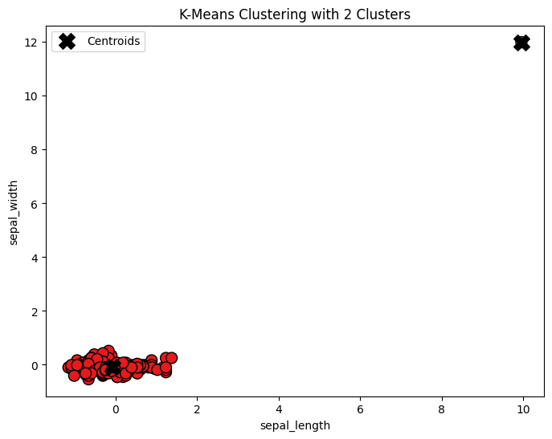
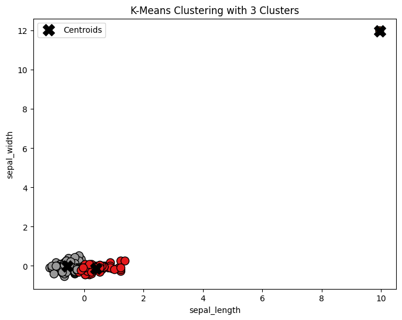
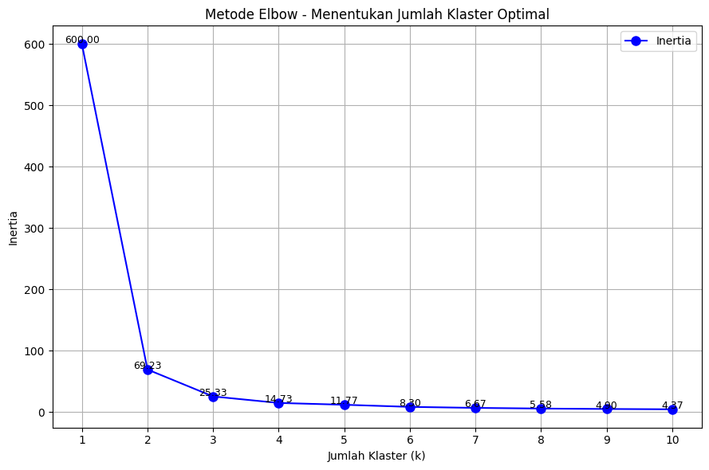
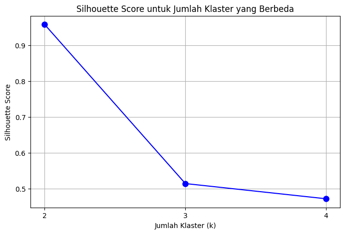

<!DOCTYPE html>


<html lang="en" data-content_root="./" >

  <head>
    <meta charset="utf-8" />
    <meta name="viewport" content="width=device-width, initial-scale=1.0" /><meta name="viewport" content="width=device-width, initial-scale=1" />

    <title>Algoritma K-Means &#8212; Penambangan Data</title>
  
  
  
  <script data-cfasync="false">
    document.documentElement.dataset.mode = localStorage.getItem("mode") || "";
    document.documentElement.dataset.theme = localStorage.getItem("theme") || "";
  </script>
  
  <!-- Loaded before other Sphinx assets -->
  <link href="_static/styles/theme.css?digest=dfe6caa3a7d634c4db9b" rel="stylesheet" />
<link href="_static/styles/bootstrap.css?digest=dfe6caa3a7d634c4db9b" rel="stylesheet" />
<link href="_static/styles/pydata-sphinx-theme.css?digest=dfe6caa3a7d634c4db9b" rel="stylesheet" />

  
  <link href="_static/vendor/fontawesome/6.5.2/css/all.min.css?digest=dfe6caa3a7d634c4db9b" rel="stylesheet" />
  <link rel="preload" as="font" type="font/woff2" crossorigin href="_static/vendor/fontawesome/6.5.2/webfonts/fa-solid-900.woff2" />
<link rel="preload" as="font" type="font/woff2" crossorigin href="_static/vendor/fontawesome/6.5.2/webfonts/fa-brands-400.woff2" />
<link rel="preload" as="font" type="font/woff2" crossorigin href="_static/vendor/fontawesome/6.5.2/webfonts/fa-regular-400.woff2" />

    <link rel="stylesheet" type="text/css" href="_static/pygments.css?v=03e43079" />
    <link rel="stylesheet" type="text/css" href="_static/styles/sphinx-book-theme.css?v=eba8b062" />
    <link rel="stylesheet" type="text/css" href="_static/togglebutton.css?v=13237357" />
    <link rel="stylesheet" type="text/css" href="_static/copybutton.css?v=76b2166b" />
    <link rel="stylesheet" type="text/css" href="_static/mystnb.4510f1fc1dee50b3e5859aac5469c37c29e427902b24a333a5f9fcb2f0b3ac41.css?v=be8a1c11" />
    <link rel="stylesheet" type="text/css" href="_static/sphinx-thebe.css?v=4fa983c6" />
    <link rel="stylesheet" type="text/css" href="_static/sphinx-design.min.css?v=95c83b7e" />
  
  <!-- Pre-loaded scripts that we'll load fully later -->
  <link rel="preload" as="script" href="_static/scripts/bootstrap.js?digest=dfe6caa3a7d634c4db9b" />
<link rel="preload" as="script" href="_static/scripts/pydata-sphinx-theme.js?digest=dfe6caa3a7d634c4db9b" />
  <script src="_static/vendor/fontawesome/6.5.2/js/all.min.js?digest=dfe6caa3a7d634c4db9b"></script>

    <script src="_static/documentation_options.js?v=9eb32ce0"></script>
    <script src="_static/doctools.js?v=9a2dae69"></script>
    <script src="_static/sphinx_highlight.js?v=dc90522c"></script>
    <script src="_static/clipboard.min.js?v=a7894cd8"></script>
    <script src="_static/copybutton.js?v=f281be69"></script>
    <script src="_static/scripts/sphinx-book-theme.js?v=887ef09a"></script>
    <script>let toggleHintShow = 'Click to show';</script>
    <script>let toggleHintHide = 'Click to hide';</script>
    <script>let toggleOpenOnPrint = 'true';</script>
    <script src="_static/togglebutton.js?v=4a39c7ea"></script>
    <script>var togglebuttonSelector = '.toggle, .admonition.dropdown';</script>
    <script src="_static/design-tabs.js?v=f930bc37"></script>
    <script>const THEBE_JS_URL = "https://unpkg.com/thebe@0.8.2/lib/index.js"; const thebe_selector = ".thebe,.cell"; const thebe_selector_input = "pre"; const thebe_selector_output = ".output, .cell_output"</script>
    <script async="async" src="_static/sphinx-thebe.js?v=c100c467"></script>
    <script>var togglebuttonSelector = '.toggle, .admonition.dropdown';</script>
    <script>const THEBE_JS_URL = "https://unpkg.com/thebe@0.8.2/lib/index.js"; const thebe_selector = ".thebe,.cell"; const thebe_selector_input = "pre"; const thebe_selector_output = ".output, .cell_output"</script>
    <script>window.MathJax = {"options": {"processHtmlClass": "tex2jax_process|mathjax_process|math|output_area"}}</script>
    <script defer="defer" src="https://cdn.jsdelivr.net/npm/mathjax@3/es5/tex-mml-chtml.js"></script>
    <script>DOCUMENTATION_OPTIONS.pagename = 'Clustering';</script>
    <link rel="index" title="Index" href="genindex.html" />
    <link rel="search" title="Search" href="search.html" />
    <link rel="prev" title="Naive Bayes" href="Naive_Bayes.html" />
  <meta name="viewport" content="width=device-width, initial-scale=1"/>
  <meta name="docsearch:language" content="en"/>
  </head>
  
  
  <body data-bs-spy="scroll" data-bs-target=".bd-toc-nav" data-offset="180" data-bs-root-margin="0px 0px -60%" data-default-mode="">

  
  
  <div id="pst-skip-link" class="skip-link d-print-none"><a href="#main-content">Skip to main content</a></div>
  
  <div id="pst-scroll-pixel-helper"></div>
  
  <button type="button" class="btn rounded-pill" id="pst-back-to-top">
    <i class="fa-solid fa-arrow-up"></i>Back to top</button>

  
  <input type="checkbox"
          class="sidebar-toggle"
          id="pst-primary-sidebar-checkbox"/>
  <label class="overlay overlay-primary" for="pst-primary-sidebar-checkbox"></label>
  
  <input type="checkbox"
          class="sidebar-toggle"
          id="pst-secondary-sidebar-checkbox"/>
  <label class="overlay overlay-secondary" for="pst-secondary-sidebar-checkbox"></label>
  
  <div class="search-button__wrapper">
    <div class="search-button__overlay"></div>
    <div class="search-button__search-container">
<form class="bd-search d-flex align-items-center"
      action="search.html"
      method="get">
  <i class="fa-solid fa-magnifying-glass"></i>
  <input type="search"
         class="form-control"
         name="q"
         id="search-input"
         placeholder="Search this book..."
         aria-label="Search this book..."
         autocomplete="off"
         autocorrect="off"
         autocapitalize="off"
         spellcheck="false"/>
  <span class="search-button__kbd-shortcut"><kbd class="kbd-shortcut__modifier">Ctrl</kbd>+<kbd>K</kbd></span>
</form></div>
  </div>

  <div class="pst-async-banner-revealer d-none">
  <aside id="bd-header-version-warning" class="d-none d-print-none" aria-label="Version warning"></aside>
</div>

  
    <header class="bd-header navbar navbar-expand-lg bd-navbar d-print-none">
    </header>
  

  <div class="bd-container">
    <div class="bd-container__inner bd-page-width">
      
      
      
      <div class="bd-sidebar-primary bd-sidebar">
        

  
  <div class="sidebar-header-items sidebar-primary__section">
    
    
    
    
  </div>
  
    <div class="sidebar-primary-items__start sidebar-primary__section">
        <div class="sidebar-primary-item">

  
    
  

<a class="navbar-brand logo" href="intro.html">
  
  
  
  
  
    
    
      
    
    
    
    <script>document.write(``);</script>
  
  
</a></div>
        <div class="sidebar-primary-item">

 <script>
 document.write(`
   <button class="btn search-button-field search-button__button" title="Search" aria-label="Search" data-bs-placement="bottom" data-bs-toggle="tooltip">
    <i class="fa-solid fa-magnifying-glass"></i>
    <span class="search-button__default-text">Search</span>
    <span class="search-button__kbd-shortcut"><kbd class="kbd-shortcut__modifier">Ctrl</kbd>+<kbd class="kbd-shortcut__modifier">K</kbd></span>
   </button>
 `);
 </script></div>
        <div class="sidebar-primary-item"><nav class="bd-links bd-docs-nav" aria-label="Main">
    <div class="bd-toc-item navbar-nav active">
        
        <ul class="nav bd-sidenav bd-sidenav__home-link">
            <li class="toctree-l1">
                <a class="reference internal" href="intro.html">
                    SELAMAT DATANG DI TUGAS LAYLIS
                </a>
            </li>
        </ul>
        <ul class="current nav bd-sidenav">
<li class="toctree-l1"><a class="reference internal" href="pemdatD_DataUnderstanding_23_185.html">Understanding Data</a></li>
<li class="toctree-l1"><a class="reference internal" href="DeteksiOutlier.html">Outlier Detection</a></li>
<li class="toctree-l1"><a class="reference internal" href="LOF.html">Local Outlier Factor</a></li>
<li class="toctree-l1"><a class="reference internal" href="Naive_Bayes.html">Naive Bayes</a></li>
<li class="toctree-l1 current active"><a class="current reference internal" href="#"><strong>Algoritma <em>K-Means</em></strong></a></li>
</ul>

    </div>
</nav></div>
    </div>
  
  
  <div class="sidebar-primary-items__end sidebar-primary__section">
  </div>
  
  <div id="rtd-footer-container"></div>


      </div>
      
      <main id="main-content" class="bd-main" role="main">
        
        

<div class="sbt-scroll-pixel-helper"></div>

          <div class="bd-content">
            <div class="bd-article-container">
              
              <div class="bd-header-article d-print-none">
<div class="header-article-items header-article__inner">
  
    <div class="header-article-items__start">
      
        <div class="header-article-item"><button class="sidebar-toggle primary-toggle btn btn-sm" title="Toggle primary sidebar" data-bs-placement="bottom" data-bs-toggle="tooltip">
  <span class="fa-solid fa-bars"></span>
</button></div>
      
    </div>
  
  
    <div class="header-article-items__end">
      
        <div class="header-article-item">

<div class="article-header-buttons">


<div class="dropdown dropdown-source-buttons">
  <button class="btn dropdown-toggle" type="button" data-bs-toggle="dropdown" aria-expanded="false" aria-label="Source repositories">
    <i class="fab fa-github"></i>
  </button>
  <ul class="dropdown-menu">
      
      
      
      <li><a href="https://github.com/executablebooks/jupyter-book" target="_blank"
   class="btn btn-sm btn-source-repository-button dropdown-item"
   title="Source repository"
   data-bs-placement="left" data-bs-toggle="tooltip"
>
  

<span class="btn__icon-container">
  <i class="fab fa-github"></i>
  </span>
<span class="btn__text-container">Repository</span>
</a>
</li>
      
      
      
      
      <li><a href="https://github.com/executablebooks/jupyter-book/issues/new?title=Issue%20on%20page%20%2FClustering.html&body=Your%20issue%20content%20here." target="_blank"
   class="btn btn-sm btn-source-issues-button dropdown-item"
   title="Open an issue"
   data-bs-placement="left" data-bs-toggle="tooltip"
>
  

<span class="btn__icon-container">
  <i class="fas fa-lightbulb"></i>
  </span>
<span class="btn__text-container">Open issue</span>
</a>
</li>
      
  </ul>
</div>


<div class="dropdown dropdown-download-buttons">
  <button class="btn dropdown-toggle" type="button" data-bs-toggle="dropdown" aria-expanded="false" aria-label="Download this page">
    <i class="fas fa-download"></i>
  </button>
  <ul class="dropdown-menu">
      
      
      
      <li><a href="_sources/Clustering.ipynb" target="_blank"
   class="btn btn-sm btn-download-source-button dropdown-item"
   title="Download source file"
   data-bs-placement="left" data-bs-toggle="tooltip"
>
  

<span class="btn__icon-container">
  <i class="fas fa-file"></i>
  </span>
<span class="btn__text-container">.ipynb</span>
</a>
</li>
      
      
      
      
      <li>
<button onclick="window.print()"
  class="btn btn-sm btn-download-pdf-button dropdown-item"
  title="Print to PDF"
  data-bs-placement="left" data-bs-toggle="tooltip"
>
  

<span class="btn__icon-container">
  <i class="fas fa-file-pdf"></i>
  </span>
<span class="btn__text-container">.pdf</span>
</button>
</li>
      
  </ul>
</div>


<button onclick="toggleFullScreen()"
  class="btn btn-sm btn-fullscreen-button"
  title="Fullscreen mode"
  data-bs-placement="bottom" data-bs-toggle="tooltip"
>
  

<span class="btn__icon-container">
  <i class="fas fa-expand"></i>
  </span>

</button>


<script>
document.write(`
  <button class="btn btn-sm nav-link pst-navbar-icon theme-switch-button" title="light/dark" aria-label="light/dark" data-bs-placement="bottom" data-bs-toggle="tooltip">
    <i class="theme-switch fa-solid fa-sun fa-lg" data-mode="light"></i>
    <i class="theme-switch fa-solid fa-moon fa-lg" data-mode="dark"></i>
    <i class="theme-switch fa-solid fa-circle-half-stroke fa-lg" data-mode="auto"></i>
  </button>
`);
</script>


<script>
document.write(`
  <button class="btn btn-sm pst-navbar-icon search-button search-button__button" title="Search" aria-label="Search" data-bs-placement="bottom" data-bs-toggle="tooltip">
    <i class="fa-solid fa-magnifying-glass fa-lg"></i>
  </button>
`);
</script>
<button class="sidebar-toggle secondary-toggle btn btn-sm" title="Toggle secondary sidebar" data-bs-placement="bottom" data-bs-toggle="tooltip">
    <span class="fa-solid fa-list"></span>
</button>
</div></div>
      
    </div>
  
</div>
</div>
              
              

<div id="jb-print-docs-body" class="onlyprint">
    <h1>Algoritma K-Means</h1>
    <!-- Table of contents -->
    <div id="print-main-content">
        <div id="jb-print-toc">
            
            <div>
                <h2> Contents </h2>
            </div>
            <nav aria-label="Page">
                <ul class="visible nav section-nav flex-column">
<li class="toc-h2 nav-item toc-entry"><a class="reference internal nav-link" href="#pengertian-k-means-clustering"><strong>Pengertian <em>K-Means Clustering</em></strong></a></li>
<li class="toc-h2 nav-item toc-entry"><a class="reference internal nav-link" href="#manfaat-clustering"><strong>Manfaat <em>Clustering</em></strong></a></li>
<li class="toc-h2 nav-item toc-entry"><a class="reference internal nav-link" href="#inertia-sum-square-error-sse"><strong>Inertia (Sum Square error/SSE)</strong></a></li>
<li class="toc-h2 nav-item toc-entry"><a class="reference internal nav-link" href="#silhouette-analysis"><strong>Silhouette Analysis</strong></a></li>
<li class="toc-h2 nav-item toc-entry"><a class="reference internal nav-link" href="#implementasi-untuk-data-iris"><strong>Implementasi untuk data Iris</strong></a></li>
<li class="toc-h2 nav-item toc-entry"><a class="reference internal nav-link" href="#pengumpulan-data"><strong>Pengumpulan Data</strong></a></li>
<li class="toc-h2 nav-item toc-entry"><a class="reference internal nav-link" href="#clustering-pada-data-iris-menggunakan-k-means-dengan-jumlah-cluster-2-3-dan-4"><strong>Clustering pada data Iris menggunakan K-Means dengan jumlah cluster 2,3 dan 4</strong></a></li>
<li class="toc-h2 nav-item toc-entry"><a class="reference internal nav-link" href="#model-plotting-dengan-jumlah-cluster-2-3-dan-4"><strong>Model Plotting dengan Jumlah Cluster 2, 3 dan 4</strong></a></li>
<li class="toc-h2 nav-item toc-entry"><a class="reference internal nav-link" href="#menghitung-inertia-untuk-jumlah-cluster-2-3-dan-4"><strong>Menghitung Inertia untuk Jumlah Cluster 2,3 dan 4</strong></a></li>
<li class="toc-h2 nav-item toc-entry"><a class="reference internal nav-link" href="#model-plotting-diagram-elbow-method"><strong>Model Plotting Diagram Elbow Method</strong></a></li>
<li class="toc-h2 nav-item toc-entry"><a class="reference internal nav-link" href="#menghitung-silhouette-score-untuk-jumlah-cluster-2-3-dan-4"><strong>Menghitung Silhouette Score untuk Jumlah Cluster 2,3 dan 4</strong></a></li>
</ul>
            </nav>
        </div>
    </div>
</div>

              
                
<div id="searchbox"></div>
                <article class="bd-article">
                  
  <section class="tex2jax_ignore mathjax_ignore" id="algoritma-k-means">
<h1><strong>Algoritma <em>K-Means</em></strong><a class="headerlink" href="#algoritma-k-means" title="Link to this heading">#</a></h1>
<section id="pengertian-k-means-clustering">
<h2><strong>Pengertian <em>K-Means Clustering</em></strong><a class="headerlink" href="#pengertian-k-means-clustering" title="Link to this heading">#</a></h2>
<p>K-Means Clustering merupakan metode untuk mengelompokkan data dengan cara memisahkannya ke dalam beberapa cluster. Teknik ini bekerja dengan menempatkan data yang memiliki kesamaan fitur ke dalam kelompok yang sama, sedangkan data yang memiliki karakteristik berbeda dikelompokkan ke dalam cluster lain. Proses pengelompokan ini dilakukan dengan menggunakan titik pusat (centroid) sebagai acuan dalam menentukan pembagian cluster, sehingga data yang mirip berada dalam satu cluster, dan data yang berbeda tersebar di cluster lain.</p>
</section>
<section id="manfaat-clustering">
<h2><strong>Manfaat <em>Clustering</em></strong><a class="headerlink" href="#manfaat-clustering" title="Link to this heading">#</a></h2>
<ul class="simple">
<li><p>Clustering adalah teknik segmentasi data yang sangat bermanfaat untuk keperluan prediksi dan analisis berbagai permasalahan bisnis. Contohnya dapat diterapkan dalam segmentasi pasar, strategi pemasaran, serta pemetaan wilayah berdasarkan zona tertentu.</p></li>
<li><p>Pengenalan objek digunakan dalam berbagai bidang, seperti computer vision dan pemrosesan citra.</p></li>
</ul>
<p>Clustering yang efektif akan menghasilkan kelompok dengan tingkat kemiripan yang tinggi di dalam satu cluster dan tingkat kemiripan yang rendah antar cluster. Kemiripan ini diukur secara numerik antara dua objek. Semakin mirip dua objek yang dibandingkan, semakin tinggi nilai kesamaannya, dan sebaliknya, semakin berbeda objek tersebut, maka nilai kesamaannya akan rendah. Kualitas dari hasil clustering sangat dipengaruhi oleh metode yang digunakan dalam proses pengelompokannya.</p>
</section>
<section id="inertia-sum-square-error-sse">
<h2><strong>Inertia (Sum Square error/SSE)</strong><a class="headerlink" href="#inertia-sum-square-error-sse" title="Link to this heading">#</a></h2>
<p>Dalam konteks algoritma <em>K-Means Clustering</em>, <em>inertia</em> (Sum Square error/SSE) adalah salah satu metrik evaluasi untuk menilai seberapa baik data dikelompokkan ke dalam klaster serta mengukur jumlah total jarak kuadrat antara setiap titik data dan pusat klaster (centroid) tempat titik tersebut.</p>
<p>Inertia didefinisikan sebagai:</p>
<div class="math notranslate nohighlight">
\[
\text{Inertia} = \sum_{i=1}^{n} \left\| x_i - \mu_{c_i} \right\|^2
\]</div>
<p><strong>Penjelasan Notasi</strong></p>
<ul class="simple">
<li><p><span class="math notranslate nohighlight">\(x_i\)</span>: Titik data ke-<span class="math notranslate nohighlight">\(i\)</span></p></li>
<li><p><span class="math notranslate nohighlight">\(\mu_{c_i}\)</span>: Centroid dari klaster tempat <span class="math notranslate nohighlight">\(x_i\)</span> berada</p></li>
<li><p><span class="math notranslate nohighlight">\(\left\| x_i - \mu_{c_i} \right\|^2\)</span>: Jarak Euclidean kuadrat antara <span class="math notranslate nohighlight">\(x_i\)</span> dan centroid-nya</p></li>
<li><p><span class="math notranslate nohighlight">\(n\)</span>: Jumlah total data</p></li>
</ul>
</section>
<section id="silhouette-analysis">
<h2><strong>Silhouette Analysis</strong><a class="headerlink" href="#silhouette-analysis" title="Link to this heading">#</a></h2>
<p>Silhouette Analysis adalah metrik evaluasi lain yang lebih baik dari inertia dalam banyak kasus untuk mengevaluasi hasil clustering, seperti pada K-Means, karena mempertimbangkan dua hal sekaligus yaitu:</p>
<ul class="simple">
<li><p>Kepadatan dalam klaster</p></li>
<li><p>Jarak antar klaster</p></li>
</ul>
<p>Silhouette Analysis mengukur seberapa mirip suatu titik data dengan klasternya sendiri dibandingkan dengan klaster terdekat lainnya. Rumusnya adalah:</p>
<div class="math notranslate nohighlight">
\[
s(i) = \frac{b(i) - a(i)}{\max(a(i), b(i))}
\]</div>
<p><strong>Penjelasan Notasi</strong>:</p>
<ul class="simple">
<li><p><span class="math notranslate nohighlight">\(a(i)\)</span>: Rata-rata jarak dari titik <span class="math notranslate nohighlight">\(i\)</span> ke semua titik lain dalam klaster yang sama (cohesion)</p></li>
<li><p><span class="math notranslate nohighlight">\(b(i)\)</span>: Rata-rata jarak dari titik <span class="math notranslate nohighlight">\(i\)</span> ke semua titik dalam klaster terdekat yang bukan miliknya (separation)</p></li>
<li><p><span class="math notranslate nohighlight">\(s(i)\)</span>: Skor silhouette untuk titik <span class="math notranslate nohighlight">\(i\)</span>, dengan nilai antara -1 dan 1</p></li>
</ul>
<p>Nilai skor <span class="math notranslate nohighlight">\(s(i)\)</span> ditafsirkan sebagai berikut:</p>
<ul class="simple">
<li><p>Jika <span class="math notranslate nohighlight">\(s(i) \approx 1\)</span>, maka titik berada jauh dari klaster lain dan cocok dengan klasternya</p></li>
<li><p>Jika <span class="math notranslate nohighlight">\(s(i) \approx 0\)</span>, maka titik berada di antara dua klaster</p></li>
<li><p>Jika <span class="math notranslate nohighlight">\(s(i) \approx -1\)</span>, maka titik bisa jadi salah masuk klaster</p></li>
</ul>
<p>Untuk mengevaluasi seluruh hasil clustering, digunakan rata-rata dari semua <span class="math notranslate nohighlight">\(s(i)\)</span>:</p>
<div class="math notranslate nohighlight">
\[
S = \frac{1}{n} \sum_{i=1}^{n} s(i)
\]</div>
<ul class="simple">
<li><p><span class="math notranslate nohighlight">\(n\)</span>: Jumlah total data</p></li>
<li><p><span class="math notranslate nohighlight">\(S\)</span>: Silhouette score rata-rata seluruh data</p></li>
</ul>
</section>
<section id="implementasi-untuk-data-iris">
<h2><strong>Implementasi untuk data Iris</strong><a class="headerlink" href="#implementasi-untuk-data-iris" title="Link to this heading">#</a></h2>
<div class="cell docutils container">
<div class="cell_input docutils container">
<div class="highlight-ipython3 notranslate"><div class="highlight"><pre><span></span><span class="o">%</span><span class="k">pip</span> install pymysql
<span class="o">%</span><span class="k">pip</span> install psycopg2
</pre></div>
</div>
</div>
<div class="cell_output docutils container">
<div class="output stream highlight-myst-ansi notranslate"><div class="highlight"><pre><span></span>Requirement already satisfied: pymysql in /usr/local/python/3.12.1/lib/python3.12/site-packages (1.1.1)
</pre></div>
</div>
<div class="output stream highlight-myst-ansi notranslate"><div class="highlight"><pre><span></span><span class=" -Color -Color-Bold">[</span><span class=" -Color -Color-Blue">notice</span><span class=" -Color -Color-Bold">]</span> A new release of pip is available: <span class=" -Color -Color-Red">25.0.1</span> -&gt; <span class=" -Color -Color-Green">25.1.1</span>
<span class=" -Color -Color-Bold">[</span><span class=" -Color -Color-Blue">notice</span><span class=" -Color -Color-Bold">]</span> To update, run: <span class=" -Color -Color-Green">python3 -m pip install --upgrade pip</span>
</pre></div>
</div>
<div class="output stream highlight-myst-ansi notranslate"><div class="highlight"><pre><span></span>Note: you may need to restart the kernel to use updated packages.
</pre></div>
</div>
<div class="output stream highlight-myst-ansi notranslate"><div class="highlight"><pre><span></span>Collecting psycopg2
  Downloading psycopg2-2.9.10.tar.gz (385 kB)
</pre></div>
</div>
<div class="output stream highlight-myst-ansi notranslate"><div class="highlight"><pre><span></span>  Preparing metadata (setup.py) ... ?25l-
</pre></div>
</div>
<div class="output stream highlight-myst-ansi notranslate"><div class="highlight"><pre><span></span> done
?25hBuilding wheels for collected packages: psycopg2
</pre></div>
</div>
<div class="output stream highlight-myst-ansi notranslate"><div class="highlight"><pre><span></span>  Building wheel for psycopg2 (setup.py) ... ?25l-
</pre></div>
</div>
<div class="output stream highlight-myst-ansi notranslate"><div class="highlight"><pre><span></span> \
</pre></div>
</div>
<div class="output stream highlight-myst-ansi notranslate"><div class="highlight"><pre><span></span> |
</pre></div>
</div>
<div class="output stream highlight-myst-ansi notranslate"><div class="highlight"><pre><span></span> /
</pre></div>
</div>
<div class="output stream highlight-myst-ansi notranslate"><div class="highlight"><pre><span></span> -
</pre></div>
</div>
<div class="output stream highlight-myst-ansi notranslate"><div class="highlight"><pre><span></span> \
</pre></div>
</div>
<div class="output stream highlight-myst-ansi notranslate"><div class="highlight"><pre><span></span> |
</pre></div>
</div>
<div class="output stream highlight-myst-ansi notranslate"><div class="highlight"><pre><span></span> /
</pre></div>
</div>
<div class="output stream highlight-myst-ansi notranslate"><div class="highlight"><pre><span></span> -
</pre></div>
</div>
<div class="output stream highlight-myst-ansi notranslate"><div class="highlight"><pre><span></span> \
</pre></div>
</div>
<div class="output stream highlight-myst-ansi notranslate"><div class="highlight"><pre><span></span> |
</pre></div>
</div>
<div class="output stream highlight-myst-ansi notranslate"><div class="highlight"><pre><span></span> /
</pre></div>
</div>
<div class="output stream highlight-myst-ansi notranslate"><div class="highlight"><pre><span></span> -
</pre></div>
</div>
<div class="output stream highlight-myst-ansi notranslate"><div class="highlight"><pre><span></span> \
</pre></div>
</div>
<div class="output stream highlight-myst-ansi notranslate"><div class="highlight"><pre><span></span> |
</pre></div>
</div>
<div class="output stream highlight-myst-ansi notranslate"><div class="highlight"><pre><span></span> /
</pre></div>
</div>
<div class="output stream highlight-myst-ansi notranslate"><div class="highlight"><pre><span></span> -
</pre></div>
</div>
<div class="output stream highlight-myst-ansi notranslate"><div class="highlight"><pre><span></span> \
</pre></div>
</div>
<div class="output stream highlight-myst-ansi notranslate"><div class="highlight"><pre><span></span> |
</pre></div>
</div>
<div class="output stream highlight-myst-ansi notranslate"><div class="highlight"><pre><span></span> /
</pre></div>
</div>
<div class="output stream highlight-myst-ansi notranslate"><div class="highlight"><pre><span></span> -
</pre></div>
</div>
<div class="output stream highlight-myst-ansi notranslate"><div class="highlight"><pre><span></span> \
</pre></div>
</div>
<div class="output stream highlight-myst-ansi notranslate"><div class="highlight"><pre><span></span> |
</pre></div>
</div>
<div class="output stream highlight-myst-ansi notranslate"><div class="highlight"><pre><span></span> /
</pre></div>
</div>
<div class="output stream highlight-myst-ansi notranslate"><div class="highlight"><pre><span></span> -
</pre></div>
</div>
<div class="output stream highlight-myst-ansi notranslate"><div class="highlight"><pre><span></span> \
</pre></div>
</div>
<div class="output stream highlight-myst-ansi notranslate"><div class="highlight"><pre><span></span> |
</pre></div>
</div>
<div class="output stream highlight-myst-ansi notranslate"><div class="highlight"><pre><span></span> /
</pre></div>
</div>
<div class="output stream highlight-myst-ansi notranslate"><div class="highlight"><pre><span></span> -
</pre></div>
</div>
<div class="output stream highlight-myst-ansi notranslate"><div class="highlight"><pre><span></span> \
</pre></div>
</div>
<div class="output stream highlight-myst-ansi notranslate"><div class="highlight"><pre><span></span> |
</pre></div>
</div>
<div class="output stream highlight-myst-ansi notranslate"><div class="highlight"><pre><span></span> /
</pre></div>
</div>
<div class="output stream highlight-myst-ansi notranslate"><div class="highlight"><pre><span></span> -
</pre></div>
</div>
<div class="output stream highlight-myst-ansi notranslate"><div class="highlight"><pre><span></span> \
</pre></div>
</div>
<div class="output stream highlight-myst-ansi notranslate"><div class="highlight"><pre><span></span> |
</pre></div>
</div>
<div class="output stream highlight-myst-ansi notranslate"><div class="highlight"><pre><span></span> /
</pre></div>
</div>
<div class="output stream highlight-myst-ansi notranslate"><div class="highlight"><pre><span></span> done
?25h  Created wheel for psycopg2: filename=psycopg2-2.9.10-cp312-cp312-linux_x86_64.whl size=635625 sha256=ab965564d525a53cc24b415377a8d517f84135728b0673d90f2801acba399017
  Stored in directory: /home/codespace/.cache/pip/wheels/ac/bb/ce/afa589c50b6004d3a06fc691e71bd09c9bd5f01e5921e5329b
Successfully built psycopg2
</pre></div>
</div>
<div class="output stream highlight-myst-ansi notranslate"><div class="highlight"><pre><span></span>Installing collected packages: psycopg2
</pre></div>
</div>
<div class="output stream highlight-myst-ansi notranslate"><div class="highlight"><pre><span></span>Successfully installed psycopg2-2.9.10

<span class=" -Color -Color-Bold">[</span><span class=" -Color -Color-Blue">notice</span><span class=" -Color -Color-Bold">]</span> A new release of pip is available: <span class=" -Color -Color-Red">25.0.1</span> -&gt; <span class=" -Color -Color-Green">25.1.1</span>
<span class=" -Color -Color-Bold">[</span><span class=" -Color -Color-Blue">notice</span><span class=" -Color -Color-Bold">]</span> To update, run: <span class=" -Color -Color-Green">python3 -m pip install --upgrade pip</span>
</pre></div>
</div>
<div class="output stream highlight-myst-ansi notranslate"><div class="highlight"><pre><span></span>Note: you may need to restart the kernel to use updated packages.
</pre></div>
</div>
</div>
</div>
<div class="cell docutils container">
<div class="cell_input docutils container">
<div class="highlight-ipython3 notranslate"><div class="highlight"><pre><span></span><span class="kn">from</span><span class="w"> </span><span class="nn">sklearn.cluster</span><span class="w"> </span><span class="kn">import</span> <span class="n">KMeans</span>
<span class="kn">from</span><span class="w"> </span><span class="nn">sklearn.preprocessing</span><span class="w"> </span><span class="kn">import</span> <span class="n">StandardScaler</span>
<span class="kn">from</span><span class="w"> </span><span class="nn">sklearn.metrics</span><span class="w"> </span><span class="kn">import</span> <span class="n">adjusted_rand_score</span>
<span class="kn">from</span><span class="w"> </span><span class="nn">sklearn.metrics</span><span class="w"> </span><span class="kn">import</span> <span class="n">silhouette_score</span>
<span class="kn">import</span><span class="w"> </span><span class="nn">psycopg2</span>
<span class="kn">import</span><span class="w"> </span><span class="nn">pymysql</span>
<span class="kn">import</span><span class="w"> </span><span class="nn">pandas</span><span class="w"> </span><span class="k">as</span><span class="w"> </span><span class="nn">pd</span>
<span class="kn">import</span><span class="w"> </span><span class="nn">matplotlib.pyplot</span><span class="w"> </span><span class="k">as</span><span class="w"> </span><span class="nn">plt</span>
<span class="kn">import</span><span class="w"> </span><span class="nn">seaborn</span><span class="w"> </span><span class="k">as</span><span class="w"> </span><span class="nn">sns</span>
<span class="kn">import</span><span class="w"> </span><span class="nn">numpy</span><span class="w"> </span><span class="k">as</span><span class="w"> </span><span class="nn">np</span>
</pre></div>
</div>
</div>
</div>
</section>
<section id="pengumpulan-data">
<h2><strong>Pengumpulan Data</strong><a class="headerlink" href="#pengumpulan-data" title="Link to this heading">#</a></h2>
<div class="cell docutils container">
<div class="cell_input docutils container">
<div class="highlight-ipython3 notranslate"><div class="highlight"><pre><span></span><span class="k">def</span><span class="w"> </span><span class="nf">get_pg_data</span><span class="p">():</span>
    <span class="n">conn</span> <span class="o">=</span> <span class="n">psycopg2</span><span class="o">.</span><span class="n">connect</span><span class="p">(</span>
        <span class="n">host</span><span class="o">=</span><span class="s2">&quot;pg-2e640ec9-rahmatullayli123-d892.h.aivencloud.com&quot;</span><span class="p">,</span>
        <span class="n">user</span><span class="o">=</span><span class="s2">&quot;avnadmin&quot;</span><span class="p">,</span>
        <span class="n">password</span><span class="o">=</span><span class="s2">&quot;AVNS_93PD-YH-4mlx5toeFU3&quot;</span><span class="p">,</span>
        <span class="n">database</span><span class="o">=</span><span class="s2">&quot;defaultdb&quot;</span><span class="p">,</span>
        <span class="n">port</span><span class="o">=</span><span class="mi">21028</span>
    <span class="p">)</span>
    <span class="n">cursor</span> <span class="o">=</span> <span class="n">conn</span><span class="o">.</span><span class="n">cursor</span><span class="p">()</span>
    <span class="n">cursor</span><span class="o">.</span><span class="n">execute</span><span class="p">(</span><span class="s2">&quot;SELECT * FROM sepal&quot;</span><span class="p">)</span>
    <span class="n">data</span> <span class="o">=</span> <span class="n">cursor</span><span class="o">.</span><span class="n">fetchall</span><span class="p">()</span>
    <span class="n">columns</span> <span class="o">=</span> <span class="p">[</span><span class="n">desc</span><span class="p">[</span><span class="mi">0</span><span class="p">]</span> <span class="k">for</span> <span class="n">desc</span> <span class="ow">in</span> <span class="n">cursor</span><span class="o">.</span><span class="n">description</span><span class="p">]</span>  <span class="c1"># Ambil nama kolom</span>
    <span class="n">cursor</span><span class="o">.</span><span class="n">close</span><span class="p">()</span>
    <span class="n">conn</span><span class="o">.</span><span class="n">close</span><span class="p">()</span>

    <span class="k">return</span> <span class="n">pd</span><span class="o">.</span><span class="n">DataFrame</span><span class="p">(</span><span class="n">data</span><span class="p">,</span> <span class="n">columns</span><span class="o">=</span><span class="n">columns</span><span class="p">)</span>

<span class="k">def</span><span class="w"> </span><span class="nf">get_mysql_data</span><span class="p">():</span>
    <span class="n">conn</span> <span class="o">=</span> <span class="n">pymysql</span><span class="o">.</span><span class="n">connect</span><span class="p">(</span>
        <span class="n">host</span><span class="o">=</span><span class="s2">&quot;mysql-309c3d6e-mysqlirispendata7.h.aivencloud.com&quot;</span><span class="p">,</span>
        <span class="n">user</span><span class="o">=</span><span class="s2">&quot;avnadmin&quot;</span><span class="p">,</span>
        <span class="n">password</span><span class="o">=</span><span class="s2">&quot;AVNS_krNRWz9TOsAjruawhm3&quot;</span><span class="p">,</span>
        <span class="n">database</span><span class="o">=</span><span class="s2">&quot;iris_mysql&quot;</span><span class="p">,</span>
        <span class="n">port</span><span class="o">=</span> <span class="mi">26958</span>
    <span class="p">)</span>
    <span class="n">cursor</span> <span class="o">=</span> <span class="n">conn</span><span class="o">.</span><span class="n">cursor</span><span class="p">()</span>
    <span class="n">cursor</span><span class="o">.</span><span class="n">execute</span><span class="p">(</span><span class="s2">&quot;SELECT * FROM petal&quot;</span><span class="p">)</span>
    <span class="n">data</span> <span class="o">=</span> <span class="n">cursor</span><span class="o">.</span><span class="n">fetchall</span><span class="p">()</span>
    <span class="n">columns</span> <span class="o">=</span> <span class="p">[</span><span class="n">desc</span><span class="p">[</span><span class="mi">0</span><span class="p">]</span> <span class="k">for</span> <span class="n">desc</span> <span class="ow">in</span> <span class="n">cursor</span><span class="o">.</span><span class="n">description</span><span class="p">]</span>  <span class="c1"># Ambil nama kolom</span>
    <span class="n">cursor</span><span class="o">.</span><span class="n">close</span><span class="p">()</span>
    <span class="n">conn</span><span class="o">.</span><span class="n">close</span><span class="p">()</span>

    <span class="k">return</span> <span class="n">pd</span><span class="o">.</span><span class="n">DataFrame</span><span class="p">(</span><span class="n">data</span><span class="p">,</span> <span class="n">columns</span><span class="o">=</span><span class="n">columns</span><span class="p">)</span>

<span class="c1"># Ambil data dari kedua database</span>
<span class="n">df_postgresql</span> <span class="o">=</span> <span class="n">get_pg_data</span><span class="p">()</span>
<span class="n">df_mysql</span> <span class="o">=</span> <span class="n">get_mysql_data</span><span class="p">()</span>

<span class="c1"># Gabungkan berdasarkan kolom &#39;id&#39; dan &#39;Class&#39;</span>
<span class="n">df_merged</span> <span class="o">=</span> <span class="n">pd</span><span class="o">.</span><span class="n">merge</span><span class="p">(</span><span class="n">df_mysql</span><span class="p">,</span> <span class="n">df_postgresql</span><span class="p">,</span> <span class="n">on</span><span class="o">=</span><span class="p">[</span><span class="s2">&quot;id&quot;</span><span class="p">,</span> <span class="s2">&quot;class&quot;</span><span class="p">],</span> <span class="n">how</span><span class="o">=</span><span class="s2">&quot;inner&quot;</span><span class="p">)</span>

<span class="c1"># Cetak semua data hasil gabungan tanpa indeks</span>
<span class="nb">print</span><span class="p">(</span><span class="n">df_merged</span><span class="o">.</span><span class="n">to_string</span><span class="p">(</span><span class="n">index</span><span class="o">=</span><span class="kc">False</span><span class="p">))</span>
</pre></div>
</div>
</div>
<div class="cell_output docutils container">
<div class="output stream highlight-myst-ansi notranslate"><div class="highlight"><pre><span></span> id           class  petal_length  petal_width  sepal_length  sepal_width
  1     Iris-setosa          80.4         70.0          20.1         30.5
  2     Iris-setosa           1.4          0.2           4.9          3.0
  3     Iris-setosa           1.3          0.2           4.7          3.2
  4     Iris-setosa           1.5          0.2           4.6          3.1
  5     Iris-setosa           1.4          0.2           5.0          3.6
  6     Iris-setosa           1.7          0.4           5.4          3.9
  7     Iris-setosa           1.4          0.3           4.6          3.4
  8     Iris-setosa           1.5          0.2           5.0          3.4
  9     Iris-setosa           1.4          0.2           4.4          2.9
 10     Iris-setosa           1.5          0.1           4.9          3.1
 11     Iris-setosa           1.5          0.2           5.4          3.7
 12     Iris-setosa           1.6          0.2           4.8          3.4
 13     Iris-setosa           1.4          0.1           4.8          3.0
 14     Iris-setosa           1.1          0.1           4.3          3.0
 15     Iris-setosa           1.2          0.2           5.8          4.0
 16     Iris-setosa           1.5          0.4           5.7          4.4
 17     Iris-setosa           1.3          0.4           5.4          3.9
 18     Iris-setosa           1.4          0.3           5.1          3.5
 19     Iris-setosa           1.7          0.3           5.7          3.8
 20     Iris-setosa           1.5          0.3           5.1          3.8
 21     Iris-setosa           1.7          0.2           5.4          3.4
 22     Iris-setosa           1.5          0.4           5.1          3.7
 23     Iris-setosa           1.0          0.2           4.6          3.6
 24     Iris-setosa           1.7          0.5           5.1          3.3
 25     Iris-setosa           1.9          0.2           4.8          3.4
 26     Iris-setosa           1.6          0.2           5.0          3.0
 27     Iris-setosa           1.6          0.4           5.0          3.4
 28     Iris-setosa           1.5          0.2           5.2          3.5
 29     Iris-setosa           1.4          0.2           5.2          3.4
 30     Iris-setosa           1.6          0.2           4.7          3.2
 31     Iris-setosa           1.6          0.2           4.8          3.1
 32     Iris-setosa           1.5          0.4           5.4          3.4
 33     Iris-setosa           1.5          0.1           5.2          4.1
 34     Iris-setosa           1.4          0.2           5.5          4.2
 35     Iris-setosa           1.5          0.1           4.9          3.1
 36     Iris-setosa           1.2          0.2           5.0          3.2
 37     Iris-setosa           1.3          0.2           5.5          3.5
 38     Iris-setosa           1.5          0.1           4.9          3.1
 39     Iris-setosa           1.3          0.2           4.4          3.0
 40     Iris-setosa           1.5          0.2           5.1          3.4
 41     Iris-setosa           1.3          0.3           5.0          3.5
 42     Iris-setosa           1.3          0.3           4.5          2.3
 43     Iris-setosa           1.3          0.2           4.4          3.2
 44     Iris-setosa           1.6          0.6           5.0          3.5
 45     Iris-setosa           1.9          0.4           5.1          3.8
 46     Iris-setosa           1.4          0.3           4.8          3.0
 47     Iris-setosa           1.6          0.2           5.1          3.8
 48     Iris-setosa           1.4          0.2           4.6          3.2
 49     Iris-setosa           1.5          0.2           5.3          3.7
 50     Iris-setosa           1.4          0.2           5.0          3.3
 51 Iris-versicolor           4.7          1.4           7.0          3.2
 52 Iris-versicolor           4.5          1.5           6.4          3.2
 53 Iris-versicolor           4.9          1.5           6.9          3.1
 54 Iris-versicolor           4.0          1.3           5.5          2.3
 55 Iris-versicolor           4.6          1.5           6.5          2.8
 56 Iris-versicolor           4.5          1.3           5.7          2.8
 57 Iris-versicolor           4.7          1.6           6.3          3.3
 58 Iris-versicolor           3.3          1.0           4.9          2.4
 59 Iris-versicolor           4.6          1.3           6.6          2.9
 60 Iris-versicolor           3.9          1.4           5.2          2.7
 61 Iris-versicolor           3.5          1.0           5.0          2.0
 62 Iris-versicolor           4.2          1.5           5.9          3.0
 63 Iris-versicolor           4.0          1.0           6.0          2.2
 64 Iris-versicolor           4.7          1.4           6.1          2.9
 65 Iris-versicolor           3.6          1.3           5.6          2.9
 66 Iris-versicolor           4.4          1.4           6.7          3.1
 67 Iris-versicolor           4.5          1.5           5.6          3.0
 68 Iris-versicolor           4.1          1.0           5.8          2.7
 69 Iris-versicolor           4.5          1.5           6.2          2.2
 70 Iris-versicolor           3.9          1.1           5.6          2.5
 71 Iris-versicolor           4.8          1.8           5.9          3.2
 72 Iris-versicolor           4.0          1.3           6.1          2.8
 73 Iris-versicolor           4.9          1.5           6.3          2.5
 74 Iris-versicolor           4.7          1.2           6.1          2.8
 75 Iris-versicolor           4.3          1.3           6.4          2.9
 76 Iris-versicolor           4.4          1.4           6.6          3.0
 77 Iris-versicolor           4.8          1.4           6.8          2.8
 78 Iris-versicolor           5.0          1.7           6.7          3.0
 79 Iris-versicolor           4.5          1.5           6.0          2.9
 80 Iris-versicolor           3.5          1.0           5.7          2.6
 81 Iris-versicolor           3.8          1.1           5.5          2.4
 82 Iris-versicolor           3.7          1.0           5.5          2.4
 83 Iris-versicolor           3.9          1.2           5.8          2.7
 84 Iris-versicolor           5.1          1.6           6.0          2.7
 85 Iris-versicolor           4.5          1.5           5.4          3.0
 86 Iris-versicolor           4.5          1.6           6.0          3.4
 87 Iris-versicolor           4.7          1.5           6.7          3.1
 88 Iris-versicolor           4.4          1.3           6.3          2.3
 89 Iris-versicolor           4.1          1.3           5.6          3.0
 90 Iris-versicolor           4.0          1.3           5.5          2.5
 91 Iris-versicolor           4.4          1.2           5.5          2.6
 92 Iris-versicolor           4.6          1.4           6.1          3.0
 93 Iris-versicolor           4.0          1.2           5.8          2.6
 94 Iris-versicolor           3.3          1.0           5.0          2.3
 95 Iris-versicolor           4.2          1.3           5.6          2.7
 96 Iris-versicolor           4.2          1.2           5.7          3.0
 97 Iris-versicolor           4.2          1.3           5.7          2.9
 98 Iris-versicolor           4.3          1.3           6.2          2.9
 99 Iris-versicolor           3.0          1.1           5.1          2.5
100 Iris-versicolor           4.1          1.3           5.7          2.8
101  Iris-virginica           6.0          2.5           6.3          3.3
102  Iris-virginica           5.1          1.9           5.8          2.7
103  Iris-virginica           5.9          2.1           7.1          3.0
104  Iris-virginica           5.6          1.8           6.3          2.9
105  Iris-virginica           5.8          2.2           6.5          3.0
106  Iris-virginica           6.6          2.1           7.6          3.0
107  Iris-virginica           4.5          1.7           4.9          2.5
108  Iris-virginica           6.3          1.8           7.3          2.9
109  Iris-virginica           5.8          1.8           6.7          2.5
110  Iris-virginica           6.1          2.5           7.2          3.6
111  Iris-virginica           5.1          2.0           6.5          3.2
112  Iris-virginica           5.3          1.9           6.4          2.7
113  Iris-virginica           5.5          2.1           6.8          3.0
114  Iris-virginica           5.0          2.0           5.7          2.5
115  Iris-virginica           5.1          2.4           5.8          2.8
116  Iris-virginica           5.3          2.3           6.4          3.2
117  Iris-virginica           5.5          1.8           6.5          3.0
118  Iris-virginica           6.7          2.2           7.7          3.8
119  Iris-virginica           6.9          2.3           7.7          2.6
120  Iris-virginica           5.0          1.5           6.0          2.2
121  Iris-virginica           5.7          2.3           6.9          3.2
122  Iris-virginica           4.9          2.0           5.6          2.8
123  Iris-virginica           6.7          2.0           7.7          2.8
124  Iris-virginica           4.9          1.8           6.3          2.7
125  Iris-virginica           5.7          2.1           6.7          3.3
126  Iris-virginica           6.0          1.8           7.2          3.2
127  Iris-virginica           4.8          1.8           6.2          2.8
128  Iris-virginica           4.9          1.8           6.1          3.0
129  Iris-virginica           5.6          2.1           6.4          2.8
130  Iris-virginica           5.8          1.6           7.2          3.0
131  Iris-virginica           6.1          1.9           7.4          2.8
132  Iris-virginica           6.4          2.0           7.9          3.8
133  Iris-virginica           5.6          2.2           6.4          2.8
134  Iris-virginica           5.1          1.5           6.3          2.8
135  Iris-virginica           5.6          1.4           6.1          2.6
136  Iris-virginica           6.1          2.3           7.7          3.0
137  Iris-virginica           5.6          2.4           6.3          3.4
138  Iris-virginica           5.5          1.8           6.4          3.1
139  Iris-virginica           4.8          1.8           6.0          3.0
140  Iris-virginica           5.4          2.1           6.9          3.1
141  Iris-virginica           5.6          2.4           6.7          3.1
142  Iris-virginica           5.1          2.3           6.9          3.1
143  Iris-virginica           5.1          1.9           5.8          2.7
144  Iris-virginica           5.9          2.3           6.8          3.2
145  Iris-virginica           5.7          2.5           6.7          3.3
146  Iris-virginica           5.2          2.3           6.7          3.0
147  Iris-virginica           5.0          1.9           6.3          2.5
148  Iris-virginica           5.2          2.0           6.5          3.0
149  Iris-virginica           5.4          2.3           6.2          3.4
150  Iris-virginica           5.1          1.8           5.9          3.0
</pre></div>
</div>
</div>
</div>
</section>
<section id="clustering-pada-data-iris-menggunakan-k-means-dengan-jumlah-cluster-2-3-dan-4">
<h2><strong>Clustering pada data Iris menggunakan K-Means dengan jumlah cluster 2,3 dan 4</strong><a class="headerlink" href="#clustering-pada-data-iris-menggunakan-k-means-dengan-jumlah-cluster-2-3-dan-4" title="Link to this heading">#</a></h2>
<div class="cell docutils container">
<div class="cell_input docutils container">
<div class="highlight-ipython3 notranslate"><div class="highlight"><pre><span></span><span class="c1"># 1. Siapkan fitur (X) dan label (y)</span>
<span class="n">feature_cols</span> <span class="o">=</span> <span class="p">[</span><span class="s1">&#39;sepal_length&#39;</span><span class="p">,</span> <span class="s1">&#39;sepal_width&#39;</span><span class="p">,</span> <span class="s1">&#39;petal_length&#39;</span><span class="p">,</span> <span class="s1">&#39;petal_width&#39;</span><span class="p">]</span>
<span class="n">X</span> <span class="o">=</span> <span class="n">df_merged</span><span class="p">[</span><span class="n">feature_cols</span><span class="p">]</span><span class="o">.</span><span class="n">values</span>
<span class="n">y</span> <span class="o">=</span> <span class="n">df_merged</span><span class="p">[</span><span class="s1">&#39;class&#39;</span><span class="p">]</span><span class="o">.</span><span class="n">astype</span><span class="p">(</span><span class="s1">&#39;category&#39;</span><span class="p">)</span><span class="o">.</span><span class="n">cat</span><span class="o">.</span><span class="n">codes</span><span class="o">.</span><span class="n">values</span>  <span class="c1"># label dikodekan ke angka</span>

<span class="c1"># 2. Standarisasi</span>
<span class="n">scaler</span> <span class="o">=</span> <span class="n">StandardScaler</span><span class="p">()</span>
<span class="n">X_scaled</span> <span class="o">=</span> <span class="n">scaler</span><span class="o">.</span><span class="n">fit_transform</span><span class="p">(</span><span class="n">X</span><span class="p">)</span>

<span class="c1"># 3. Fungsi clustering</span>
<span class="k">def</span><span class="w"> </span><span class="nf">perform_kmeans</span><span class="p">(</span><span class="n">X_scaled</span><span class="p">,</span> <span class="n">y</span><span class="p">,</span> <span class="n">k</span><span class="p">):</span>
    <span class="n">kmeans</span> <span class="o">=</span> <span class="n">KMeans</span><span class="p">(</span><span class="n">n_clusters</span><span class="o">=</span><span class="n">k</span><span class="p">,</span> <span class="n">random_state</span><span class="o">=</span><span class="mi">42</span><span class="p">)</span>
    <span class="n">labels</span> <span class="o">=</span> <span class="n">kmeans</span><span class="o">.</span><span class="n">fit_predict</span><span class="p">(</span><span class="n">X_scaled</span><span class="p">)</span>
    <span class="n">centroids</span> <span class="o">=</span> <span class="n">kmeans</span><span class="o">.</span><span class="n">cluster_centers_</span>
    <span class="n">accuracy</span> <span class="o">=</span> <span class="n">adjusted_rand_score</span><span class="p">(</span><span class="n">y</span><span class="p">,</span> <span class="n">labels</span><span class="p">)</span>

    <span class="nb">print</span><span class="p">(</span><span class="sa">f</span><span class="s2">&quot;</span><span class="se">\n</span><span class="s2">Hasil K-Means dengan </span><span class="si">{</span><span class="n">k</span><span class="si">}</span><span class="s2"> Klaster:&quot;</span><span class="p">)</span>
    <span class="nb">print</span><span class="p">(</span><span class="sa">f</span><span class="s2">&quot;Centroids:</span><span class="se">\n</span><span class="si">{</span><span class="n">centroids</span><span class="si">}</span><span class="s2">&quot;</span><span class="p">)</span>
    <span class="nb">print</span><span class="p">(</span><span class="sa">f</span><span class="s2">&quot;Akurasi (Adjusted Rand Score): </span><span class="si">{</span><span class="n">accuracy</span><span class="si">:</span><span class="s2">.3f</span><span class="si">}</span><span class="s2">&quot;</span><span class="p">)</span>

    <span class="k">return</span> <span class="n">labels</span><span class="p">,</span> <span class="n">centroids</span><span class="p">,</span> <span class="n">accuracy</span>

<span class="c1"># 4. Jalankan clustering</span>
<span class="k">for</span> <span class="n">k</span> <span class="ow">in</span> <span class="p">[</span><span class="mi">2</span><span class="p">,</span> <span class="mi">3</span><span class="p">,</span> <span class="mi">4</span><span class="p">]:</span>
    <span class="n">perform_kmeans</span><span class="p">(</span><span class="n">X_scaled</span><span class="p">,</span> <span class="n">y</span><span class="p">,</span> <span class="n">k</span><span class="p">)</span>
</pre></div>
</div>
</div>
<div class="cell_output docutils container">
<div class="output stream highlight-myst-ansi notranslate"><div class="highlight"><pre><span></span>Hasil K-Means dengan 2 Klaster:
Centroids:
[[-0.06680904 -0.08044216 -0.07888276 -0.08118589]
 [ 9.95454726 11.98588211 11.75353128 12.09669818]]
Akurasi (Adjusted Rand Score): 0.000

Hasil K-Means dengan 3 Klaster:
Centroids:
[[ 0.3969107  -0.12798371  0.13843406  0.02361465]
 [ 9.95454726 11.98588211 11.75353128 12.09669818]
 [-0.56273155 -0.02959911 -0.31129103 -0.19326426]]
Akurasi (Adjusted Rand Score): 0.403

Hasil K-Means dengan 4 Klaster:
Centroids:
[[ 0.02343901 -0.19004975  0.05579664 -0.01722975]
 [ 9.95454726 11.98588211 11.75353128 12.09669818]
 [-0.65948849  0.03141076 -0.39978545 -0.2327625 ]
 [ 0.73267586 -0.06795556  0.202555    0.05114777]]
Akurasi (Adjusted Rand Score): 0.483
</pre></div>
</div>
</div>
</div>
</section>
<section id="model-plotting-dengan-jumlah-cluster-2-3-dan-4">
<h2><strong>Model Plotting dengan Jumlah Cluster 2, 3 dan 4</strong><a class="headerlink" href="#model-plotting-dengan-jumlah-cluster-2-3-dan-4" title="Link to this heading">#</a></h2>
<div class="cell docutils container">
<div class="cell_input docutils container">
<div class="highlight-ipython3 notranslate"><div class="highlight"><pre><span></span><span class="c1"># baruuuuu</span>
<span class="c1"># 1. Siapkan fitur (X) dan label (y)</span>
<span class="n">feature_cols</span> <span class="o">=</span> <span class="p">[</span><span class="s1">&#39;sepal_length&#39;</span><span class="p">,</span> <span class="s1">&#39;sepal_width&#39;</span><span class="p">,</span> <span class="s1">&#39;petal_length&#39;</span><span class="p">,</span> <span class="s1">&#39;petal_width&#39;</span><span class="p">]</span>
<span class="n">X</span> <span class="o">=</span> <span class="n">df_merged</span><span class="p">[</span><span class="n">feature_cols</span><span class="p">]</span><span class="o">.</span><span class="n">values</span>
<span class="n">y</span> <span class="o">=</span> <span class="n">df_merged</span><span class="p">[</span><span class="s1">&#39;class&#39;</span><span class="p">]</span><span class="o">.</span><span class="n">astype</span><span class="p">(</span><span class="s1">&#39;category&#39;</span><span class="p">)</span><span class="o">.</span><span class="n">cat</span><span class="o">.</span><span class="n">codes</span><span class="o">.</span><span class="n">values</span>  <span class="c1"># label dikodekan ke angka</span>

<span class="c1"># 2. Standarisasi data</span>
<span class="n">scaler</span> <span class="o">=</span> <span class="n">StandardScaler</span><span class="p">()</span>
<span class="n">X_scaled</span> <span class="o">=</span> <span class="n">scaler</span><span class="o">.</span><span class="n">fit_transform</span><span class="p">(</span><span class="n">X</span><span class="p">)</span>

<span class="c1"># 3. Fungsi untuk melakukan K-Means, plotting dan menampilkan centroid</span>
<span class="k">def</span><span class="w"> </span><span class="nf">perform_kmeans_plot</span><span class="p">(</span><span class="n">X_scaled</span><span class="p">,</span> <span class="n">k</span><span class="p">):</span>
    <span class="n">kmeans</span> <span class="o">=</span> <span class="n">KMeans</span><span class="p">(</span><span class="n">n_clusters</span><span class="o">=</span><span class="n">k</span><span class="p">,</span> <span class="n">random_state</span><span class="o">=</span><span class="mi">42</span><span class="p">)</span>
    <span class="n">labels</span> <span class="o">=</span> <span class="n">kmeans</span><span class="o">.</span><span class="n">fit_predict</span><span class="p">(</span><span class="n">X_scaled</span><span class="p">)</span>

    <span class="c1"># Centroid dari masing-masing klaster</span>
    <span class="n">centroids</span> <span class="o">=</span> <span class="n">kmeans</span><span class="o">.</span><span class="n">cluster_centers_</span>

    <span class="c1"># Plotting data dan centroid</span>
    <span class="n">plt</span><span class="o">.</span><span class="n">figure</span><span class="p">(</span><span class="n">figsize</span><span class="o">=</span><span class="p">(</span><span class="mi">8</span><span class="p">,</span> <span class="mi">6</span><span class="p">))</span>

    <span class="c1"># Scatter plot untuk 2 fitur pertama (sepal length &amp; sepal width)</span>
    <span class="n">plt</span><span class="o">.</span><span class="n">scatter</span><span class="p">(</span><span class="n">X_scaled</span><span class="p">[:,</span> <span class="mi">0</span><span class="p">],</span> <span class="n">X_scaled</span><span class="p">[:,</span> <span class="mi">1</span><span class="p">],</span> <span class="n">c</span><span class="o">=</span><span class="n">labels</span><span class="p">,</span> <span class="n">cmap</span><span class="o">=</span><span class="s1">&#39;Set1&#39;</span><span class="p">,</span> <span class="n">marker</span><span class="o">=</span><span class="s1">&#39;o&#39;</span><span class="p">,</span> <span class="n">edgecolors</span><span class="o">=</span><span class="s1">&#39;k&#39;</span><span class="p">,</span> <span class="n">s</span><span class="o">=</span><span class="mi">100</span><span class="p">)</span>

    <span class="c1"># Plot centroid dengan warna berbeda</span>
    <span class="n">plt</span><span class="o">.</span><span class="n">scatter</span><span class="p">(</span><span class="n">centroids</span><span class="p">[:,</span> <span class="mi">0</span><span class="p">],</span> <span class="n">centroids</span><span class="p">[:,</span> <span class="mi">1</span><span class="p">],</span> <span class="n">c</span><span class="o">=</span><span class="s1">&#39;black&#39;</span><span class="p">,</span> <span class="n">marker</span><span class="o">=</span><span class="s1">&#39;X&#39;</span><span class="p">,</span> <span class="n">s</span><span class="o">=</span><span class="mi">200</span><span class="p">,</span> <span class="n">label</span><span class="o">=</span><span class="s1">&#39;Centroids&#39;</span><span class="p">)</span>

    <span class="n">plt</span><span class="o">.</span><span class="n">title</span><span class="p">(</span><span class="sa">f</span><span class="s2">&quot;K-Means Clustering with </span><span class="si">{</span><span class="n">k</span><span class="si">}</span><span class="s2"> Clusters&quot;</span><span class="p">)</span>
    <span class="n">plt</span><span class="o">.</span><span class="n">xlabel</span><span class="p">(</span><span class="n">feature_cols</span><span class="p">[</span><span class="mi">0</span><span class="p">])</span>  <span class="c1"># Ganti dari feature_names ke feature_cols</span>
    <span class="n">plt</span><span class="o">.</span><span class="n">ylabel</span><span class="p">(</span><span class="n">feature_cols</span><span class="p">[</span><span class="mi">1</span><span class="p">])</span>  <span class="c1"># Ganti dari feature_names ke feature_cols</span>
    <span class="n">plt</span><span class="o">.</span><span class="n">legend</span><span class="p">()</span>
    <span class="n">plt</span><span class="o">.</span><span class="n">show</span><span class="p">()</span>

<span class="c1"># 4. Melakukan clustering dengan K=2, K=3, dan K=4 dan plot hasilnya</span>
<span class="k">for</span> <span class="n">k</span> <span class="ow">in</span> <span class="p">[</span><span class="mi">2</span><span class="p">,</span> <span class="mi">3</span><span class="p">,</span> <span class="mi">4</span><span class="p">]:</span>
    <span class="n">perform_kmeans_plot</span><span class="p">(</span><span class="n">X_scaled</span><span class="p">,</span> <span class="n">k</span><span class="p">)</span>
</pre></div>
</div>
</div>
<div class="cell_output docutils container">



</div>
</div>
</section>
<section id="menghitung-inertia-untuk-jumlah-cluster-2-3-dan-4">
<h2><strong>Menghitung Inertia untuk Jumlah Cluster 2,3 dan 4</strong><a class="headerlink" href="#menghitung-inertia-untuk-jumlah-cluster-2-3-dan-4" title="Link to this heading">#</a></h2>
<div class="cell docutils container">
<div class="cell_input docutils container">
<div class="highlight-ipython3 notranslate"><div class="highlight"><pre><span></span><span class="c1"># 1. Siapkan fitur (X) dan label (y)</span>
<span class="n">feature_cols</span> <span class="o">=</span> <span class="p">[</span><span class="s1">&#39;sepal_length&#39;</span><span class="p">,</span> <span class="s1">&#39;sepal_width&#39;</span><span class="p">,</span> <span class="s1">&#39;petal_length&#39;</span><span class="p">,</span> <span class="s1">&#39;petal_width&#39;</span><span class="p">]</span>
<span class="n">X</span> <span class="o">=</span> <span class="n">df_merged</span><span class="p">[</span><span class="n">feature_cols</span><span class="p">]</span><span class="o">.</span><span class="n">values</span>
<span class="n">y</span> <span class="o">=</span> <span class="n">df_merged</span><span class="p">[</span><span class="s1">&#39;class&#39;</span><span class="p">]</span><span class="o">.</span><span class="n">astype</span><span class="p">(</span><span class="s1">&#39;category&#39;</span><span class="p">)</span><span class="o">.</span><span class="n">cat</span><span class="o">.</span><span class="n">codes</span><span class="o">.</span><span class="n">values</span>  <span class="c1"># label dikodekan ke angka</span>

<span class="c1"># 2. Standarisasi data</span>
<span class="n">scaler</span> <span class="o">=</span> <span class="n">StandardScaler</span><span class="p">()</span>
<span class="n">X_scaled</span> <span class="o">=</span> <span class="n">scaler</span><span class="o">.</span><span class="n">fit_transform</span><span class="p">(</span><span class="n">X</span><span class="p">)</span>

<span class="c1"># 3. Fungsi untuk menghitung inertia secara manual</span>
<span class="k">def</span><span class="w"> </span><span class="nf">calculate_inertia_step_by_step</span><span class="p">(</span><span class="n">X_scaled</span><span class="p">,</span> <span class="n">labels</span><span class="p">,</span> <span class="n">centroids</span><span class="p">):</span>
    <span class="n">inertia</span> <span class="o">=</span> <span class="mi">0</span>
    <span class="nb">print</span><span class="p">(</span><span class="s2">&quot;Langkah-langkah perhitungan Inertia:&quot;</span><span class="p">)</span>

    <span class="k">for</span> <span class="n">i</span> <span class="ow">in</span> <span class="nb">range</span><span class="p">(</span><span class="nb">len</span><span class="p">(</span><span class="n">X_scaled</span><span class="p">)):</span>
        <span class="n">cluster</span> <span class="o">=</span> <span class="n">labels</span><span class="p">[</span><span class="n">i</span><span class="p">]</span>
        <span class="n">distance</span> <span class="o">=</span> <span class="n">np</span><span class="o">.</span><span class="n">linalg</span><span class="o">.</span><span class="n">norm</span><span class="p">(</span><span class="n">X_scaled</span><span class="p">[</span><span class="n">i</span><span class="p">]</span> <span class="o">-</span> <span class="n">centroids</span><span class="p">[</span><span class="n">cluster</span><span class="p">])</span> <span class="o">**</span> <span class="mi">2</span>
        <span class="n">inertia</span> <span class="o">+=</span> <span class="n">distance</span>
        <span class="nb">print</span><span class="p">(</span><span class="sa">f</span><span class="s2">&quot;Titik data </span><span class="si">{</span><span class="n">i</span><span class="o">+</span><span class="mi">1</span><span class="si">}</span><span class="s2"> (Fitur: </span><span class="si">{</span><span class="n">X_scaled</span><span class="p">[</span><span class="n">i</span><span class="p">]</span><span class="si">}</span><span class="s2">), Klaster: </span><span class="si">{</span><span class="n">cluster</span><span class="si">}</span><span class="s2">, &quot;</span>
              <span class="sa">f</span><span class="s2">&quot;Centroid: </span><span class="si">{</span><span class="n">centroids</span><span class="p">[</span><span class="n">cluster</span><span class="p">]</span><span class="si">}</span><span class="s2">, Jarak kuadrat: </span><span class="si">{</span><span class="n">distance</span><span class="si">:</span><span class="s2">.3f</span><span class="si">}</span><span class="s2">, &quot;</span>
              <span class="sa">f</span><span class="s2">&quot;Inertia sementara: </span><span class="si">{</span><span class="n">inertia</span><span class="si">:</span><span class="s2">.3f</span><span class="si">}</span><span class="s2">&quot;</span><span class="p">)</span>

    <span class="k">return</span> <span class="n">inertia</span>

<span class="c1"># 4. Fungsi untuk menjalankan KMeans dan menghitung inertia manual</span>
<span class="k">def</span><span class="w"> </span><span class="nf">perform_kmeans</span><span class="p">(</span><span class="n">X_scaled</span><span class="p">,</span> <span class="n">y</span><span class="p">,</span> <span class="n">k</span><span class="p">):</span>
    <span class="n">kmeans</span> <span class="o">=</span> <span class="n">KMeans</span><span class="p">(</span><span class="n">n_clusters</span><span class="o">=</span><span class="n">k</span><span class="p">,</span> <span class="n">random_state</span><span class="o">=</span><span class="mi">42</span><span class="p">)</span>
    <span class="n">labels</span> <span class="o">=</span> <span class="n">kmeans</span><span class="o">.</span><span class="n">fit_predict</span><span class="p">(</span><span class="n">X_scaled</span><span class="p">)</span>
    <span class="n">centroids</span> <span class="o">=</span> <span class="n">kmeans</span><span class="o">.</span><span class="n">cluster_centers_</span>

    <span class="nb">print</span><span class="p">(</span><span class="sa">f</span><span class="s2">&quot;</span><span class="se">\n</span><span class="s2">=== Hasil K-Means dengan </span><span class="si">{</span><span class="n">k</span><span class="si">}</span><span class="s2"> Klaster ===&quot;</span><span class="p">)</span>
    <span class="nb">print</span><span class="p">(</span><span class="sa">f</span><span class="s2">&quot;Centroids (fitur hasil standarisasi):</span><span class="se">\n</span><span class="si">{</span><span class="n">centroids</span><span class="si">}</span><span class="s2">&quot;</span><span class="p">)</span>

    <span class="c1"># Hitung inertia manual</span>
    <span class="n">manual_inertia</span> <span class="o">=</span> <span class="n">calculate_inertia_step_by_step</span><span class="p">(</span><span class="n">X_scaled</span><span class="p">,</span> <span class="n">labels</span><span class="p">,</span> <span class="n">centroids</span><span class="p">)</span>
    <span class="nb">print</span><span class="p">(</span><span class="sa">f</span><span class="s2">&quot;</span><span class="se">\n</span><span class="s2">Total Inertia Manual: </span><span class="si">{</span><span class="n">manual_inertia</span><span class="si">:</span><span class="s2">.3f</span><span class="si">}</span><span class="s2">&quot;</span><span class="p">)</span>

    <span class="c1"># Bandingkan dengan inertia dari sklearn</span>
    <span class="n">sklearn_inertia</span> <span class="o">=</span> <span class="n">kmeans</span><span class="o">.</span><span class="n">inertia_</span>
    <span class="nb">print</span><span class="p">(</span><span class="sa">f</span><span class="s2">&quot;Inertia dari sklearn: </span><span class="si">{</span><span class="n">sklearn_inertia</span><span class="si">:</span><span class="s2">.3f</span><span class="si">}</span><span class="s2">&quot;</span><span class="p">)</span>
    <span class="nb">print</span><span class="p">(</span><span class="s2">&quot;=&quot;</span><span class="o">*</span><span class="mi">50</span><span class="p">)</span>

    <span class="k">return</span> <span class="n">labels</span><span class="p">,</span> <span class="n">centroids</span><span class="p">,</span> <span class="n">manual_inertia</span>

<span class="c1"># 5. Jalankan untuk k=2, 3, dan 4</span>
<span class="k">for</span> <span class="n">k</span> <span class="ow">in</span> <span class="p">[</span><span class="mi">2</span><span class="p">,</span> <span class="mi">3</span><span class="p">,</span> <span class="mi">4</span><span class="p">]:</span>
    <span class="n">perform_kmeans</span><span class="p">(</span><span class="n">X_scaled</span><span class="p">,</span> <span class="n">y</span><span class="p">,</span> <span class="n">k</span><span class="p">)</span>
</pre></div>
</div>
</div>
<div class="cell_output docutils container">
<div class="output stream highlight-myst-ansi notranslate"><div class="highlight"><pre><span></span>=== Hasil K-Means dengan 2 Klaster ===
Centroids (fitur hasil standarisasi):
[[-0.06680904 -0.08044216 -0.07888276 -0.08118589]
 [ 9.95454726 11.98588211 11.75353128 12.09669818]]
Langkah-langkah perhitungan Inertia:
Titik data 1 (Fitur: [ 9.95454726 11.98588211 11.75353128 12.09669818]), Klaster: 1, Centroid: [ 9.95454726 11.98588211 11.75353128 12.09669818], Jarak kuadrat: 0.000, Inertia sementara: 0.000
Titik data 2 (Fitur: [-0.73364099 -0.10286424 -0.44554955 -0.25915427]), Klaster: 0, Centroid: [-0.06680904 -0.08044216 -0.07888276 -0.08118589], Jarak kuadrat: 0.611, Inertia sementara: 0.611
Titik data 3 (Fitur: [-0.87427505 -0.01494609 -0.46099143 -0.25915427]), Klaster: 0, Centroid: [-0.06680904 -0.08044216 -0.07888276 -0.08118589], Jarak kuadrat: 0.834, Inertia sementara: 1.445
Titik data 4 (Fitur: [-0.94459208 -0.05890516 -0.43010768 -0.25915427]), Klaster: 0, Centroid: [-0.06680904 -0.08044216 -0.07888276 -0.08118589], Jarak kuadrat: 0.926, Inertia sementara: 2.371
Titik data 5 (Fitur: [-0.66332396  0.16089022 -0.44554955 -0.25915427]), Klaster: 0, Centroid: [-0.06680904 -0.08044216 -0.07888276 -0.08118589], Jarak kuadrat: 0.580, Inertia sementara: 2.951
Titik data 6 (Fitur: [-0.38205585  0.29276746 -0.39922393 -0.22375068]), Klaster: 0, Centroid: [-0.06680904 -0.08044216 -0.07888276 -0.08118589], Jarak kuadrat: 0.362, Inertia sementara: 3.313
Titik data 7 (Fitur: [-0.94459208  0.07297207 -0.44554955 -0.24145247]), Klaster: 0, Centroid: [-0.06680904 -0.08044216 -0.07888276 -0.08118589], Jarak kuadrat: 0.954, Inertia sementara: 4.267
Titik data 8 (Fitur: [-0.66332396  0.07297207 -0.43010768 -0.25915427]), Klaster: 0, Centroid: [-0.06680904 -0.08044216 -0.07888276 -0.08118589], Jarak kuadrat: 0.534, Inertia sementara: 4.802
Titik data 9 (Fitur: [-1.08522613 -0.14682332 -0.44554955 -0.25915427]), Klaster: 0, Centroid: [-0.06680904 -0.08044216 -0.07888276 -0.08118589], Jarak kuadrat: 1.208, Inertia sementara: 6.009
Titik data 10 (Fitur: [-0.73364099 -0.05890516 -0.43010768 -0.27685606]), Klaster: 0, Centroid: [-0.06680904 -0.08044216 -0.07888276 -0.08118589], Jarak kuadrat: 0.607, Inertia sementara: 6.616
Titik data 11 (Fitur: [-0.38205585  0.2048493  -0.43010768 -0.25915427]), Klaster: 0, Centroid: [-0.06680904 -0.08044216 -0.07888276 -0.08118589], Jarak kuadrat: 0.336, Inertia sementara: 6.952
Titik data 12 (Fitur: [-0.80395802  0.07297207 -0.4146658  -0.25915427]), Klaster: 0, Centroid: [-0.06680904 -0.08044216 -0.07888276 -0.08118589], Jarak kuadrat: 0.711, Inertia sementara: 7.663
Titik data 13 (Fitur: [-0.80395802 -0.10286424 -0.44554955 -0.27685606]), Klaster: 0, Centroid: [-0.06680904 -0.08044216 -0.07888276 -0.08118589], Jarak kuadrat: 0.717, Inertia sementara: 8.380
Titik data 14 (Fitur: [-1.15554316 -0.10286424 -0.49187517 -0.27685606]), Klaster: 0, Centroid: [-0.06680904 -0.08044216 -0.07888276 -0.08118589], Jarak kuadrat: 1.395, Inertia sementara: 9.775
Titik data 15 (Fitur: [-0.10078774  0.33672653 -0.4764333  -0.25915427]), Klaster: 0, Centroid: [-0.06680904 -0.08044216 -0.07888276 -0.08118589], Jarak kuadrat: 0.365, Inertia sementara: 10.139
Titik data 16 (Fitur: [-0.17110477  0.51256285 -0.43010768 -0.22375068]), Klaster: 0, Centroid: [-0.06680904 -0.08044216 -0.07888276 -0.08118589], Jarak kuadrat: 0.506, Inertia sementara: 10.646
Titik data 17 (Fitur: [-0.38205585  0.29276746 -0.46099143 -0.22375068]), Klaster: 0, Centroid: [-0.06680904 -0.08044216 -0.07888276 -0.08118589], Jarak kuadrat: 0.405, Inertia sementara: 11.051
Titik data 18 (Fitur: [-0.59300694  0.11693115 -0.44554955 -0.24145247]), Klaster: 0, Centroid: [-0.06680904 -0.08044216 -0.07888276 -0.08118589], Jarak kuadrat: 0.476, Inertia sementara: 11.527
Titik data 19 (Fitur: [-0.17110477  0.24880838 -0.39922393 -0.24145247]), Klaster: 0, Centroid: [-0.06680904 -0.08044216 -0.07888276 -0.08118589], Jarak kuadrat: 0.248, Inertia sementara: 11.774
Titik data 20 (Fitur: [-0.59300694  0.24880838 -0.43010768 -0.24145247]), Klaster: 0, Centroid: [-0.06680904 -0.08044216 -0.07888276 -0.08118589], Jarak kuadrat: 0.534, Inertia sementara: 12.309
Titik data 21 (Fitur: [-0.38205585  0.07297207 -0.39922393 -0.25915427]), Klaster: 0, Centroid: [-0.06680904 -0.08044216 -0.07888276 -0.08118589], Jarak kuadrat: 0.257, Inertia sementara: 12.566
Titik data 22 (Fitur: [-0.59300694  0.2048493  -0.43010768 -0.22375068]), Klaster: 0, Centroid: [-0.06680904 -0.08044216 -0.07888276 -0.08118589], Jarak kuadrat: 0.502, Inertia sementara: 13.068
Titik data 23 (Fitur: [-0.94459208  0.16089022 -0.50731705 -0.25915427]), Klaster: 0, Centroid: [-0.06680904 -0.08044216 -0.07888276 -0.08118589], Jarak kuadrat: 1.044, Inertia sementara: 14.112
Titik data 24 (Fitur: [-0.59300694  0.02901299 -0.39922393 -0.20604889]), Klaster: 0, Centroid: [-0.06680904 -0.08044216 -0.07888276 -0.08118589], Jarak kuadrat: 0.407, Inertia sementara: 14.519
Titik data 25 (Fitur: [-0.80395802  0.07297207 -0.36834018 -0.25915427]), Klaster: 0, Centroid: [-0.06680904 -0.08044216 -0.07888276 -0.08118589], Jarak kuadrat: 0.682, Inertia sementara: 15.201
Titik data 26 (Fitur: [-0.66332396 -0.10286424 -0.4146658  -0.25915427]), Klaster: 0, Centroid: [-0.06680904 -0.08044216 -0.07888276 -0.08118589], Jarak kuadrat: 0.501, Inertia sementara: 15.702
Titik data 27 (Fitur: [-0.66332396  0.07297207 -0.4146658  -0.22375068]), Klaster: 0, Centroid: [-0.06680904 -0.08044216 -0.07888276 -0.08118589], Jarak kuadrat: 0.512, Inertia sementara: 16.214
Titik data 28 (Fitur: [-0.52268991  0.11693115 -0.43010768 -0.25915427]), Klaster: 0, Centroid: [-0.06680904 -0.08044216 -0.07888276 -0.08118589], Jarak kuadrat: 0.402, Inertia sementara: 16.616
Titik data 29 (Fitur: [-0.52268991  0.07297207 -0.44554955 -0.25915427]), Klaster: 0, Centroid: [-0.06680904 -0.08044216 -0.07888276 -0.08118589], Jarak kuadrat: 0.397, Inertia sementara: 17.014
Titik data 30 (Fitur: [-0.87427505 -0.01494609 -0.4146658  -0.25915427]), Klaster: 0, Centroid: [-0.06680904 -0.08044216 -0.07888276 -0.08118589], Jarak kuadrat: 0.801, Inertia sementara: 17.814
Titik data 31 (Fitur: [-0.80395802 -0.05890516 -0.4146658  -0.25915427]), Klaster: 0, Centroid: [-0.06680904 -0.08044216 -0.07888276 -0.08118589], Jarak kuadrat: 0.688, Inertia sementara: 18.503
Titik data 32 (Fitur: [-0.38205585  0.07297207 -0.43010768 -0.22375068]), Klaster: 0, Centroid: [-0.06680904 -0.08044216 -0.07888276 -0.08118589], Jarak kuadrat: 0.267, Inertia sementara: 18.769
Titik data 33 (Fitur: [-0.52268991  0.38068561 -0.43010768 -0.27685606]), Klaster: 0, Centroid: [-0.06680904 -0.08044216 -0.07888276 -0.08118589], Jarak kuadrat: 0.582, Inertia sementara: 19.351
Titik data 34 (Fitur: [-0.31173882  0.42464469 -0.44554955 -0.25915427]), Klaster: 0, Centroid: [-0.06680904 -0.08044216 -0.07888276 -0.08118589], Jarak kuadrat: 0.481, Inertia sementara: 19.833
Titik data 35 (Fitur: [-0.73364099 -0.05890516 -0.43010768 -0.27685606]), Klaster: 0, Centroid: [-0.06680904 -0.08044216 -0.07888276 -0.08118589], Jarak kuadrat: 0.607, Inertia sementara: 20.439
Titik data 36 (Fitur: [-0.66332396 -0.01494609 -0.4764333  -0.25915427]), Klaster: 0, Centroid: [-0.06680904 -0.08044216 -0.07888276 -0.08118589], Jarak kuadrat: 0.550, Inertia sementara: 20.989
Titik data 37 (Fitur: [-0.31173882  0.11693115 -0.46099143 -0.25915427]), Klaster: 0, Centroid: [-0.06680904 -0.08044216 -0.07888276 -0.08118589], Jarak kuadrat: 0.277, Inertia sementara: 21.266
Titik data 38 (Fitur: [-0.73364099 -0.05890516 -0.43010768 -0.27685606]), Klaster: 0, Centroid: [-0.06680904 -0.08044216 -0.07888276 -0.08118589], Jarak kuadrat: 0.607, Inertia sementara: 21.873
Titik data 39 (Fitur: [-1.08522613 -0.10286424 -0.46099143 -0.25915427]), Klaster: 0, Centroid: [-0.06680904 -0.08044216 -0.07888276 -0.08118589], Jarak kuadrat: 1.215, Inertia sementara: 23.088
Titik data 40 (Fitur: [-0.59300694  0.07297207 -0.43010768 -0.25915427]), Klaster: 0, Centroid: [-0.06680904 -0.08044216 -0.07888276 -0.08118589], Jarak kuadrat: 0.455, Inertia sementara: 23.543
Titik data 41 (Fitur: [-0.66332396  0.11693115 -0.46099143 -0.24145247]), Klaster: 0, Centroid: [-0.06680904 -0.08044216 -0.07888276 -0.08118589], Jarak kuadrat: 0.566, Inertia sementara: 24.110
Titik data 42 (Fitur: [-1.0149091  -0.41057779 -0.46099143 -0.24145247]), Klaster: 0, Centroid: [-0.06680904 -0.08044216 -0.07888276 -0.08118589], Jarak kuadrat: 1.180, Inertia sementara: 25.289
Titik data 43 (Fitur: [-1.08522613 -0.01494609 -0.46099143 -0.25915427]), Klaster: 0, Centroid: [-0.06680904 -0.08044216 -0.07888276 -0.08118589], Jarak kuadrat: 1.219, Inertia sementara: 26.509
Titik data 44 (Fitur: [-0.66332396  0.11693115 -0.4146658  -0.18834709]), Klaster: 0, Centroid: [-0.06680904 -0.08044216 -0.07888276 -0.08118589], Jarak kuadrat: 0.519, Inertia sementara: 27.028
Titik data 45 (Fitur: [-0.59300694  0.24880838 -0.36834018 -0.22375068]), Klaster: 0, Centroid: [-0.06680904 -0.08044216 -0.07888276 -0.08118589], Jarak kuadrat: 0.489, Inertia sementara: 27.517
Titik data 46 (Fitur: [-0.80395802 -0.10286424 -0.44554955 -0.24145247]), Klaster: 0, Centroid: [-0.06680904 -0.08044216 -0.07888276 -0.08118589], Jarak kuadrat: 0.704, Inertia sementara: 28.221
Titik data 47 (Fitur: [-0.59300694  0.24880838 -0.4146658  -0.25915427]), Klaster: 0, Centroid: [-0.06680904 -0.08044216 -0.07888276 -0.08118589], Jarak kuadrat: 0.530, Inertia sementara: 28.751
Titik data 48 (Fitur: [-0.94459208 -0.01494609 -0.44554955 -0.25915427]), Klaster: 0, Centroid: [-0.06680904 -0.08044216 -0.07888276 -0.08118589], Jarak kuadrat: 0.941, Inertia sementara: 29.692
Titik data 49 (Fitur: [-0.45237288  0.2048493  -0.43010768 -0.25915427]), Klaster: 0, Centroid: [-0.06680904 -0.08044216 -0.07888276 -0.08118589], Jarak kuadrat: 0.385, Inertia sementara: 30.077
Titik data 50 (Fitur: [-0.66332396  0.02901299 -0.44554955 -0.25915427]), Klaster: 0, Centroid: [-0.06680904 -0.08044216 -0.07888276 -0.08118589], Jarak kuadrat: 0.534, Inertia sementara: 30.611
Titik data 51 (Fitur: [ 0.7430166  -0.01494609  0.06403231 -0.04673274]), Klaster: 0, Centroid: [-0.06680904 -0.08044216 -0.07888276 -0.08118589], Jarak kuadrat: 0.682, Inertia sementara: 31.292
Titik data 52 (Fitur: [ 0.32111443 -0.01494609  0.03314856 -0.02903094]), Klaster: 0, Centroid: [-0.06680904 -0.08044216 -0.07888276 -0.08118589], Jarak kuadrat: 0.170, Inertia sementara: 31.462
Titik data 53 (Fitur: [ 0.67269957 -0.05890516  0.09491606 -0.02903094]), Klaster: 0, Centroid: [-0.06680904 -0.08044216 -0.07888276 -0.08118589], Jarak kuadrat: 0.580, Inertia sementara: 32.043
Titik data 54 (Fitur: [-0.31173882 -0.41057779 -0.04406082 -0.06443453]), Klaster: 0, Centroid: [-0.06680904 -0.08044216 -0.07888276 -0.08118589], Jarak kuadrat: 0.170, Inertia sementara: 32.213
Titik data 55 (Fitur: [ 0.39143146 -0.1907824   0.04859043 -0.02903094]), Klaster: 0, Centroid: [-0.06680904 -0.08044216 -0.07888276 -0.08118589], Jarak kuadrat: 0.241, Inertia sementara: 32.454
Titik data 56 (Fitur: [-0.17110477 -0.1907824   0.03314856 -0.06443453]), Klaster: 0, Centroid: [-0.06680904 -0.08044216 -0.07888276 -0.08118589], Jarak kuadrat: 0.036, Inertia sementara: 32.490
Titik data 57 (Fitur: [ 0.2507974   0.02901299  0.06403231 -0.01132915]), Klaster: 0, Centroid: [-0.06680904 -0.08044216 -0.07888276 -0.08118589], Jarak kuadrat: 0.138, Inertia sementara: 32.628
Titik data 58 (Fitur: [-0.73364099 -0.36661871 -0.15215394 -0.11753991]), Klaster: 0, Centroid: [-0.06680904 -0.08044216 -0.07888276 -0.08118589], Jarak kuadrat: 0.533, Inertia sementara: 33.162
Titik data 59 (Fitur: [ 0.46174848 -0.14682332  0.04859043 -0.06443453]), Klaster: 0, Centroid: [-0.06680904 -0.08044216 -0.07888276 -0.08118589], Jarak kuadrat: 0.300, Inertia sementara: 33.462
Titik data 60 (Fitur: [-0.52268991 -0.23474147 -0.05950269 -0.04673274]), Klaster: 0, Centroid: [-0.06680904 -0.08044216 -0.07888276 -0.08118589], Jarak kuadrat: 0.233, Inertia sementara: 33.695
Titik data 61 (Fitur: [-0.66332396 -0.54245502 -0.12127019 -0.11753991]), Klaster: 0, Centroid: [-0.06680904 -0.08044216 -0.07888276 -0.08118589], Jarak kuadrat: 0.572, Inertia sementara: 34.268
Titik data 62 (Fitur: [-0.03047071 -0.10286424 -0.01317707 -0.02903094]), Klaster: 0, Centroid: [-0.06680904 -0.08044216 -0.07888276 -0.08118589], Jarak kuadrat: 0.009, Inertia sementara: 34.276
Titik data 63 (Fitur: [ 0.03984632 -0.45453686 -0.04406082 -0.11753991]), Klaster: 0, Centroid: [-0.06680904 -0.08044216 -0.07888276 -0.08118589], Jarak kuadrat: 0.154, Inertia sementara: 34.430
Titik data 64 (Fitur: [ 0.11016334 -0.14682332  0.06403231 -0.04673274]), Klaster: 0, Centroid: [-0.06680904 -0.08044216 -0.07888276 -0.08118589], Jarak kuadrat: 0.057, Inertia sementara: 34.488
Titik data 65 (Fitur: [-0.2414218  -0.14682332 -0.10582831 -0.06443453]), Klaster: 0, Centroid: [-0.06680904 -0.08044216 -0.07888276 -0.08118589], Jarak kuadrat: 0.036, Inertia sementara: 34.523
Titik data 66 (Fitur: [ 0.53206551 -0.05890516  0.01770668 -0.04673274]), Klaster: 0, Centroid: [-0.06680904 -0.08044216 -0.07888276 -0.08118589], Jarak kuadrat: 0.370, Inertia sementara: 34.893
Titik data 67 (Fitur: [-0.2414218  -0.10286424  0.03314856 -0.02903094]), Klaster: 0, Centroid: [-0.06680904 -0.08044216 -0.07888276 -0.08118589], Jarak kuadrat: 0.046, Inertia sementara: 34.939
Titik data 68 (Fitur: [-0.10078774 -0.23474147 -0.02861894 -0.11753991]), Klaster: 0, Centroid: [-0.06680904 -0.08044216 -0.07888276 -0.08118589], Jarak kuadrat: 0.029, Inertia sementara: 34.968
Titik data 69 (Fitur: [ 0.18048037 -0.45453686  0.03314856 -0.02903094]), Klaster: 0, Centroid: [-0.06680904 -0.08044216 -0.07888276 -0.08118589], Jarak kuadrat: 0.216, Inertia sementara: 35.185
Titik data 70 (Fitur: [-0.2414218  -0.32265963 -0.05950269 -0.09983812]), Klaster: 0, Centroid: [-0.06680904 -0.08044216 -0.07888276 -0.08118589], Jarak kuadrat: 0.090, Inertia sementara: 35.274
Titik data 71 (Fitur: [-0.03047071 -0.01494609  0.07947418  0.02407444]), Klaster: 0, Centroid: [-0.06680904 -0.08044216 -0.07888276 -0.08118589], Jarak kuadrat: 0.042, Inertia sementara: 35.316
Titik data 72 (Fitur: [ 0.11016334 -0.1907824  -0.04406082 -0.06443453]), Klaster: 0, Centroid: [-0.06680904 -0.08044216 -0.07888276 -0.08118589], Jarak kuadrat: 0.045, Inertia sementara: 35.361
Titik data 73 (Fitur: [ 0.2507974  -0.32265963  0.09491606 -0.02903094]), Klaster: 0, Centroid: [-0.06680904 -0.08044216 -0.07888276 -0.08118589], Jarak kuadrat: 0.192, Inertia sementara: 35.554
Titik data 74 (Fitur: [ 0.11016334 -0.1907824   0.06403231 -0.08213633]), Klaster: 0, Centroid: [-0.06680904 -0.08044216 -0.07888276 -0.08118589], Jarak kuadrat: 0.064, Inertia sementara: 35.618
Titik data 75 (Fitur: [ 0.32111443 -0.14682332  0.00226481 -0.06443453]), Klaster: 0, Centroid: [-0.06680904 -0.08044216 -0.07888276 -0.08118589], Jarak kuadrat: 0.162, Inertia sementara: 35.779
Titik data 76 (Fitur: [ 0.46174848 -0.10286424  0.01770668 -0.04673274]), Klaster: 0, Centroid: [-0.06680904 -0.08044216 -0.07888276 -0.08118589], Jarak kuadrat: 0.290, Inertia sementara: 36.070
Titik data 77 (Fitur: [ 0.60238254 -0.1907824   0.07947418 -0.04673274]), Klaster: 0, Centroid: [-0.06680904 -0.08044216 -0.07888276 -0.08118589], Jarak kuadrat: 0.486, Inertia sementara: 36.556
Titik data 78 (Fitur: [ 0.53206551 -0.10286424  0.11035793  0.00637265]), Klaster: 0, Centroid: [-0.06680904 -0.08044216 -0.07888276 -0.08118589], Jarak kuadrat: 0.403, Inertia sementara: 36.959
Titik data 79 (Fitur: [ 0.03984632 -0.14682332  0.03314856 -0.02903094]), Klaster: 0, Centroid: [-0.06680904 -0.08044216 -0.07888276 -0.08118589], Jarak kuadrat: 0.031, Inertia sementara: 36.990
Titik data 80 (Fitur: [-0.17110477 -0.27870055 -0.12127019 -0.11753991]), Klaster: 0, Centroid: [-0.06680904 -0.08044216 -0.07888276 -0.08118589], Jarak kuadrat: 0.053, Inertia sementara: 37.043
Titik data 81 (Fitur: [-0.31173882 -0.36661871 -0.07494456 -0.09983812]), Klaster: 0, Centroid: [-0.06680904 -0.08044216 -0.07888276 -0.08118589], Jarak kuadrat: 0.142, Inertia sementara: 37.185
Titik data 82 (Fitur: [-0.31173882 -0.36661871 -0.09038644 -0.11753991]), Klaster: 0, Centroid: [-0.06680904 -0.08044216 -0.07888276 -0.08118589], Jarak kuadrat: 0.143, Inertia sementara: 37.329
Titik data 83 (Fitur: [-0.10078774 -0.23474147 -0.05950269 -0.08213633]), Klaster: 0, Centroid: [-0.06680904 -0.08044216 -0.07888276 -0.08118589], Jarak kuadrat: 0.025, Inertia sementara: 37.354
Titik data 84 (Fitur: [ 0.03984632 -0.23474147  0.1257998  -0.01132915]), Klaster: 0, Centroid: [-0.06680904 -0.08044216 -0.07888276 -0.08118589], Jarak kuadrat: 0.082, Inertia sementara: 37.436
Titik data 85 (Fitur: [-0.38205585 -0.10286424  0.03314856 -0.02903094]), Klaster: 0, Centroid: [-0.06680904 -0.08044216 -0.07888276 -0.08118589], Jarak kuadrat: 0.115, Inertia sementara: 37.551
Titik data 86 (Fitur: [ 0.03984632  0.07297207  0.03314856 -0.01132915]), Klaster: 0, Centroid: [-0.06680904 -0.08044216 -0.07888276 -0.08118589], Jarak kuadrat: 0.052, Inertia sementara: 37.603
Titik data 87 (Fitur: [ 0.53206551 -0.05890516  0.06403231 -0.02903094]), Klaster: 0, Centroid: [-0.06680904 -0.08044216 -0.07888276 -0.08118589], Jarak kuadrat: 0.382, Inertia sementara: 37.986
Titik data 88 (Fitur: [ 0.2507974  -0.41057779  0.01770668 -0.06443453]), Klaster: 0, Centroid: [-0.06680904 -0.08044216 -0.07888276 -0.08118589], Jarak kuadrat: 0.219, Inertia sementara: 38.205
Titik data 89 (Fitur: [-0.2414218  -0.10286424 -0.02861894 -0.06443453]), Klaster: 0, Centroid: [-0.06680904 -0.08044216 -0.07888276 -0.08118589], Jarak kuadrat: 0.034, Inertia sementara: 38.239
Titik data 90 (Fitur: [-0.31173882 -0.32265963 -0.04406082 -0.06443453]), Klaster: 0, Centroid: [-0.06680904 -0.08044216 -0.07888276 -0.08118589], Jarak kuadrat: 0.120, Inertia sementara: 38.359
Titik data 91 (Fitur: [-0.31173882 -0.27870055  0.01770668 -0.08213633]), Klaster: 0, Centroid: [-0.06680904 -0.08044216 -0.07888276 -0.08118589], Jarak kuadrat: 0.109, Inertia sementara: 38.468
Titik data 92 (Fitur: [ 0.11016334 -0.10286424  0.04859043 -0.04673274]), Klaster: 0, Centroid: [-0.06680904 -0.08044216 -0.07888276 -0.08118589], Jarak kuadrat: 0.049, Inertia sementara: 38.517
Titik data 93 (Fitur: [-0.10078774 -0.27870055 -0.04406082 -0.08213633]), Klaster: 0, Centroid: [-0.06680904 -0.08044216 -0.07888276 -0.08118589], Jarak kuadrat: 0.042, Inertia sementara: 38.559
Titik data 94 (Fitur: [-0.66332396 -0.41057779 -0.15215394 -0.11753991]), Klaster: 0, Centroid: [-0.06680904 -0.08044216 -0.07888276 -0.08118589], Jarak kuadrat: 0.472, Inertia sementara: 39.030
Titik data 95 (Fitur: [-0.2414218  -0.23474147 -0.01317707 -0.06443453]), Klaster: 0, Centroid: [-0.06680904 -0.08044216 -0.07888276 -0.08118589], Jarak kuadrat: 0.059, Inertia sementara: 39.089
Titik data 96 (Fitur: [-0.17110477 -0.10286424 -0.01317707 -0.08213633]), Klaster: 0, Centroid: [-0.06680904 -0.08044216 -0.07888276 -0.08118589], Jarak kuadrat: 0.016, Inertia sementara: 39.105
Titik data 97 (Fitur: [-0.17110477 -0.14682332 -0.01317707 -0.06443453]), Klaster: 0, Centroid: [-0.06680904 -0.08044216 -0.07888276 -0.08118589], Jarak kuadrat: 0.020, Inertia sementara: 39.125
Titik data 98 (Fitur: [ 0.18048037 -0.14682332  0.00226481 -0.06443453]), Klaster: 0, Centroid: [-0.06680904 -0.08044216 -0.07888276 -0.08118589], Jarak kuadrat: 0.072, Inertia sementara: 39.197
Titik data 99 (Fitur: [-0.59300694 -0.32265963 -0.19847956 -0.09983812]), Klaster: 0, Centroid: [-0.06680904 -0.08044216 -0.07888276 -0.08118589], Jarak kuadrat: 0.350, Inertia sementara: 39.547
Titik data 100 (Fitur: [-0.17110477 -0.1907824  -0.02861894 -0.06443453]), Klaster: 0, Centroid: [-0.06680904 -0.08044216 -0.07888276 -0.08118589], Jarak kuadrat: 0.026, Inertia sementara: 39.573
Titik data 101 (Fitur: [0.2507974  0.02901299 0.26477667 0.147987  ]), Klaster: 0, Centroid: [-0.06680904 -0.08044216 -0.07888276 -0.08118589], Jarak kuadrat: 0.283, Inertia sementara: 39.857
Titik data 102 (Fitur: [-0.10078774 -0.23474147  0.1257998   0.04177623]), Klaster: 0, Centroid: [-0.06680904 -0.08044216 -0.07888276 -0.08118589], Jarak kuadrat: 0.082, Inertia sementara: 39.939
Titik data 103 (Fitur: [ 0.81333362 -0.10286424  0.2493348   0.07717982]), Klaster: 0, Centroid: [-0.06680904 -0.08044216 -0.07888276 -0.08118589], Jarak kuadrat: 0.908, Inertia sementara: 40.846
Titik data 104 (Fitur: [ 0.2507974  -0.14682332  0.20300918  0.02407444]), Klaster: 0, Centroid: [-0.06680904 -0.08044216 -0.07888276 -0.08118589], Jarak kuadrat: 0.196, Inertia sementara: 41.042
Titik data 105 (Fitur: [ 0.39143146 -0.10286424  0.23389293  0.09488162]), Klaster: 0, Centroid: [-0.06680904 -0.08044216 -0.07888276 -0.08118589], Jarak kuadrat: 0.339, Inertia sementara: 41.382
Titik data 106 (Fitur: [ 1.16491876 -0.10286424  0.35742792  0.07717982]), Klaster: 0, Centroid: [-0.06680904 -0.08044216 -0.07888276 -0.08118589], Jarak kuadrat: 1.733, Inertia sementara: 43.115
Titik data 107 (Fitur: [-0.73364099 -0.32265963  0.03314856  0.00637265]), Klaster: 0, Centroid: [-0.06680904 -0.08044216 -0.07888276 -0.08118589], Jarak kuadrat: 0.524, Inertia sementara: 43.638
Titik data 108 (Fitur: [ 0.95396768 -0.14682332  0.3111023   0.02407444]), Klaster: 0, Centroid: [-0.06680904 -0.08044216 -0.07888276 -0.08118589], Jarak kuadrat: 1.210, Inertia sementara: 44.848
Titik data 109 (Fitur: [ 0.53206551 -0.32265963  0.23389293  0.02407444]), Klaster: 0, Centroid: [-0.06680904 -0.08044216 -0.07888276 -0.08118589], Jarak kuadrat: 0.526, Inertia sementara: 45.374
Titik data 110 (Fitur: [0.88365065 0.16089022 0.28021855 0.147987  ]), Klaster: 0, Centroid: [-0.06680904 -0.08044216 -0.07888276 -0.08118589], Jarak kuadrat: 1.143, Inertia sementara: 46.517
Titik data 111 (Fitur: [ 0.39143146 -0.01494609  0.1257998   0.05947803]), Klaster: 0, Centroid: [-0.06680904 -0.08044216 -0.07888276 -0.08118589], Jarak kuadrat: 0.276, Inertia sementara: 46.793
Titik data 112 (Fitur: [ 0.32111443 -0.23474147  0.15668355  0.04177623]), Klaster: 0, Centroid: [-0.06680904 -0.08044216 -0.07888276 -0.08118589], Jarak kuadrat: 0.245, Inertia sementara: 47.038
Titik data 113 (Fitur: [ 0.60238254 -0.10286424  0.1875673   0.07717982]), Klaster: 0, Centroid: [-0.06680904 -0.08044216 -0.07888276 -0.08118589], Jarak kuadrat: 0.544, Inertia sementara: 47.582
Titik data 114 (Fitur: [-0.17110477 -0.32265963  0.11035793  0.05947803]), Klaster: 0, Centroid: [-0.06680904 -0.08044216 -0.07888276 -0.08118589], Jarak kuadrat: 0.125, Inertia sementara: 47.708
Titik data 115 (Fitur: [-0.10078774 -0.1907824   0.1257998   0.13028521]), Klaster: 0, Centroid: [-0.06680904 -0.08044216 -0.07888276 -0.08118589], Jarak kuadrat: 0.100, Inertia sementara: 47.807
Titik data 116 (Fitur: [ 0.32111443 -0.01494609  0.15668355  0.11258341]), Klaster: 0, Centroid: [-0.06680904 -0.08044216 -0.07888276 -0.08118589], Jarak kuadrat: 0.248, Inertia sementara: 48.055
Titik data 117 (Fitur: [ 0.39143146 -0.10286424  0.1875673   0.02407444]), Klaster: 0, Centroid: [-0.06680904 -0.08044216 -0.07888276 -0.08118589], Jarak kuadrat: 0.293, Inertia sementara: 48.348
Titik data 118 (Fitur: [1.23523579 0.24880838 0.3728698  0.09488162]), Klaster: 0, Centroid: [-0.06680904 -0.08044216 -0.07888276 -0.08118589], Jarak kuadrat: 2.039, Inertia sementara: 50.387
Titik data 119 (Fitur: [ 1.23523579 -0.27870055  0.40375354  0.11258341]), Klaster: 0, Centroid: [-0.06680904 -0.08044216 -0.07888276 -0.08118589], Jarak kuadrat: 2.005, Inertia sementara: 52.392
Titik data 120 (Fitur: [ 0.03984632 -0.45453686  0.11035793 -0.02903094]), Klaster: 0, Centroid: [-0.06680904 -0.08044216 -0.07888276 -0.08118589], Jarak kuadrat: 0.190, Inertia sementara: 52.582
Titik data 121 (Fitur: [ 0.67269957 -0.01494609  0.21845105  0.11258341]), Klaster: 0, Centroid: [-0.06680904 -0.08044216 -0.07888276 -0.08118589], Jarak kuadrat: 0.677, Inertia sementara: 53.259
Titik data 122 (Fitur: [-0.2414218  -0.1907824   0.09491606  0.05947803]), Klaster: 0, Centroid: [-0.06680904 -0.08044216 -0.07888276 -0.08118589], Jarak kuadrat: 0.093, Inertia sementara: 53.351
Titik data 123 (Fitur: [ 1.23523579 -0.1907824   0.3728698   0.05947803]), Klaster: 0, Centroid: [-0.06680904 -0.08044216 -0.07888276 -0.08118589], Jarak kuadrat: 1.931, Inertia sementara: 55.283
Titik data 124 (Fitur: [ 0.2507974  -0.23474147  0.09491606  0.02407444]), Klaster: 0, Centroid: [-0.06680904 -0.08044216 -0.07888276 -0.08118589], Jarak kuadrat: 0.166, Inertia sementara: 55.449
Titik data 125 (Fitur: [0.53206551 0.02901299 0.21845105 0.07717982]), Klaster: 0, Centroid: [-0.06680904 -0.08044216 -0.07888276 -0.08118589], Jarak kuadrat: 0.484, Inertia sementara: 55.933
Titik data 126 (Fitur: [ 0.88365065 -0.01494609  0.26477667  0.02407444]), Klaster: 0, Centroid: [-0.06680904 -0.08044216 -0.07888276 -0.08118589], Jarak kuadrat: 1.037, Inertia sementara: 56.970
Titik data 127 (Fitur: [ 0.18048037 -0.1907824   0.07947418  0.02407444]), Klaster: 0, Centroid: [-0.06680904 -0.08044216 -0.07888276 -0.08118589], Jarak kuadrat: 0.109, Inertia sementara: 57.079
Titik data 128 (Fitur: [ 0.11016334 -0.10286424  0.09491606  0.02407444]), Klaster: 0, Centroid: [-0.06680904 -0.08044216 -0.07888276 -0.08118589], Jarak kuadrat: 0.073, Inertia sementara: 57.152
Titik data 129 (Fitur: [ 0.32111443 -0.1907824   0.20300918  0.07717982]), Klaster: 0, Centroid: [-0.06680904 -0.08044216 -0.07888276 -0.08118589], Jarak kuadrat: 0.267, Inertia sementara: 57.420
Titik data 130 (Fitur: [ 0.88365065 -0.10286424  0.23389293 -0.01132915]), Klaster: 0, Centroid: [-0.06680904 -0.08044216 -0.07888276 -0.08118589], Jarak kuadrat: 1.007, Inertia sementara: 58.426
Titik data 131 (Fitur: [ 1.02428471 -0.1907824   0.28021855  0.04177623]), Klaster: 0, Centroid: [-0.06680904 -0.08044216 -0.07888276 -0.08118589], Jarak kuadrat: 1.347, Inertia sementara: 59.773
Titik data 132 (Fitur: [1.37586985 0.24880838 0.32654417 0.05947803]), Klaster: 0, Centroid: [-0.06680904 -0.08044216 -0.07888276 -0.08118589], Jarak kuadrat: 2.374, Inertia sementara: 62.147
Titik data 133 (Fitur: [ 0.32111443 -0.1907824   0.20300918  0.09488162]), Klaster: 0, Centroid: [-0.06680904 -0.08044216 -0.07888276 -0.08118589], Jarak kuadrat: 0.273, Inertia sementara: 62.420
Titik data 134 (Fitur: [ 0.2507974  -0.1907824   0.1257998  -0.02903094]), Klaster: 0, Centroid: [-0.06680904 -0.08044216 -0.07888276 -0.08118589], Jarak kuadrat: 0.158, Inertia sementara: 62.577
Titik data 135 (Fitur: [ 0.11016334 -0.27870055  0.20300918 -0.04673274]), Klaster: 0, Centroid: [-0.06680904 -0.08044216 -0.07888276 -0.08118589], Jarak kuadrat: 0.151, Inertia sementara: 62.729
Titik data 136 (Fitur: [ 1.23523579 -0.10286424  0.28021855  0.11258341]), Klaster: 0, Centroid: [-0.06680904 -0.08044216 -0.07888276 -0.08118589], Jarak kuadrat: 1.862, Inertia sementara: 64.591
Titik data 137 (Fitur: [0.2507974  0.07297207 0.20300918 0.13028521]), Klaster: 0, Centroid: [-0.06680904 -0.08044216 -0.07888276 -0.08118589], Jarak kuadrat: 0.249, Inertia sementara: 64.840
Titik data 138 (Fitur: [ 0.32111443 -0.05890516  0.1875673   0.02407444]), Klaster: 0, Centroid: [-0.06680904 -0.08044216 -0.07888276 -0.08118589], Jarak kuadrat: 0.233, Inertia sementara: 65.073
Titik data 139 (Fitur: [ 0.03984632 -0.10286424  0.07947418  0.02407444]), Klaster: 0, Centroid: [-0.06680904 -0.08044216 -0.07888276 -0.08118589], Jarak kuadrat: 0.048, Inertia sementara: 65.121
Titik data 140 (Fitur: [ 0.67269957 -0.05890516  0.17212543  0.07717982]), Klaster: 0, Centroid: [-0.06680904 -0.08044216 -0.07888276 -0.08118589], Jarak kuadrat: 0.635, Inertia sementara: 65.756
Titik data 141 (Fitur: [ 0.53206551 -0.05890516  0.20300918  0.13028521]), Klaster: 0, Centroid: [-0.06680904 -0.08044216 -0.07888276 -0.08118589], Jarak kuadrat: 0.483, Inertia sementara: 66.239
Titik data 142 (Fitur: [ 0.67269957 -0.05890516  0.1257998   0.11258341]), Klaster: 0, Centroid: [-0.06680904 -0.08044216 -0.07888276 -0.08118589], Jarak kuadrat: 0.627, Inertia sementara: 66.866
Titik data 143 (Fitur: [-0.10078774 -0.23474147  0.1257998   0.04177623]), Klaster: 0, Centroid: [-0.06680904 -0.08044216 -0.07888276 -0.08118589], Jarak kuadrat: 0.082, Inertia sementara: 66.948
Titik data 144 (Fitur: [ 0.60238254 -0.01494609  0.2493348   0.11258341]), Klaster: 0, Centroid: [-0.06680904 -0.08044216 -0.07888276 -0.08118589], Jarak kuadrat: 0.597, Inertia sementara: 67.546
Titik data 145 (Fitur: [0.53206551 0.02901299 0.21845105 0.147987  ]), Klaster: 0, Centroid: [-0.06680904 -0.08044216 -0.07888276 -0.08118589], Jarak kuadrat: 0.512, Inertia sementara: 68.057
Titik data 146 (Fitur: [ 0.53206551 -0.10286424  0.14124168  0.11258341]), Klaster: 0, Centroid: [-0.06680904 -0.08044216 -0.07888276 -0.08118589], Jarak kuadrat: 0.445, Inertia sementara: 68.502
Titik data 147 (Fitur: [ 0.2507974  -0.32265963  0.11035793  0.04177623]), Klaster: 0, Centroid: [-0.06680904 -0.08044216 -0.07888276 -0.08118589], Jarak kuadrat: 0.210, Inertia sementara: 68.713
Titik data 148 (Fitur: [ 0.39143146 -0.10286424  0.14124168  0.05947803]), Klaster: 0, Centroid: [-0.06680904 -0.08044216 -0.07888276 -0.08118589], Jarak kuadrat: 0.279, Inertia sementara: 68.992
Titik data 149 (Fitur: [0.18048037 0.07297207 0.17212543 0.11258341]), Klaster: 0, Centroid: [-0.06680904 -0.08044216 -0.07888276 -0.08118589], Jarak kuadrat: 0.185, Inertia sementara: 69.177
Titik data 150 (Fitur: [-0.03047071 -0.10286424  0.1257998   0.02407444]), Klaster: 0, Centroid: [-0.06680904 -0.08044216 -0.07888276 -0.08118589], Jarak kuadrat: 0.055, Inertia sementara: 69.232

Total Inertia Manual: 69.232
Inertia dari sklearn: 69.232
==================================================

=== Hasil K-Means dengan 3 Klaster ===
Centroids (fitur hasil standarisasi):
[[ 0.3969107  -0.12798371  0.13843406  0.02361465]
 [ 9.95454726 11.98588211 11.75353128 12.09669818]
 [-0.56273155 -0.02959911 -0.31129103 -0.19326426]]
Langkah-langkah perhitungan Inertia:
Titik data 1 (Fitur: [ 9.95454726 11.98588211 11.75353128 12.09669818]), Klaster: 1, Centroid: [ 9.95454726 11.98588211 11.75353128 12.09669818], Jarak kuadrat: 0.000, Inertia sementara: 0.000
Titik data 2 (Fitur: [-0.73364099 -0.10286424 -0.44554955 -0.25915427]), Klaster: 2, Centroid: [-0.56273155 -0.02959911 -0.31129103 -0.19326426], Jarak kuadrat: 0.057, Inertia sementara: 0.057
Titik data 3 (Fitur: [-0.87427505 -0.01494609 -0.46099143 -0.25915427]), Klaster: 2, Centroid: [-0.56273155 -0.02959911 -0.31129103 -0.19326426], Jarak kuadrat: 0.124, Inertia sementara: 0.181
Titik data 4 (Fitur: [-0.94459208 -0.05890516 -0.43010768 -0.25915427]), Klaster: 2, Centroid: [-0.56273155 -0.02959911 -0.31129103 -0.19326426], Jarak kuadrat: 0.165, Inertia sementara: 0.346
Titik data 5 (Fitur: [-0.66332396  0.16089022 -0.44554955 -0.25915427]), Klaster: 2, Centroid: [-0.56273155 -0.02959911 -0.31129103 -0.19326426], Jarak kuadrat: 0.069, Inertia sementara: 0.415
Titik data 6 (Fitur: [-0.38205585  0.29276746 -0.39922393 -0.22375068]), Klaster: 2, Centroid: [-0.56273155 -0.02959911 -0.31129103 -0.19326426], Jarak kuadrat: 0.145, Inertia sementara: 0.560
Titik data 7 (Fitur: [-0.94459208  0.07297207 -0.44554955 -0.24145247]), Klaster: 2, Centroid: [-0.56273155 -0.02959911 -0.31129103 -0.19326426], Jarak kuadrat: 0.177, Inertia sementara: 0.737
Titik data 8 (Fitur: [-0.66332396  0.07297207 -0.43010768 -0.25915427]), Klaster: 2, Centroid: [-0.56273155 -0.02959911 -0.31129103 -0.19326426], Jarak kuadrat: 0.039, Inertia sementara: 0.776
Titik data 9 (Fitur: [-1.08522613 -0.14682332 -0.44554955 -0.25915427]), Klaster: 2, Centroid: [-0.56273155 -0.02959911 -0.31129103 -0.19326426], Jarak kuadrat: 0.309, Inertia sementara: 1.085
Titik data 10 (Fitur: [-0.73364099 -0.05890516 -0.43010768 -0.27685606]), Klaster: 2, Centroid: [-0.56273155 -0.02959911 -0.31129103 -0.19326426], Jarak kuadrat: 0.051, Inertia sementara: 1.136
Titik data 11 (Fitur: [-0.38205585  0.2048493  -0.43010768 -0.25915427]), Klaster: 2, Centroid: [-0.56273155 -0.02959911 -0.31129103 -0.19326426], Jarak kuadrat: 0.106, Inertia sementara: 1.242
Titik data 12 (Fitur: [-0.80395802  0.07297207 -0.4146658  -0.25915427]), Klaster: 2, Centroid: [-0.56273155 -0.02959911 -0.31129103 -0.19326426], Jarak kuadrat: 0.084, Inertia sementara: 1.326
Titik data 13 (Fitur: [-0.80395802 -0.10286424 -0.44554955 -0.27685606]), Klaster: 2, Centroid: [-0.56273155 -0.02959911 -0.31129103 -0.19326426], Jarak kuadrat: 0.089, Inertia sementara: 1.415
Titik data 14 (Fitur: [-1.15554316 -0.10286424 -0.49187517 -0.27685606]), Klaster: 2, Centroid: [-0.56273155 -0.02959911 -0.31129103 -0.19326426], Jarak kuadrat: 0.396, Inertia sementara: 1.811
Titik data 15 (Fitur: [-0.10078774  0.33672653 -0.4764333  -0.25915427]), Klaster: 2, Centroid: [-0.56273155 -0.02959911 -0.31129103 -0.19326426], Jarak kuadrat: 0.379, Inertia sementara: 2.190
Titik data 16 (Fitur: [-0.17110477  0.51256285 -0.43010768 -0.22375068]), Klaster: 2, Centroid: [-0.56273155 -0.02959911 -0.31129103 -0.19326426], Jarak kuadrat: 0.462, Inertia sementara: 2.652
Titik data 17 (Fitur: [-0.38205585  0.29276746 -0.46099143 -0.22375068]), Klaster: 2, Centroid: [-0.56273155 -0.02959911 -0.31129103 -0.19326426], Jarak kuadrat: 0.160, Inertia sementara: 2.812
Titik data 18 (Fitur: [-0.59300694  0.11693115 -0.44554955 -0.24145247]), Klaster: 2, Centroid: [-0.56273155 -0.02959911 -0.31129103 -0.19326426], Jarak kuadrat: 0.043, Inertia sementara: 2.855
Titik data 19 (Fitur: [-0.17110477  0.24880838 -0.39922393 -0.24145247]), Klaster: 2, Centroid: [-0.56273155 -0.02959911 -0.31129103 -0.19326426], Jarak kuadrat: 0.241, Inertia sementara: 3.096
Titik data 20 (Fitur: [-0.59300694  0.24880838 -0.43010768 -0.24145247]), Klaster: 2, Centroid: [-0.56273155 -0.02959911 -0.31129103 -0.19326426], Jarak kuadrat: 0.095, Inertia sementara: 3.191
Titik data 21 (Fitur: [-0.38205585  0.07297207 -0.39922393 -0.25915427]), Klaster: 2, Centroid: [-0.56273155 -0.02959911 -0.31129103 -0.19326426], Jarak kuadrat: 0.055, Inertia sementara: 3.246
Titik data 22 (Fitur: [-0.59300694  0.2048493  -0.43010768 -0.22375068]), Klaster: 2, Centroid: [-0.56273155 -0.02959911 -0.31129103 -0.19326426], Jarak kuadrat: 0.071, Inertia sementara: 3.317
Titik data 23 (Fitur: [-0.94459208  0.16089022 -0.50731705 -0.25915427]), Klaster: 2, Centroid: [-0.56273155 -0.02959911 -0.31129103 -0.19326426], Jarak kuadrat: 0.225, Inertia sementara: 3.542
Titik data 24 (Fitur: [-0.59300694  0.02901299 -0.39922393 -0.20604889]), Klaster: 2, Centroid: [-0.56273155 -0.02959911 -0.31129103 -0.19326426], Jarak kuadrat: 0.012, Inertia sementara: 3.554
Titik data 25 (Fitur: [-0.80395802  0.07297207 -0.36834018 -0.25915427]), Klaster: 2, Centroid: [-0.56273155 -0.02959911 -0.31129103 -0.19326426], Jarak kuadrat: 0.076, Inertia sementara: 3.631
Titik data 26 (Fitur: [-0.66332396 -0.10286424 -0.4146658  -0.25915427]), Klaster: 2, Centroid: [-0.56273155 -0.02959911 -0.31129103 -0.19326426], Jarak kuadrat: 0.031, Inertia sementara: 3.661
Titik data 27 (Fitur: [-0.66332396  0.07297207 -0.4146658  -0.22375068]), Klaster: 2, Centroid: [-0.56273155 -0.02959911 -0.31129103 -0.19326426], Jarak kuadrat: 0.032, Inertia sementara: 3.693
Titik data 28 (Fitur: [-0.52268991  0.11693115 -0.43010768 -0.25915427]), Klaster: 2, Centroid: [-0.56273155 -0.02959911 -0.31129103 -0.19326426], Jarak kuadrat: 0.042, Inertia sementara: 3.735
Titik data 29 (Fitur: [-0.52268991  0.07297207 -0.44554955 -0.25915427]), Klaster: 2, Centroid: [-0.56273155 -0.02959911 -0.31129103 -0.19326426], Jarak kuadrat: 0.034, Inertia sementara: 3.769
Titik data 30 (Fitur: [-0.87427505 -0.01494609 -0.4146658  -0.25915427]), Klaster: 2, Centroid: [-0.56273155 -0.02959911 -0.31129103 -0.19326426], Jarak kuadrat: 0.112, Inertia sementara: 3.882
Titik data 31 (Fitur: [-0.80395802 -0.05890516 -0.4146658  -0.25915427]), Klaster: 2, Centroid: [-0.56273155 -0.02959911 -0.31129103 -0.19326426], Jarak kuadrat: 0.074, Inertia sementara: 3.956
Titik data 32 (Fitur: [-0.38205585  0.07297207 -0.43010768 -0.22375068]), Klaster: 2, Centroid: [-0.56273155 -0.02959911 -0.31129103 -0.19326426], Jarak kuadrat: 0.058, Inertia sementara: 4.014
Titik data 33 (Fitur: [-0.52268991  0.38068561 -0.43010768 -0.27685606]), Klaster: 2, Centroid: [-0.56273155 -0.02959911 -0.31129103 -0.19326426], Jarak kuadrat: 0.191, Inertia sementara: 4.205
Titik data 34 (Fitur: [-0.31173882  0.42464469 -0.44554955 -0.25915427]), Klaster: 2, Centroid: [-0.56273155 -0.02959911 -0.31129103 -0.19326426], Jarak kuadrat: 0.292, Inertia sementara: 4.497
Titik data 35 (Fitur: [-0.73364099 -0.05890516 -0.43010768 -0.27685606]), Klaster: 2, Centroid: [-0.56273155 -0.02959911 -0.31129103 -0.19326426], Jarak kuadrat: 0.051, Inertia sementara: 4.548
Titik data 36 (Fitur: [-0.66332396 -0.01494609 -0.4764333  -0.25915427]), Klaster: 2, Centroid: [-0.56273155 -0.02959911 -0.31129103 -0.19326426], Jarak kuadrat: 0.042, Inertia sementara: 4.590
Titik data 37 (Fitur: [-0.31173882  0.11693115 -0.46099143 -0.25915427]), Klaster: 2, Centroid: [-0.56273155 -0.02959911 -0.31129103 -0.19326426], Jarak kuadrat: 0.111, Inertia sementara: 4.701
Titik data 38 (Fitur: [-0.73364099 -0.05890516 -0.43010768 -0.27685606]), Klaster: 2, Centroid: [-0.56273155 -0.02959911 -0.31129103 -0.19326426], Jarak kuadrat: 0.051, Inertia sementara: 4.752
Titik data 39 (Fitur: [-1.08522613 -0.10286424 -0.46099143 -0.25915427]), Klaster: 2, Centroid: [-0.56273155 -0.02959911 -0.31129103 -0.19326426], Jarak kuadrat: 0.305, Inertia sementara: 5.057
Titik data 40 (Fitur: [-0.59300694  0.07297207 -0.43010768 -0.25915427]), Klaster: 2, Centroid: [-0.56273155 -0.02959911 -0.31129103 -0.19326426], Jarak kuadrat: 0.030, Inertia sementara: 5.087
Titik data 41 (Fitur: [-0.66332396  0.11693115 -0.46099143 -0.24145247]), Klaster: 2, Centroid: [-0.56273155 -0.02959911 -0.31129103 -0.19326426], Jarak kuadrat: 0.056, Inertia sementara: 5.144
Titik data 42 (Fitur: [-1.0149091  -0.41057779 -0.46099143 -0.24145247]), Klaster: 2, Centroid: [-0.56273155 -0.02959911 -0.31129103 -0.19326426], Jarak kuadrat: 0.374, Inertia sementara: 5.518
Titik data 43 (Fitur: [-1.08522613 -0.01494609 -0.46099143 -0.25915427]), Klaster: 2, Centroid: [-0.56273155 -0.02959911 -0.31129103 -0.19326426], Jarak kuadrat: 0.300, Inertia sementara: 5.818
Titik data 44 (Fitur: [-0.66332396  0.11693115 -0.4146658  -0.18834709]), Klaster: 2, Centroid: [-0.56273155 -0.02959911 -0.31129103 -0.19326426], Jarak kuadrat: 0.042, Inertia sementara: 5.860
Titik data 45 (Fitur: [-0.59300694  0.24880838 -0.36834018 -0.22375068]), Klaster: 2, Centroid: [-0.56273155 -0.02959911 -0.31129103 -0.19326426], Jarak kuadrat: 0.083, Inertia sementara: 5.943
Titik data 46 (Fitur: [-0.80395802 -0.10286424 -0.44554955 -0.24145247]), Klaster: 2, Centroid: [-0.56273155 -0.02959911 -0.31129103 -0.19326426], Jarak kuadrat: 0.084, Inertia sementara: 6.027
Titik data 47 (Fitur: [-0.59300694  0.24880838 -0.4146658  -0.25915427]), Klaster: 2, Centroid: [-0.56273155 -0.02959911 -0.31129103 -0.19326426], Jarak kuadrat: 0.093, Inertia sementara: 6.120
Titik data 48 (Fitur: [-0.94459208 -0.01494609 -0.44554955 -0.25915427]), Klaster: 2, Centroid: [-0.56273155 -0.02959911 -0.31129103 -0.19326426], Jarak kuadrat: 0.168, Inertia sementara: 6.288
Titik data 49 (Fitur: [-0.45237288  0.2048493  -0.43010768 -0.25915427]), Klaster: 2, Centroid: [-0.56273155 -0.02959911 -0.31129103 -0.19326426], Jarak kuadrat: 0.086, Inertia sementara: 6.374
Titik data 50 (Fitur: [-0.66332396  0.02901299 -0.44554955 -0.25915427]), Klaster: 2, Centroid: [-0.56273155 -0.02959911 -0.31129103 -0.19326426], Jarak kuadrat: 0.036, Inertia sementara: 6.410
Titik data 51 (Fitur: [ 0.7430166  -0.01494609  0.06403231 -0.04673274]), Klaster: 0, Centroid: [ 0.3969107  -0.12798371  0.13843406  0.02361465], Jarak kuadrat: 0.143, Inertia sementara: 6.553
Titik data 52 (Fitur: [ 0.32111443 -0.01494609  0.03314856 -0.02903094]), Klaster: 0, Centroid: [ 0.3969107  -0.12798371  0.13843406  0.02361465], Jarak kuadrat: 0.032, Inertia sementara: 6.585
Titik data 53 (Fitur: [ 0.67269957 -0.05890516  0.09491606 -0.02903094]), Klaster: 0, Centroid: [ 0.3969107  -0.12798371  0.13843406  0.02361465], Jarak kuadrat: 0.085, Inertia sementara: 6.671
Titik data 54 (Fitur: [-0.31173882 -0.41057779 -0.04406082 -0.06443453]), Klaster: 2, Centroid: [-0.56273155 -0.02959911 -0.31129103 -0.19326426], Jarak kuadrat: 0.296, Inertia sementara: 6.967
Titik data 55 (Fitur: [ 0.39143146 -0.1907824   0.04859043 -0.02903094]), Klaster: 0, Centroid: [ 0.3969107  -0.12798371  0.13843406  0.02361465], Jarak kuadrat: 0.015, Inertia sementara: 6.982
Titik data 56 (Fitur: [-0.17110477 -0.1907824   0.03314856 -0.06443453]), Klaster: 2, Centroid: [-0.56273155 -0.02959911 -0.31129103 -0.19326426], Jarak kuadrat: 0.315, Inertia sementara: 7.297
Titik data 57 (Fitur: [ 0.2507974   0.02901299  0.06403231 -0.01132915]), Klaster: 0, Centroid: [ 0.3969107  -0.12798371  0.13843406  0.02361465], Jarak kuadrat: 0.053, Inertia sementara: 7.349
Titik data 58 (Fitur: [-0.73364099 -0.36661871 -0.15215394 -0.11753991]), Klaster: 2, Centroid: [-0.56273155 -0.02959911 -0.31129103 -0.19326426], Jarak kuadrat: 0.174, Inertia sementara: 7.523
Titik data 59 (Fitur: [ 0.46174848 -0.14682332  0.04859043 -0.06443453]), Klaster: 0, Centroid: [ 0.3969107  -0.12798371  0.13843406  0.02361465], Jarak kuadrat: 0.020, Inertia sementara: 7.543
Titik data 60 (Fitur: [-0.52268991 -0.23474147 -0.05950269 -0.04673274]), Klaster: 2, Centroid: [-0.56273155 -0.02959911 -0.31129103 -0.19326426], Jarak kuadrat: 0.129, Inertia sementara: 7.672
Titik data 61 (Fitur: [-0.66332396 -0.54245502 -0.12127019 -0.11753991]), Klaster: 2, Centroid: [-0.56273155 -0.02959911 -0.31129103 -0.19326426], Jarak kuadrat: 0.315, Inertia sementara: 7.987
Titik data 62 (Fitur: [-0.03047071 -0.10286424 -0.01317707 -0.02903094]), Klaster: 0, Centroid: [ 0.3969107  -0.12798371  0.13843406  0.02361465], Jarak kuadrat: 0.209, Inertia sementara: 8.196
Titik data 63 (Fitur: [ 0.03984632 -0.45453686 -0.04406082 -0.11753991]), Klaster: 0, Centroid: [ 0.3969107  -0.12798371  0.13843406  0.02361465], Jarak kuadrat: 0.287, Inertia sementara: 8.483
Titik data 64 (Fitur: [ 0.11016334 -0.14682332  0.06403231 -0.04673274]), Klaster: 0, Centroid: [ 0.3969107  -0.12798371  0.13843406  0.02361465], Jarak kuadrat: 0.093, Inertia sementara: 8.576
Titik data 65 (Fitur: [-0.2414218  -0.14682332 -0.10582831 -0.06443453]), Klaster: 2, Centroid: [-0.56273155 -0.02959911 -0.31129103 -0.19326426], Jarak kuadrat: 0.176, Inertia sementara: 8.752
Titik data 66 (Fitur: [ 0.53206551 -0.05890516  0.01770668 -0.04673274]), Klaster: 0, Centroid: [ 0.3969107  -0.12798371  0.13843406  0.02361465], Jarak kuadrat: 0.043, Inertia sementara: 8.795
Titik data 67 (Fitur: [-0.2414218  -0.10286424  0.03314856 -0.02903094]), Klaster: 2, Centroid: [-0.56273155 -0.02959911 -0.31129103 -0.19326426], Jarak kuadrat: 0.254, Inertia sementara: 9.049
Titik data 68 (Fitur: [-0.10078774 -0.23474147 -0.02861894 -0.11753991]), Klaster: 0, Centroid: [ 0.3969107  -0.12798371  0.13843406  0.02361465], Jarak kuadrat: 0.307, Inertia sementara: 9.356
Titik data 69 (Fitur: [ 0.18048037 -0.45453686  0.03314856 -0.02903094]), Klaster: 0, Centroid: [ 0.3969107  -0.12798371  0.13843406  0.02361465], Jarak kuadrat: 0.167, Inertia sementara: 9.523
Titik data 70 (Fitur: [-0.2414218  -0.32265963 -0.05950269 -0.09983812]), Klaster: 2, Centroid: [-0.56273155 -0.02959911 -0.31129103 -0.19326426], Jarak kuadrat: 0.261, Inertia sementara: 9.785
Titik data 71 (Fitur: [-0.03047071 -0.01494609  0.07947418  0.02407444]), Klaster: 0, Centroid: [ 0.3969107  -0.12798371  0.13843406  0.02361465], Jarak kuadrat: 0.199, Inertia sementara: 9.983
Titik data 72 (Fitur: [ 0.11016334 -0.1907824  -0.04406082 -0.06443453]), Klaster: 0, Centroid: [ 0.3969107  -0.12798371  0.13843406  0.02361465], Jarak kuadrat: 0.127, Inertia sementara: 10.111
Titik data 73 (Fitur: [ 0.2507974  -0.32265963  0.09491606 -0.02903094]), Klaster: 0, Centroid: [ 0.3969107  -0.12798371  0.13843406  0.02361465], Jarak kuadrat: 0.064, Inertia sementara: 10.175
Titik data 74 (Fitur: [ 0.11016334 -0.1907824   0.06403231 -0.08213633]), Klaster: 0, Centroid: [ 0.3969107  -0.12798371  0.13843406  0.02361465], Jarak kuadrat: 0.103, Inertia sementara: 10.278
Titik data 75 (Fitur: [ 0.32111443 -0.14682332  0.00226481 -0.06443453]), Klaster: 0, Centroid: [ 0.3969107  -0.12798371  0.13843406  0.02361465], Jarak kuadrat: 0.032, Inertia sementara: 10.310
Titik data 76 (Fitur: [ 0.46174848 -0.10286424  0.01770668 -0.04673274]), Klaster: 0, Centroid: [ 0.3969107  -0.12798371  0.13843406  0.02361465], Jarak kuadrat: 0.024, Inertia sementara: 10.334
Titik data 77 (Fitur: [ 0.60238254 -0.1907824   0.07947418 -0.04673274]), Klaster: 0, Centroid: [ 0.3969107  -0.12798371  0.13843406  0.02361465], Jarak kuadrat: 0.055, Inertia sementara: 10.389
Titik data 78 (Fitur: [ 0.53206551 -0.10286424  0.11035793  0.00637265]), Klaster: 0, Centroid: [ 0.3969107  -0.12798371  0.13843406  0.02361465], Jarak kuadrat: 0.020, Inertia sementara: 10.409
Titik data 79 (Fitur: [ 0.03984632 -0.14682332  0.03314856 -0.02903094]), Klaster: 0, Centroid: [ 0.3969107  -0.12798371  0.13843406  0.02361465], Jarak kuadrat: 0.142, Inertia sementara: 10.551
Titik data 80 (Fitur: [-0.17110477 -0.27870055 -0.12127019 -0.11753991]), Klaster: 2, Centroid: [-0.56273155 -0.02959911 -0.31129103 -0.19326426], Jarak kuadrat: 0.257, Inertia sementara: 10.808
Titik data 81 (Fitur: [-0.31173882 -0.36661871 -0.07494456 -0.09983812]), Klaster: 2, Centroid: [-0.56273155 -0.02959911 -0.31129103 -0.19326426], Jarak kuadrat: 0.241, Inertia sementara: 11.049
Titik data 82 (Fitur: [-0.31173882 -0.36661871 -0.09038644 -0.11753991]), Klaster: 2, Centroid: [-0.56273155 -0.02959911 -0.31129103 -0.19326426], Jarak kuadrat: 0.231, Inertia sementara: 11.280
Titik data 83 (Fitur: [-0.10078774 -0.23474147 -0.05950269 -0.08213633]), Klaster: 0, Centroid: [ 0.3969107  -0.12798371  0.13843406  0.02361465], Jarak kuadrat: 0.309, Inertia sementara: 11.590
Titik data 84 (Fitur: [ 0.03984632 -0.23474147  0.1257998  -0.01132915]), Klaster: 0, Centroid: [ 0.3969107  -0.12798371  0.13843406  0.02361465], Jarak kuadrat: 0.140, Inertia sementara: 11.730
Titik data 85 (Fitur: [-0.38205585 -0.10286424  0.03314856 -0.02903094]), Klaster: 2, Centroid: [-0.56273155 -0.02959911 -0.31129103 -0.19326426], Jarak kuadrat: 0.184, Inertia sementara: 11.913
Titik data 86 (Fitur: [ 0.03984632  0.07297207  0.03314856 -0.01132915]), Klaster: 0, Centroid: [ 0.3969107  -0.12798371  0.13843406  0.02361465], Jarak kuadrat: 0.180, Inertia sementara: 12.094
Titik data 87 (Fitur: [ 0.53206551 -0.05890516  0.06403231 -0.02903094]), Klaster: 0, Centroid: [ 0.3969107  -0.12798371  0.13843406  0.02361465], Jarak kuadrat: 0.031, Inertia sementara: 12.125
Titik data 88 (Fitur: [ 0.2507974  -0.41057779  0.01770668 -0.06443453]), Klaster: 0, Centroid: [ 0.3969107  -0.12798371  0.13843406  0.02361465], Jarak kuadrat: 0.124, Inertia sementara: 12.249
Titik data 89 (Fitur: [-0.2414218  -0.10286424 -0.02861894 -0.06443453]), Klaster: 2, Centroid: [-0.56273155 -0.02959911 -0.31129103 -0.19326426], Jarak kuadrat: 0.205, Inertia sementara: 12.454
Titik data 90 (Fitur: [-0.31173882 -0.32265963 -0.04406082 -0.06443453]), Klaster: 2, Centroid: [-0.56273155 -0.02959911 -0.31129103 -0.19326426], Jarak kuadrat: 0.237, Inertia sementara: 12.691
Titik data 91 (Fitur: [-0.31173882 -0.27870055  0.01770668 -0.08213633]), Klaster: 2, Centroid: [-0.56273155 -0.02959911 -0.31129103 -0.19326426], Jarak kuadrat: 0.246, Inertia sementara: 12.936
Titik data 92 (Fitur: [ 0.11016334 -0.10286424  0.04859043 -0.04673274]), Klaster: 0, Centroid: [ 0.3969107  -0.12798371  0.13843406  0.02361465], Jarak kuadrat: 0.096, Inertia sementara: 13.032
Titik data 93 (Fitur: [-0.10078774 -0.27870055 -0.04406082 -0.08213633]), Klaster: 0, Centroid: [ 0.3969107  -0.12798371  0.13843406  0.02361465], Jarak kuadrat: 0.315, Inertia sementara: 13.347
Titik data 94 (Fitur: [-0.66332396 -0.41057779 -0.15215394 -0.11753991]), Klaster: 2, Centroid: [-0.56273155 -0.02959911 -0.31129103 -0.19326426], Jarak kuadrat: 0.186, Inertia sementara: 13.533
Titik data 95 (Fitur: [-0.2414218  -0.23474147 -0.01317707 -0.06443453]), Klaster: 2, Centroid: [-0.56273155 -0.02959911 -0.31129103 -0.19326426], Jarak kuadrat: 0.251, Inertia sementara: 13.784
Titik data 96 (Fitur: [-0.17110477 -0.10286424 -0.01317707 -0.08213633]), Klaster: 2, Centroid: [-0.56273155 -0.02959911 -0.31129103 -0.19326426], Jarak kuadrat: 0.260, Inertia sementara: 14.044
Titik data 97 (Fitur: [-0.17110477 -0.14682332 -0.01317707 -0.06443453]), Klaster: 2, Centroid: [-0.56273155 -0.02959911 -0.31129103 -0.19326426], Jarak kuadrat: 0.273, Inertia sementara: 14.317
Titik data 98 (Fitur: [ 0.18048037 -0.14682332  0.00226481 -0.06443453]), Klaster: 0, Centroid: [ 0.3969107  -0.12798371  0.13843406  0.02361465], Jarak kuadrat: 0.073, Inertia sementara: 14.390
Titik data 99 (Fitur: [-0.59300694 -0.32265963 -0.19847956 -0.09983812]), Klaster: 2, Centroid: [-0.56273155 -0.02959911 -0.31129103 -0.19326426], Jarak kuadrat: 0.108, Inertia sementara: 14.498
Titik data 100 (Fitur: [-0.17110477 -0.1907824  -0.02861894 -0.06443453]), Klaster: 2, Centroid: [-0.56273155 -0.02959911 -0.31129103 -0.19326426], Jarak kuadrat: 0.276, Inertia sementara: 14.774
Titik data 101 (Fitur: [0.2507974  0.02901299 0.26477667 0.147987  ]), Klaster: 0, Centroid: [ 0.3969107  -0.12798371  0.13843406  0.02361465], Jarak kuadrat: 0.077, Inertia sementara: 14.852
Titik data 102 (Fitur: [-0.10078774 -0.23474147  0.1257998   0.04177623]), Klaster: 0, Centroid: [ 0.3969107  -0.12798371  0.13843406  0.02361465], Jarak kuadrat: 0.260, Inertia sementara: 15.111
Titik data 103 (Fitur: [ 0.81333362 -0.10286424  0.2493348   0.07717982]), Klaster: 0, Centroid: [ 0.3969107  -0.12798371  0.13843406  0.02361465], Jarak kuadrat: 0.189, Inertia sementara: 15.300
Titik data 104 (Fitur: [ 0.2507974  -0.14682332  0.20300918  0.02407444]), Klaster: 0, Centroid: [ 0.3969107  -0.12798371  0.13843406  0.02361465], Jarak kuadrat: 0.026, Inertia sementara: 15.326
Titik data 105 (Fitur: [ 0.39143146 -0.10286424  0.23389293  0.09488162]), Klaster: 0, Centroid: [ 0.3969107  -0.12798371  0.13843406  0.02361465], Jarak kuadrat: 0.015, Inertia sementara: 15.341
Titik data 106 (Fitur: [ 1.16491876 -0.10286424  0.35742792  0.07717982]), Klaster: 0, Centroid: [ 0.3969107  -0.12798371  0.13843406  0.02361465], Jarak kuadrat: 0.641, Inertia sementara: 15.982
Titik data 107 (Fitur: [-0.73364099 -0.32265963  0.03314856  0.00637265]), Klaster: 2, Centroid: [-0.56273155 -0.02959911 -0.31129103 -0.19326426], Jarak kuadrat: 0.274, Inertia sementara: 16.256
Titik data 108 (Fitur: [ 0.95396768 -0.14682332  0.3111023   0.02407444]), Klaster: 0, Centroid: [ 0.3969107  -0.12798371  0.13843406  0.02361465], Jarak kuadrat: 0.340, Inertia sementara: 16.597
Titik data 109 (Fitur: [ 0.53206551 -0.32265963  0.23389293  0.02407444]), Klaster: 0, Centroid: [ 0.3969107  -0.12798371  0.13843406  0.02361465], Jarak kuadrat: 0.065, Inertia sementara: 16.662
Titik data 110 (Fitur: [0.88365065 0.16089022 0.28021855 0.147987  ]), Klaster: 0, Centroid: [ 0.3969107  -0.12798371  0.13843406  0.02361465], Jarak kuadrat: 0.356, Inertia sementara: 17.018
Titik data 111 (Fitur: [ 0.39143146 -0.01494609  0.1257998   0.05947803]), Klaster: 0, Centroid: [ 0.3969107  -0.12798371  0.13843406  0.02361465], Jarak kuadrat: 0.014, Inertia sementara: 17.032
Titik data 112 (Fitur: [ 0.32111443 -0.23474147  0.15668355  0.04177623]), Klaster: 0, Centroid: [ 0.3969107  -0.12798371  0.13843406  0.02361465], Jarak kuadrat: 0.018, Inertia sementara: 17.050
Titik data 113 (Fitur: [ 0.60238254 -0.10286424  0.1875673   0.07717982]), Klaster: 0, Centroid: [ 0.3969107  -0.12798371  0.13843406  0.02361465], Jarak kuadrat: 0.048, Inertia sementara: 17.098
Titik data 114 (Fitur: [-0.17110477 -0.32265963  0.11035793  0.05947803]), Klaster: 0, Centroid: [ 0.3969107  -0.12798371  0.13843406  0.02361465], Jarak kuadrat: 0.363, Inertia sementara: 17.461
Titik data 115 (Fitur: [-0.10078774 -0.1907824   0.1257998   0.13028521]), Klaster: 0, Centroid: [ 0.3969107  -0.12798371  0.13843406  0.02361465], Jarak kuadrat: 0.263, Inertia sementara: 17.724
Titik data 116 (Fitur: [ 0.32111443 -0.01494609  0.15668355  0.11258341]), Klaster: 0, Centroid: [ 0.3969107  -0.12798371  0.13843406  0.02361465], Jarak kuadrat: 0.027, Inertia sementara: 17.750
Titik data 117 (Fitur: [ 0.39143146 -0.10286424  0.1875673   0.02407444]), Klaster: 0, Centroid: [ 0.3969107  -0.12798371  0.13843406  0.02361465], Jarak kuadrat: 0.003, Inertia sementara: 17.754
Titik data 118 (Fitur: [1.23523579 0.24880838 0.3728698  0.09488162]), Klaster: 0, Centroid: [ 0.3969107  -0.12798371  0.13843406  0.02361465], Jarak kuadrat: 0.905, Inertia sementara: 18.658
Titik data 119 (Fitur: [ 1.23523579 -0.27870055  0.40375354  0.11258341]), Klaster: 0, Centroid: [ 0.3969107  -0.12798371  0.13843406  0.02361465], Jarak kuadrat: 0.804, Inertia sementara: 19.462
Titik data 120 (Fitur: [ 0.03984632 -0.45453686  0.11035793 -0.02903094]), Klaster: 0, Centroid: [ 0.3969107  -0.12798371  0.13843406  0.02361465], Jarak kuadrat: 0.238, Inertia sementara: 19.700
Titik data 121 (Fitur: [ 0.67269957 -0.01494609  0.21845105  0.11258341]), Klaster: 0, Centroid: [ 0.3969107  -0.12798371  0.13843406  0.02361465], Jarak kuadrat: 0.103, Inertia sementara: 19.803
Titik data 122 (Fitur: [-0.2414218  -0.1907824   0.09491606  0.05947803]), Klaster: 2, Centroid: [-0.56273155 -0.02959911 -0.31129103 -0.19326426], Jarak kuadrat: 0.358, Inertia sementara: 20.161
Titik data 123 (Fitur: [ 1.23523579 -0.1907824   0.3728698   0.05947803]), Klaster: 0, Centroid: [ 0.3969107  -0.12798371  0.13843406  0.02361465], Jarak kuadrat: 0.763, Inertia sementara: 20.924
Titik data 124 (Fitur: [ 0.2507974  -0.23474147  0.09491606  0.02407444]), Klaster: 0, Centroid: [ 0.3969107  -0.12798371  0.13843406  0.02361465], Jarak kuadrat: 0.035, Inertia sementara: 20.959
Titik data 125 (Fitur: [0.53206551 0.02901299 0.21845105 0.07717982]), Klaster: 0, Centroid: [ 0.3969107  -0.12798371  0.13843406  0.02361465], Jarak kuadrat: 0.052, Inertia sementara: 21.011
Titik data 126 (Fitur: [ 0.88365065 -0.01494609  0.26477667  0.02407444]), Klaster: 0, Centroid: [ 0.3969107  -0.12798371  0.13843406  0.02361465], Jarak kuadrat: 0.266, Inertia sementara: 21.277
Titik data 127 (Fitur: [ 0.18048037 -0.1907824   0.07947418  0.02407444]), Klaster: 0, Centroid: [ 0.3969107  -0.12798371  0.13843406  0.02361465], Jarak kuadrat: 0.054, Inertia sementara: 21.331
Titik data 128 (Fitur: [ 0.11016334 -0.10286424  0.09491606  0.02407444]), Klaster: 0, Centroid: [ 0.3969107  -0.12798371  0.13843406  0.02361465], Jarak kuadrat: 0.085, Inertia sementara: 21.416
Titik data 129 (Fitur: [ 0.32111443 -0.1907824   0.20300918  0.07717982]), Klaster: 0, Centroid: [ 0.3969107  -0.12798371  0.13843406  0.02361465], Jarak kuadrat: 0.017, Inertia sementara: 21.432
Titik data 130 (Fitur: [ 0.88365065 -0.10286424  0.23389293 -0.01132915]), Klaster: 0, Centroid: [ 0.3969107  -0.12798371  0.13843406  0.02361465], Jarak kuadrat: 0.248, Inertia sementara: 21.680
Titik data 131 (Fitur: [ 1.02428471 -0.1907824   0.28021855  0.04177623]), Klaster: 0, Centroid: [ 0.3969107  -0.12798371  0.13843406  0.02361465], Jarak kuadrat: 0.418, Inertia sementara: 22.098
Titik data 132 (Fitur: [1.37586985 0.24880838 0.32654417 0.05947803]), Klaster: 0, Centroid: [ 0.3969107  -0.12798371  0.13843406  0.02361465], Jarak kuadrat: 1.137, Inertia sementara: 23.235
Titik data 133 (Fitur: [ 0.32111443 -0.1907824   0.20300918  0.09488162]), Klaster: 0, Centroid: [ 0.3969107  -0.12798371  0.13843406  0.02361465], Jarak kuadrat: 0.019, Inertia sementara: 23.254
Titik data 134 (Fitur: [ 0.2507974  -0.1907824   0.1257998  -0.02903094]), Klaster: 0, Centroid: [ 0.3969107  -0.12798371  0.13843406  0.02361465], Jarak kuadrat: 0.028, Inertia sementara: 23.282
Titik data 135 (Fitur: [ 0.11016334 -0.27870055  0.20300918 -0.04673274]), Klaster: 0, Centroid: [ 0.3969107  -0.12798371  0.13843406  0.02361465], Jarak kuadrat: 0.114, Inertia sementara: 23.396
Titik data 136 (Fitur: [ 1.23523579 -0.10286424  0.28021855  0.11258341]), Klaster: 0, Centroid: [ 0.3969107  -0.12798371  0.13843406  0.02361465], Jarak kuadrat: 0.731, Inertia sementara: 24.128
Titik data 137 (Fitur: [0.2507974  0.07297207 0.20300918 0.13028521]), Klaster: 0, Centroid: [ 0.3969107  -0.12798371  0.13843406  0.02361465], Jarak kuadrat: 0.077, Inertia sementara: 24.205
Titik data 138 (Fitur: [ 0.32111443 -0.05890516  0.1875673   0.02407444]), Klaster: 0, Centroid: [ 0.3969107  -0.12798371  0.13843406  0.02361465], Jarak kuadrat: 0.013, Inertia sementara: 24.218
Titik data 139 (Fitur: [ 0.03984632 -0.10286424  0.07947418  0.02407444]), Klaster: 0, Centroid: [ 0.3969107  -0.12798371  0.13843406  0.02361465], Jarak kuadrat: 0.132, Inertia sementara: 24.350
Titik data 140 (Fitur: [ 0.67269957 -0.05890516  0.17212543  0.07717982]), Klaster: 0, Centroid: [ 0.3969107  -0.12798371  0.13843406  0.02361465], Jarak kuadrat: 0.085, Inertia sementara: 24.435
Titik data 141 (Fitur: [ 0.53206551 -0.05890516  0.20300918  0.13028521]), Klaster: 0, Centroid: [ 0.3969107  -0.12798371  0.13843406  0.02361465], Jarak kuadrat: 0.039, Inertia sementara: 24.473
Titik data 142 (Fitur: [ 0.67269957 -0.05890516  0.1257998   0.11258341]), Klaster: 0, Centroid: [ 0.3969107  -0.12798371  0.13843406  0.02361465], Jarak kuadrat: 0.089, Inertia sementara: 24.562
Titik data 143 (Fitur: [-0.10078774 -0.23474147  0.1257998   0.04177623]), Klaster: 0, Centroid: [ 0.3969107  -0.12798371  0.13843406  0.02361465], Jarak kuadrat: 0.260, Inertia sementara: 24.822
Titik data 144 (Fitur: [ 0.60238254 -0.01494609  0.2493348   0.11258341]), Klaster: 0, Centroid: [ 0.3969107  -0.12798371  0.13843406  0.02361465], Jarak kuadrat: 0.075, Inertia sementara: 24.897
Titik data 145 (Fitur: [0.53206551 0.02901299 0.21845105 0.147987  ]), Klaster: 0, Centroid: [ 0.3969107  -0.12798371  0.13843406  0.02361465], Jarak kuadrat: 0.065, Inertia sementara: 24.962
Titik data 146 (Fitur: [ 0.53206551 -0.10286424  0.14124168  0.11258341]), Klaster: 0, Centroid: [ 0.3969107  -0.12798371  0.13843406  0.02361465], Jarak kuadrat: 0.027, Inertia sementara: 24.988
Titik data 147 (Fitur: [ 0.2507974  -0.32265963  0.11035793  0.04177623]), Klaster: 0, Centroid: [ 0.3969107  -0.12798371  0.13843406  0.02361465], Jarak kuadrat: 0.060, Inertia sementara: 25.049
Titik data 148 (Fitur: [ 0.39143146 -0.10286424  0.14124168  0.05947803]), Klaster: 0, Centroid: [ 0.3969107  -0.12798371  0.13843406  0.02361465], Jarak kuadrat: 0.002, Inertia sementara: 25.051
Titik data 149 (Fitur: [0.18048037 0.07297207 0.17212543 0.11258341]), Klaster: 0, Centroid: [ 0.3969107  -0.12798371  0.13843406  0.02361465], Jarak kuadrat: 0.096, Inertia sementara: 25.147
Titik data 150 (Fitur: [-0.03047071 -0.10286424  0.1257998   0.02407444]), Klaster: 0, Centroid: [ 0.3969107  -0.12798371  0.13843406  0.02361465], Jarak kuadrat: 0.183, Inertia sementara: 25.330

Total Inertia Manual: 25.330
Inertia dari sklearn: 25.330
==================================================

=== Hasil K-Means dengan 4 Klaster ===
Centroids (fitur hasil standarisasi):
[[ 0.02343901 -0.19004975  0.05579664 -0.01722975]
 [ 9.95454726 11.98588211 11.75353128 12.09669818]
 [-0.65948849  0.03141076 -0.39978545 -0.2327625 ]
 [ 0.73267586 -0.06795556  0.202555    0.05114777]]
Langkah-langkah perhitungan Inertia:
Titik data 1 (Fitur: [ 9.95454726 11.98588211 11.75353128 12.09669818]), Klaster: 1, Centroid: [ 9.95454726 11.98588211 11.75353128 12.09669818], Jarak kuadrat: 0.000, Inertia sementara: 0.000
Titik data 2 (Fitur: [-0.73364099 -0.10286424 -0.44554955 -0.25915427]), Klaster: 2, Centroid: [-0.65948849  0.03141076 -0.39978545 -0.2327625 ], Jarak kuadrat: 0.026, Inertia sementara: 0.026
Titik data 3 (Fitur: [-0.87427505 -0.01494609 -0.46099143 -0.25915427]), Klaster: 2, Centroid: [-0.65948849  0.03141076 -0.39978545 -0.2327625 ], Jarak kuadrat: 0.053, Inertia sementara: 0.079
Titik data 4 (Fitur: [-0.94459208 -0.05890516 -0.43010768 -0.25915427]), Klaster: 2, Centroid: [-0.65948849  0.03141076 -0.39978545 -0.2327625 ], Jarak kuadrat: 0.091, Inertia sementara: 0.170
Titik data 5 (Fitur: [-0.66332396  0.16089022 -0.44554955 -0.25915427]), Klaster: 2, Centroid: [-0.65948849  0.03141076 -0.39978545 -0.2327625 ], Jarak kuadrat: 0.020, Inertia sementara: 0.190
Titik data 6 (Fitur: [-0.38205585  0.29276746 -0.39922393 -0.22375068]), Klaster: 2, Centroid: [-0.65948849  0.03141076 -0.39978545 -0.2327625 ], Jarak kuadrat: 0.145, Inertia sementara: 0.335
Titik data 7 (Fitur: [-0.94459208  0.07297207 -0.44554955 -0.24145247]), Klaster: 2, Centroid: [-0.65948849  0.03141076 -0.39978545 -0.2327625 ], Jarak kuadrat: 0.085, Inertia sementara: 0.420
Titik data 8 (Fitur: [-0.66332396  0.07297207 -0.43010768 -0.25915427]), Klaster: 2, Centroid: [-0.65948849  0.03141076 -0.39978545 -0.2327625 ], Jarak kuadrat: 0.003, Inertia sementara: 0.424
Titik data 9 (Fitur: [-1.08522613 -0.14682332 -0.44554955 -0.25915427]), Klaster: 2, Centroid: [-0.65948849  0.03141076 -0.39978545 -0.2327625 ], Jarak kuadrat: 0.216, Inertia sementara: 0.639
Titik data 10 (Fitur: [-0.73364099 -0.05890516 -0.43010768 -0.27685606]), Klaster: 2, Centroid: [-0.65948849  0.03141076 -0.39978545 -0.2327625 ], Jarak kuadrat: 0.017, Inertia sementara: 0.656
Titik data 11 (Fitur: [-0.38205585  0.2048493  -0.43010768 -0.25915427]), Klaster: 2, Centroid: [-0.65948849  0.03141076 -0.39978545 -0.2327625 ], Jarak kuadrat: 0.109, Inertia sementara: 0.765
Titik data 12 (Fitur: [-0.80395802  0.07297207 -0.4146658  -0.25915427]), Klaster: 2, Centroid: [-0.65948849  0.03141076 -0.39978545 -0.2327625 ], Jarak kuadrat: 0.024, Inertia sementara: 0.788
Titik data 13 (Fitur: [-0.80395802 -0.10286424 -0.44554955 -0.27685606]), Klaster: 2, Centroid: [-0.65948849  0.03141076 -0.39978545 -0.2327625 ], Jarak kuadrat: 0.043, Inertia sementara: 0.831
Titik data 14 (Fitur: [-1.15554316 -0.10286424 -0.49187517 -0.27685606]), Klaster: 2, Centroid: [-0.65948849  0.03141076 -0.39978545 -0.2327625 ], Jarak kuadrat: 0.275, Inertia sementara: 1.106
Titik data 15 (Fitur: [-0.10078774  0.33672653 -0.4764333  -0.25915427]), Klaster: 2, Centroid: [-0.65948849  0.03141076 -0.39978545 -0.2327625 ], Jarak kuadrat: 0.412, Inertia sementara: 1.517
Titik data 16 (Fitur: [-0.17110477  0.51256285 -0.43010768 -0.22375068]), Klaster: 2, Centroid: [-0.65948849  0.03141076 -0.39978545 -0.2327625 ], Jarak kuadrat: 0.471, Inertia sementara: 1.989
Titik data 17 (Fitur: [-0.38205585  0.29276746 -0.46099143 -0.22375068]), Klaster: 2, Centroid: [-0.65948849  0.03141076 -0.39978545 -0.2327625 ], Jarak kuadrat: 0.149, Inertia sementara: 2.138
Titik data 18 (Fitur: [-0.59300694  0.11693115 -0.44554955 -0.24145247]), Klaster: 2, Centroid: [-0.65948849  0.03141076 -0.39978545 -0.2327625 ], Jarak kuadrat: 0.014, Inertia sementara: 2.152
Titik data 19 (Fitur: [-0.17110477  0.24880838 -0.39922393 -0.24145247]), Klaster: 2, Centroid: [-0.65948849  0.03141076 -0.39978545 -0.2327625 ], Jarak kuadrat: 0.286, Inertia sementara: 2.437
Titik data 20 (Fitur: [-0.59300694  0.24880838 -0.43010768 -0.24145247]), Klaster: 2, Centroid: [-0.65948849  0.03141076 -0.39978545 -0.2327625 ], Jarak kuadrat: 0.053, Inertia sementara: 2.490
Titik data 21 (Fitur: [-0.38205585  0.07297207 -0.39922393 -0.25915427]), Klaster: 2, Centroid: [-0.65948849  0.03141076 -0.39978545 -0.2327625 ], Jarak kuadrat: 0.079, Inertia sementara: 2.569
Titik data 22 (Fitur: [-0.59300694  0.2048493  -0.43010768 -0.22375068]), Klaster: 2, Centroid: [-0.65948849  0.03141076 -0.39978545 -0.2327625 ], Jarak kuadrat: 0.036, Inertia sementara: 2.605
Titik data 23 (Fitur: [-0.94459208  0.16089022 -0.50731705 -0.25915427]), Klaster: 2, Centroid: [-0.65948849  0.03141076 -0.39978545 -0.2327625 ], Jarak kuadrat: 0.110, Inertia sementara: 2.715
Titik data 24 (Fitur: [-0.59300694  0.02901299 -0.39922393 -0.20604889]), Klaster: 2, Centroid: [-0.65948849  0.03141076 -0.39978545 -0.2327625 ], Jarak kuadrat: 0.005, Inertia sementara: 2.720
Titik data 25 (Fitur: [-0.80395802  0.07297207 -0.36834018 -0.25915427]), Klaster: 2, Centroid: [-0.65948849  0.03141076 -0.39978545 -0.2327625 ], Jarak kuadrat: 0.024, Inertia sementara: 2.745
Titik data 26 (Fitur: [-0.66332396 -0.10286424 -0.4146658  -0.25915427]), Klaster: 2, Centroid: [-0.65948849  0.03141076 -0.39978545 -0.2327625 ], Jarak kuadrat: 0.019, Inertia sementara: 2.764
Titik data 27 (Fitur: [-0.66332396  0.07297207 -0.4146658  -0.22375068]), Klaster: 2, Centroid: [-0.65948849  0.03141076 -0.39978545 -0.2327625 ], Jarak kuadrat: 0.002, Inertia sementara: 2.766
Titik data 28 (Fitur: [-0.52268991  0.11693115 -0.43010768 -0.25915427]), Klaster: 2, Centroid: [-0.65948849  0.03141076 -0.39978545 -0.2327625 ], Jarak kuadrat: 0.028, Inertia sementara: 2.793
Titik data 29 (Fitur: [-0.52268991  0.07297207 -0.44554955 -0.25915427]), Klaster: 2, Centroid: [-0.65948849  0.03141076 -0.39978545 -0.2327625 ], Jarak kuadrat: 0.023, Inertia sementara: 2.817
Titik data 30 (Fitur: [-0.87427505 -0.01494609 -0.4146658  -0.25915427]), Klaster: 2, Centroid: [-0.65948849  0.03141076 -0.39978545 -0.2327625 ], Jarak kuadrat: 0.049, Inertia sementara: 2.866
Titik data 31 (Fitur: [-0.80395802 -0.05890516 -0.4146658  -0.25915427]), Klaster: 2, Centroid: [-0.65948849  0.03141076 -0.39978545 -0.2327625 ], Jarak kuadrat: 0.030, Inertia sementara: 2.896
Titik data 32 (Fitur: [-0.38205585  0.07297207 -0.43010768 -0.22375068]), Klaster: 2, Centroid: [-0.65948849  0.03141076 -0.39978545 -0.2327625 ], Jarak kuadrat: 0.080, Inertia sementara: 2.975
Titik data 33 (Fitur: [-0.52268991  0.38068561 -0.43010768 -0.27685606]), Klaster: 2, Centroid: [-0.65948849  0.03141076 -0.39978545 -0.2327625 ], Jarak kuadrat: 0.144, Inertia sementara: 3.119
Titik data 34 (Fitur: [-0.31173882  0.42464469 -0.44554955 -0.25915427]), Klaster: 2, Centroid: [-0.65948849  0.03141076 -0.39978545 -0.2327625 ], Jarak kuadrat: 0.278, Inertia sementara: 3.397
Titik data 35 (Fitur: [-0.73364099 -0.05890516 -0.43010768 -0.27685606]), Klaster: 2, Centroid: [-0.65948849  0.03141076 -0.39978545 -0.2327625 ], Jarak kuadrat: 0.017, Inertia sementara: 3.414
Titik data 36 (Fitur: [-0.66332396 -0.01494609 -0.4764333  -0.25915427]), Klaster: 2, Centroid: [-0.65948849  0.03141076 -0.39978545 -0.2327625 ], Jarak kuadrat: 0.009, Inertia sementara: 3.423
Titik data 37 (Fitur: [-0.31173882  0.11693115 -0.46099143 -0.25915427]), Klaster: 2, Centroid: [-0.65948849  0.03141076 -0.39978545 -0.2327625 ], Jarak kuadrat: 0.133, Inertia sementara: 3.555
Titik data 38 (Fitur: [-0.73364099 -0.05890516 -0.43010768 -0.27685606]), Klaster: 2, Centroid: [-0.65948849  0.03141076 -0.39978545 -0.2327625 ], Jarak kuadrat: 0.017, Inertia sementara: 3.572
Titik data 39 (Fitur: [-1.08522613 -0.10286424 -0.46099143 -0.25915427]), Klaster: 2, Centroid: [-0.65948849  0.03141076 -0.39978545 -0.2327625 ], Jarak kuadrat: 0.204, Inertia sementara: 3.776
Titik data 40 (Fitur: [-0.59300694  0.07297207 -0.43010768 -0.25915427]), Klaster: 2, Centroid: [-0.65948849  0.03141076 -0.39978545 -0.2327625 ], Jarak kuadrat: 0.008, Inertia sementara: 3.783
Titik data 41 (Fitur: [-0.66332396  0.11693115 -0.46099143 -0.24145247]), Klaster: 2, Centroid: [-0.65948849  0.03141076 -0.39978545 -0.2327625 ], Jarak kuadrat: 0.011, Inertia sementara: 3.794
Titik data 42 (Fitur: [-1.0149091  -0.41057779 -0.46099143 -0.24145247]), Klaster: 2, Centroid: [-0.65948849  0.03141076 -0.39978545 -0.2327625 ], Jarak kuadrat: 0.325, Inertia sementara: 4.120
Titik data 43 (Fitur: [-1.08522613 -0.01494609 -0.46099143 -0.25915427]), Klaster: 2, Centroid: [-0.65948849  0.03141076 -0.39978545 -0.2327625 ], Jarak kuadrat: 0.188, Inertia sementara: 4.308
Titik data 44 (Fitur: [-0.66332396  0.11693115 -0.4146658  -0.18834709]), Klaster: 2, Centroid: [-0.65948849  0.03141076 -0.39978545 -0.2327625 ], Jarak kuadrat: 0.010, Inertia sementara: 4.317
Titik data 45 (Fitur: [-0.59300694  0.24880838 -0.36834018 -0.22375068]), Klaster: 2, Centroid: [-0.65948849  0.03141076 -0.39978545 -0.2327625 ], Jarak kuadrat: 0.053, Inertia sementara: 4.370
Titik data 46 (Fitur: [-0.80395802 -0.10286424 -0.44554955 -0.24145247]), Klaster: 2, Centroid: [-0.65948849  0.03141076 -0.39978545 -0.2327625 ], Jarak kuadrat: 0.041, Inertia sementara: 4.411
Titik data 47 (Fitur: [-0.59300694  0.24880838 -0.4146658  -0.25915427]), Klaster: 2, Centroid: [-0.65948849  0.03141076 -0.39978545 -0.2327625 ], Jarak kuadrat: 0.053, Inertia sementara: 4.464
Titik data 48 (Fitur: [-0.94459208 -0.01494609 -0.44554955 -0.25915427]), Klaster: 2, Centroid: [-0.65948849  0.03141076 -0.39978545 -0.2327625 ], Jarak kuadrat: 0.086, Inertia sementara: 4.550
Titik data 49 (Fitur: [-0.45237288  0.2048493  -0.43010768 -0.25915427]), Klaster: 2, Centroid: [-0.65948849  0.03141076 -0.39978545 -0.2327625 ], Jarak kuadrat: 0.075, Inertia sementara: 4.625
Titik data 50 (Fitur: [-0.66332396  0.02901299 -0.44554955 -0.25915427]), Klaster: 2, Centroid: [-0.65948849  0.03141076 -0.39978545 -0.2327625 ], Jarak kuadrat: 0.003, Inertia sementara: 4.627
Titik data 51 (Fitur: [ 0.7430166  -0.01494609  0.06403231 -0.04673274]), Klaster: 3, Centroid: [ 0.73267586 -0.06795556  0.202555    0.05114777], Jarak kuadrat: 0.032, Inertia sementara: 4.659
Titik data 52 (Fitur: [ 0.32111443 -0.01494609  0.03314856 -0.02903094]), Klaster: 0, Centroid: [ 0.02343901 -0.19004975  0.05579664 -0.01722975], Jarak kuadrat: 0.120, Inertia sementara: 4.779
Titik data 53 (Fitur: [ 0.67269957 -0.05890516  0.09491606 -0.02903094]), Klaster: 3, Centroid: [ 0.73267586 -0.06795556  0.202555    0.05114777], Jarak kuadrat: 0.022, Inertia sementara: 4.801
Titik data 54 (Fitur: [-0.31173882 -0.41057779 -0.04406082 -0.06443453]), Klaster: 0, Centroid: [ 0.02343901 -0.19004975  0.05579664 -0.01722975], Jarak kuadrat: 0.173, Inertia sementara: 4.974
Titik data 55 (Fitur: [ 0.39143146 -0.1907824   0.04859043 -0.02903094]), Klaster: 0, Centroid: [ 0.02343901 -0.19004975  0.05579664 -0.01722975], Jarak kuadrat: 0.136, Inertia sementara: 5.109
Titik data 56 (Fitur: [-0.17110477 -0.1907824   0.03314856 -0.06443453]), Klaster: 0, Centroid: [ 0.02343901 -0.19004975  0.05579664 -0.01722975], Jarak kuadrat: 0.041, Inertia sementara: 5.150
Titik data 57 (Fitur: [ 0.2507974   0.02901299  0.06403231 -0.01132915]), Klaster: 0, Centroid: [ 0.02343901 -0.19004975  0.05579664 -0.01722975], Jarak kuadrat: 0.100, Inertia sementara: 5.250
Titik data 58 (Fitur: [-0.73364099 -0.36661871 -0.15215394 -0.11753991]), Klaster: 2, Centroid: [-0.65948849  0.03141076 -0.39978545 -0.2327625 ], Jarak kuadrat: 0.239, Inertia sementara: 5.488
Titik data 59 (Fitur: [ 0.46174848 -0.14682332  0.04859043 -0.06443453]), Klaster: 3, Centroid: [ 0.73267586 -0.06795556  0.202555    0.05114777], Jarak kuadrat: 0.117, Inertia sementara: 5.605
Titik data 60 (Fitur: [-0.52268991 -0.23474147 -0.05950269 -0.04673274]), Klaster: 2, Centroid: [-0.65948849  0.03141076 -0.39978545 -0.2327625 ], Jarak kuadrat: 0.240, Inertia sementara: 5.845
Titik data 61 (Fitur: [-0.66332396 -0.54245502 -0.12127019 -0.11753991]), Klaster: 2, Centroid: [-0.65948849  0.03141076 -0.39978545 -0.2327625 ], Jarak kuadrat: 0.420, Inertia sementara: 6.265
Titik data 62 (Fitur: [-0.03047071 -0.10286424 -0.01317707 -0.02903094]), Klaster: 0, Centroid: [ 0.02343901 -0.19004975  0.05579664 -0.01722975], Jarak kuadrat: 0.015, Inertia sementara: 6.281
Titik data 63 (Fitur: [ 0.03984632 -0.45453686 -0.04406082 -0.11753991]), Klaster: 0, Centroid: [ 0.02343901 -0.19004975  0.05579664 -0.01722975], Jarak kuadrat: 0.090, Inertia sementara: 6.371
Titik data 64 (Fitur: [ 0.11016334 -0.14682332  0.06403231 -0.04673274]), Klaster: 0, Centroid: [ 0.02343901 -0.19004975  0.05579664 -0.01722975], Jarak kuadrat: 0.010, Inertia sementara: 6.381
Titik data 65 (Fitur: [-0.2414218  -0.14682332 -0.10582831 -0.06443453]), Klaster: 0, Centroid: [ 0.02343901 -0.19004975  0.05579664 -0.01722975], Jarak kuadrat: 0.100, Inertia sementara: 6.482
Titik data 66 (Fitur: [ 0.53206551 -0.05890516  0.01770668 -0.04673274]), Klaster: 3, Centroid: [ 0.73267586 -0.06795556  0.202555    0.05114777], Jarak kuadrat: 0.084, Inertia sementara: 6.566
Titik data 67 (Fitur: [-0.2414218  -0.10286424  0.03314856 -0.02903094]), Klaster: 0, Centroid: [ 0.02343901 -0.19004975  0.05579664 -0.01722975], Jarak kuadrat: 0.078, Inertia sementara: 6.644
Titik data 68 (Fitur: [-0.10078774 -0.23474147 -0.02861894 -0.11753991]), Klaster: 0, Centroid: [ 0.02343901 -0.19004975  0.05579664 -0.01722975], Jarak kuadrat: 0.035, Inertia sementara: 6.679
Titik data 69 (Fitur: [ 0.18048037 -0.45453686  0.03314856 -0.02903094]), Klaster: 0, Centroid: [ 0.02343901 -0.19004975  0.05579664 -0.01722975], Jarak kuadrat: 0.095, Inertia sementara: 6.774
Titik data 70 (Fitur: [-0.2414218  -0.32265963 -0.05950269 -0.09983812]), Klaster: 0, Centroid: [ 0.02343901 -0.19004975  0.05579664 -0.01722975], Jarak kuadrat: 0.108, Inertia sementara: 6.882
Titik data 71 (Fitur: [-0.03047071 -0.01494609  0.07947418  0.02407444]), Klaster: 0, Centroid: [ 0.02343901 -0.19004975  0.05579664 -0.01722975], Jarak kuadrat: 0.036, Inertia sementara: 6.918
Titik data 72 (Fitur: [ 0.11016334 -0.1907824  -0.04406082 -0.06443453]), Klaster: 0, Centroid: [ 0.02343901 -0.19004975  0.05579664 -0.01722975], Jarak kuadrat: 0.020, Inertia sementara: 6.937
Titik data 73 (Fitur: [ 0.2507974  -0.32265963  0.09491606 -0.02903094]), Klaster: 0, Centroid: [ 0.02343901 -0.19004975  0.05579664 -0.01722975], Jarak kuadrat: 0.071, Inertia sementara: 7.008
Titik data 74 (Fitur: [ 0.11016334 -0.1907824   0.06403231 -0.08213633]), Klaster: 0, Centroid: [ 0.02343901 -0.19004975  0.05579664 -0.01722975], Jarak kuadrat: 0.012, Inertia sementara: 7.020
Titik data 75 (Fitur: [ 0.32111443 -0.14682332  0.00226481 -0.06443453]), Klaster: 0, Centroid: [ 0.02343901 -0.19004975  0.05579664 -0.01722975], Jarak kuadrat: 0.096, Inertia sementara: 7.116
Titik data 76 (Fitur: [ 0.46174848 -0.10286424  0.01770668 -0.04673274]), Klaster: 3, Centroid: [ 0.73267586 -0.06795556  0.202555    0.05114777], Jarak kuadrat: 0.118, Inertia sementara: 7.234
Titik data 77 (Fitur: [ 0.60238254 -0.1907824   0.07947418 -0.04673274]), Klaster: 3, Centroid: [ 0.73267586 -0.06795556  0.202555    0.05114777], Jarak kuadrat: 0.057, Inertia sementara: 7.291
Titik data 78 (Fitur: [ 0.53206551 -0.10286424  0.11035793  0.00637265]), Klaster: 3, Centroid: [ 0.73267586 -0.06795556  0.202555    0.05114777], Jarak kuadrat: 0.052, Inertia sementara: 7.343
Titik data 79 (Fitur: [ 0.03984632 -0.14682332  0.03314856 -0.02903094]), Klaster: 0, Centroid: [ 0.02343901 -0.19004975  0.05579664 -0.01722975], Jarak kuadrat: 0.003, Inertia sementara: 7.346
Titik data 80 (Fitur: [-0.17110477 -0.27870055 -0.12127019 -0.11753991]), Klaster: 0, Centroid: [ 0.02343901 -0.19004975  0.05579664 -0.01722975], Jarak kuadrat: 0.087, Inertia sementara: 7.433
Titik data 81 (Fitur: [-0.31173882 -0.36661871 -0.07494456 -0.09983812]), Klaster: 0, Centroid: [ 0.02343901 -0.19004975  0.05579664 -0.01722975], Jarak kuadrat: 0.167, Inertia sementara: 7.600
Titik data 82 (Fitur: [-0.31173882 -0.36661871 -0.09038644 -0.11753991]), Klaster: 0, Centroid: [ 0.02343901 -0.19004975  0.05579664 -0.01722975], Jarak kuadrat: 0.175, Inertia sementara: 7.775
Titik data 83 (Fitur: [-0.10078774 -0.23474147 -0.05950269 -0.08213633]), Klaster: 0, Centroid: [ 0.02343901 -0.19004975  0.05579664 -0.01722975], Jarak kuadrat: 0.035, Inertia sementara: 7.810
Titik data 84 (Fitur: [ 0.03984632 -0.23474147  0.1257998  -0.01132915]), Klaster: 0, Centroid: [ 0.02343901 -0.19004975  0.05579664 -0.01722975], Jarak kuadrat: 0.007, Inertia sementara: 7.817
Titik data 85 (Fitur: [-0.38205585 -0.10286424  0.03314856 -0.02903094]), Klaster: 0, Centroid: [ 0.02343901 -0.19004975  0.05579664 -0.01722975], Jarak kuadrat: 0.173, Inertia sementara: 7.990
Titik data 86 (Fitur: [ 0.03984632  0.07297207  0.03314856 -0.01132915]), Klaster: 0, Centroid: [ 0.02343901 -0.19004975  0.05579664 -0.01722975], Jarak kuadrat: 0.070, Inertia sementara: 8.060
Titik data 87 (Fitur: [ 0.53206551 -0.05890516  0.06403231 -0.02903094]), Klaster: 3, Centroid: [ 0.73267586 -0.06795556  0.202555    0.05114777], Jarak kuadrat: 0.066, Inertia sementara: 8.126
Titik data 88 (Fitur: [ 0.2507974  -0.41057779  0.01770668 -0.06443453]), Klaster: 0, Centroid: [ 0.02343901 -0.19004975  0.05579664 -0.01722975], Jarak kuadrat: 0.104, Inertia sementara: 8.230
Titik data 89 (Fitur: [-0.2414218  -0.10286424 -0.02861894 -0.06443453]), Klaster: 0, Centroid: [ 0.02343901 -0.19004975  0.05579664 -0.01722975], Jarak kuadrat: 0.087, Inertia sementara: 8.317
Titik data 90 (Fitur: [-0.31173882 -0.32265963 -0.04406082 -0.06443453]), Klaster: 0, Centroid: [ 0.02343901 -0.19004975  0.05579664 -0.01722975], Jarak kuadrat: 0.142, Inertia sementara: 8.459
Titik data 91 (Fitur: [-0.31173882 -0.27870055  0.01770668 -0.08213633]), Klaster: 0, Centroid: [ 0.02343901 -0.19004975  0.05579664 -0.01722975], Jarak kuadrat: 0.126, Inertia sementara: 8.585
Titik data 92 (Fitur: [ 0.11016334 -0.10286424  0.04859043 -0.04673274]), Klaster: 0, Centroid: [ 0.02343901 -0.19004975  0.05579664 -0.01722975], Jarak kuadrat: 0.016, Inertia sementara: 8.601
Titik data 93 (Fitur: [-0.10078774 -0.27870055 -0.04406082 -0.08213633]), Klaster: 0, Centroid: [ 0.02343901 -0.19004975  0.05579664 -0.01722975], Jarak kuadrat: 0.037, Inertia sementara: 8.638
Titik data 94 (Fitur: [-0.66332396 -0.41057779 -0.15215394 -0.11753991]), Klaster: 2, Centroid: [-0.65948849  0.03141076 -0.39978545 -0.2327625 ], Jarak kuadrat: 0.270, Inertia sementara: 8.908
Titik data 95 (Fitur: [-0.2414218  -0.23474147 -0.01317707 -0.06443453]), Klaster: 0, Centroid: [ 0.02343901 -0.19004975  0.05579664 -0.01722975], Jarak kuadrat: 0.079, Inertia sementara: 8.988
Titik data 96 (Fitur: [-0.17110477 -0.10286424 -0.01317707 -0.08213633]), Klaster: 0, Centroid: [ 0.02343901 -0.19004975  0.05579664 -0.01722975], Jarak kuadrat: 0.054, Inertia sementara: 9.042
Titik data 97 (Fitur: [-0.17110477 -0.14682332 -0.01317707 -0.06443453]), Klaster: 0, Centroid: [ 0.02343901 -0.19004975  0.05579664 -0.01722975], Jarak kuadrat: 0.047, Inertia sementara: 9.089
Titik data 98 (Fitur: [ 0.18048037 -0.14682332  0.00226481 -0.06443453]), Klaster: 0, Centroid: [ 0.02343901 -0.19004975  0.05579664 -0.01722975], Jarak kuadrat: 0.032, Inertia sementara: 9.120
Titik data 99 (Fitur: [-0.59300694 -0.32265963 -0.19847956 -0.09983812]), Klaster: 2, Centroid: [-0.65948849  0.03141076 -0.39978545 -0.2327625 ], Jarak kuadrat: 0.188, Inertia sementara: 9.308
Titik data 100 (Fitur: [-0.17110477 -0.1907824  -0.02861894 -0.06443453]), Klaster: 0, Centroid: [ 0.02343901 -0.19004975  0.05579664 -0.01722975], Jarak kuadrat: 0.047, Inertia sementara: 9.355
Titik data 101 (Fitur: [0.2507974  0.02901299 0.26477667 0.147987  ]), Klaster: 0, Centroid: [ 0.02343901 -0.19004975  0.05579664 -0.01722975], Jarak kuadrat: 0.171, Inertia sementara: 9.526
Titik data 102 (Fitur: [-0.10078774 -0.23474147  0.1257998   0.04177623]), Klaster: 0, Centroid: [ 0.02343901 -0.19004975  0.05579664 -0.01722975], Jarak kuadrat: 0.026, Inertia sementara: 9.552
Titik data 103 (Fitur: [ 0.81333362 -0.10286424  0.2493348   0.07717982]), Klaster: 3, Centroid: [ 0.73267586 -0.06795556  0.202555    0.05114777], Jarak kuadrat: 0.011, Inertia sementara: 9.562
Titik data 104 (Fitur: [ 0.2507974  -0.14682332  0.20300918  0.02407444]), Klaster: 0, Centroid: [ 0.02343901 -0.19004975  0.05579664 -0.01722975], Jarak kuadrat: 0.077, Inertia sementara: 9.639
Titik data 105 (Fitur: [ 0.39143146 -0.10286424  0.23389293  0.09488162]), Klaster: 3, Centroid: [ 0.73267586 -0.06795556  0.202555    0.05114777], Jarak kuadrat: 0.121, Inertia sementara: 9.760
Titik data 106 (Fitur: [ 1.16491876 -0.10286424  0.35742792  0.07717982]), Klaster: 3, Centroid: [ 0.73267586 -0.06795556  0.202555    0.05114777], Jarak kuadrat: 0.213, Inertia sementara: 9.973
Titik data 107 (Fitur: [-0.73364099 -0.32265963  0.03314856  0.00637265]), Klaster: 2, Centroid: [-0.65948849  0.03141076 -0.39978545 -0.2327625 ], Jarak kuadrat: 0.375, Inertia sementara: 10.348
Titik data 108 (Fitur: [ 0.95396768 -0.14682332  0.3111023   0.02407444]), Klaster: 3, Centroid: [ 0.73267586 -0.06795556  0.202555    0.05114777], Jarak kuadrat: 0.068, Inertia sementara: 10.416
Titik data 109 (Fitur: [ 0.53206551 -0.32265963  0.23389293  0.02407444]), Klaster: 3, Centroid: [ 0.73267586 -0.06795556  0.202555    0.05114777], Jarak kuadrat: 0.107, Inertia sementara: 10.523
Titik data 110 (Fitur: [0.88365065 0.16089022 0.28021855 0.147987  ]), Klaster: 3, Centroid: [ 0.73267586 -0.06795556  0.202555    0.05114777], Jarak kuadrat: 0.091, Inertia sementara: 10.613
Titik data 111 (Fitur: [ 0.39143146 -0.01494609  0.1257998   0.05947803]), Klaster: 3, Centroid: [ 0.73267586 -0.06795556  0.202555    0.05114777], Jarak kuadrat: 0.125, Inertia sementara: 10.739
Titik data 112 (Fitur: [ 0.32111443 -0.23474147  0.15668355  0.04177623]), Klaster: 0, Centroid: [ 0.02343901 -0.19004975  0.05579664 -0.01722975], Jarak kuadrat: 0.104, Inertia sementara: 10.843
Titik data 113 (Fitur: [ 0.60238254 -0.10286424  0.1875673   0.07717982]), Klaster: 3, Centroid: [ 0.73267586 -0.06795556  0.202555    0.05114777], Jarak kuadrat: 0.019, Inertia sementara: 10.862
Titik data 114 (Fitur: [-0.17110477 -0.32265963  0.11035793  0.05947803]), Klaster: 0, Centroid: [ 0.02343901 -0.19004975  0.05579664 -0.01722975], Jarak kuadrat: 0.064, Inertia sementara: 10.926
Titik data 115 (Fitur: [-0.10078774 -0.1907824   0.1257998   0.13028521]), Klaster: 0, Centroid: [ 0.02343901 -0.19004975  0.05579664 -0.01722975], Jarak kuadrat: 0.042, Inertia sementara: 10.968
Titik data 116 (Fitur: [ 0.32111443 -0.01494609  0.15668355  0.11258341]), Klaster: 0, Centroid: [ 0.02343901 -0.19004975  0.05579664 -0.01722975], Jarak kuadrat: 0.146, Inertia sementara: 11.115
Titik data 117 (Fitur: [ 0.39143146 -0.10286424  0.1875673   0.02407444]), Klaster: 3, Centroid: [ 0.73267586 -0.06795556  0.202555    0.05114777], Jarak kuadrat: 0.119, Inertia sementara: 11.233
Titik data 118 (Fitur: [1.23523579 0.24880838 0.3728698  0.09488162]), Klaster: 3, Centroid: [ 0.73267586 -0.06795556  0.202555    0.05114777], Jarak kuadrat: 0.384, Inertia sementara: 11.617
Titik data 119 (Fitur: [ 1.23523579 -0.27870055  0.40375354  0.11258341]), Klaster: 3, Centroid: [ 0.73267586 -0.06795556  0.202555    0.05114777], Jarak kuadrat: 0.341, Inertia sementara: 11.958
Titik data 120 (Fitur: [ 0.03984632 -0.45453686  0.11035793 -0.02903094]), Klaster: 0, Centroid: [ 0.02343901 -0.19004975  0.05579664 -0.01722975], Jarak kuadrat: 0.073, Inertia sementara: 12.032
Titik data 121 (Fitur: [ 0.67269957 -0.01494609  0.21845105  0.11258341]), Klaster: 3, Centroid: [ 0.73267586 -0.06795556  0.202555    0.05114777], Jarak kuadrat: 0.010, Inertia sementara: 12.042
Titik data 122 (Fitur: [-0.2414218  -0.1907824   0.09491606  0.05947803]), Klaster: 0, Centroid: [ 0.02343901 -0.19004975  0.05579664 -0.01722975], Jarak kuadrat: 0.078, Inertia sementara: 12.120
Titik data 123 (Fitur: [ 1.23523579 -0.1907824   0.3728698   0.05947803]), Klaster: 3, Centroid: [ 0.73267586 -0.06795556  0.202555    0.05114777], Jarak kuadrat: 0.297, Inertia sementara: 12.416
Titik data 124 (Fitur: [ 0.2507974  -0.23474147  0.09491606  0.02407444]), Klaster: 0, Centroid: [ 0.02343901 -0.19004975  0.05579664 -0.01722975], Jarak kuadrat: 0.057, Inertia sementara: 12.473
Titik data 125 (Fitur: [0.53206551 0.02901299 0.21845105 0.07717982]), Klaster: 3, Centroid: [ 0.73267586 -0.06795556  0.202555    0.05114777], Jarak kuadrat: 0.051, Inertia sementara: 12.524
Titik data 126 (Fitur: [ 0.88365065 -0.01494609  0.26477667  0.02407444]), Klaster: 3, Centroid: [ 0.73267586 -0.06795556  0.202555    0.05114777], Jarak kuadrat: 0.030, Inertia sementara: 12.554
Titik data 127 (Fitur: [ 0.18048037 -0.1907824   0.07947418  0.02407444]), Klaster: 0, Centroid: [ 0.02343901 -0.19004975  0.05579664 -0.01722975], Jarak kuadrat: 0.027, Inertia sementara: 12.581
Titik data 128 (Fitur: [ 0.11016334 -0.10286424  0.09491606  0.02407444]), Klaster: 0, Centroid: [ 0.02343901 -0.19004975  0.05579664 -0.01722975], Jarak kuadrat: 0.018, Inertia sementara: 12.599
Titik data 129 (Fitur: [ 0.32111443 -0.1907824   0.20300918  0.07717982]), Klaster: 0, Centroid: [ 0.02343901 -0.19004975  0.05579664 -0.01722975], Jarak kuadrat: 0.119, Inertia sementara: 12.719
Titik data 130 (Fitur: [ 0.88365065 -0.10286424  0.23389293 -0.01132915]), Klaster: 3, Centroid: [ 0.73267586 -0.06795556  0.202555    0.05114777], Jarak kuadrat: 0.029, Inertia sementara: 12.747
Titik data 131 (Fitur: [ 1.02428471 -0.1907824   0.28021855  0.04177623]), Klaster: 3, Centroid: [ 0.73267586 -0.06795556  0.202555    0.05114777], Jarak kuadrat: 0.106, Inertia sementara: 12.854
Titik data 132 (Fitur: [1.37586985 0.24880838 0.32654417 0.05947803]), Klaster: 3, Centroid: [ 0.73267586 -0.06795556  0.202555    0.05114777], Jarak kuadrat: 0.529, Inertia sementara: 13.383
Titik data 133 (Fitur: [ 0.32111443 -0.1907824   0.20300918  0.09488162]), Klaster: 0, Centroid: [ 0.02343901 -0.19004975  0.05579664 -0.01722975], Jarak kuadrat: 0.123, Inertia sementara: 13.506
Titik data 134 (Fitur: [ 0.2507974  -0.1907824   0.1257998  -0.02903094]), Klaster: 0, Centroid: [ 0.02343901 -0.19004975  0.05579664 -0.01722975], Jarak kuadrat: 0.057, Inertia sementara: 13.563
Titik data 135 (Fitur: [ 0.11016334 -0.27870055  0.20300918 -0.04673274]), Klaster: 0, Centroid: [ 0.02343901 -0.19004975  0.05579664 -0.01722975], Jarak kuadrat: 0.038, Inertia sementara: 13.601
Titik data 136 (Fitur: [ 1.23523579 -0.10286424  0.28021855  0.11258341]), Klaster: 3, Centroid: [ 0.73267586 -0.06795556  0.202555    0.05114777], Jarak kuadrat: 0.264, Inertia sementara: 13.864
Titik data 137 (Fitur: [0.2507974  0.07297207 0.20300918 0.13028521]), Klaster: 0, Centroid: [ 0.02343901 -0.19004975  0.05579664 -0.01722975], Jarak kuadrat: 0.164, Inertia sementara: 14.029
Titik data 138 (Fitur: [ 0.32111443 -0.05890516  0.1875673   0.02407444]), Klaster: 0, Centroid: [ 0.02343901 -0.19004975  0.05579664 -0.01722975], Jarak kuadrat: 0.125, Inertia sementara: 14.153
Titik data 139 (Fitur: [ 0.03984632 -0.10286424  0.07947418  0.02407444]), Klaster: 0, Centroid: [ 0.02343901 -0.19004975  0.05579664 -0.01722975], Jarak kuadrat: 0.010, Inertia sementara: 14.164
Titik data 140 (Fitur: [ 0.67269957 -0.05890516  0.17212543  0.07717982]), Klaster: 3, Centroid: [ 0.73267586 -0.06795556  0.202555    0.05114777], Jarak kuadrat: 0.005, Inertia sementara: 14.169
Titik data 141 (Fitur: [ 0.53206551 -0.05890516  0.20300918  0.13028521]), Klaster: 3, Centroid: [ 0.73267586 -0.06795556  0.202555    0.05114777], Jarak kuadrat: 0.047, Inertia sementara: 14.215
Titik data 142 (Fitur: [ 0.67269957 -0.05890516  0.1257998   0.11258341]), Klaster: 3, Centroid: [ 0.73267586 -0.06795556  0.202555    0.05114777], Jarak kuadrat: 0.013, Inertia sementara: 14.229
Titik data 143 (Fitur: [-0.10078774 -0.23474147  0.1257998   0.04177623]), Klaster: 0, Centroid: [ 0.02343901 -0.19004975  0.05579664 -0.01722975], Jarak kuadrat: 0.026, Inertia sementara: 14.255
Titik data 144 (Fitur: [ 0.60238254 -0.01494609  0.2493348   0.11258341]), Klaster: 3, Centroid: [ 0.73267586 -0.06795556  0.202555    0.05114777], Jarak kuadrat: 0.026, Inertia sementara: 14.280
Titik data 145 (Fitur: [0.53206551 0.02901299 0.21845105 0.147987  ]), Klaster: 3, Centroid: [ 0.73267586 -0.06795556  0.202555    0.05114777], Jarak kuadrat: 0.059, Inertia sementara: 14.340
Titik data 146 (Fitur: [ 0.53206551 -0.10286424  0.14124168  0.11258341]), Klaster: 3, Centroid: [ 0.73267586 -0.06795556  0.202555    0.05114777], Jarak kuadrat: 0.049, Inertia sementara: 14.389
Titik data 147 (Fitur: [ 0.2507974  -0.32265963  0.11035793  0.04177623]), Klaster: 0, Centroid: [ 0.02343901 -0.19004975  0.05579664 -0.01722975], Jarak kuadrat: 0.076, Inertia sementara: 14.464
Titik data 148 (Fitur: [ 0.39143146 -0.10286424  0.14124168  0.05947803]), Klaster: 3, Centroid: [ 0.73267586 -0.06795556  0.202555    0.05114777], Jarak kuadrat: 0.121, Inertia sementara: 14.586
Titik data 149 (Fitur: [0.18048037 0.07297207 0.17212543 0.11258341]), Klaster: 0, Centroid: [ 0.02343901 -0.19004975  0.05579664 -0.01722975], Jarak kuadrat: 0.124, Inertia sementara: 14.710
Titik data 150 (Fitur: [-0.03047071 -0.10286424  0.1257998   0.02407444]), Klaster: 0, Centroid: [ 0.02343901 -0.19004975  0.05579664 -0.01722975], Jarak kuadrat: 0.017, Inertia sementara: 14.727

Total Inertia Manual: 14.727
Inertia dari sklearn: 14.727
==================================================
</pre></div>
</div>
</div>
</div>
</section>
<section id="model-plotting-diagram-elbow-method">
<h2><strong>Model Plotting Diagram Elbow Method</strong><a class="headerlink" href="#model-plotting-diagram-elbow-method" title="Link to this heading">#</a></h2>
<div class="cell docutils container">
<div class="cell_input docutils container">
<div class="highlight-ipython3 notranslate"><div class="highlight"><pre><span></span><span class="c1"># 1. Siapkan fitur (X) dan label (y)</span>
<span class="n">feature_cols</span> <span class="o">=</span> <span class="p">[</span><span class="s1">&#39;sepal_length&#39;</span><span class="p">,</span> <span class="s1">&#39;sepal_width&#39;</span><span class="p">,</span> <span class="s1">&#39;petal_length&#39;</span><span class="p">,</span> <span class="s1">&#39;petal_width&#39;</span><span class="p">]</span>
<span class="n">X</span> <span class="o">=</span> <span class="n">df_merged</span><span class="p">[</span><span class="n">feature_cols</span><span class="p">]</span><span class="o">.</span><span class="n">values</span>
<span class="n">y</span> <span class="o">=</span> <span class="n">df_merged</span><span class="p">[</span><span class="s1">&#39;class&#39;</span><span class="p">]</span><span class="o">.</span><span class="n">astype</span><span class="p">(</span><span class="s1">&#39;category&#39;</span><span class="p">)</span><span class="o">.</span><span class="n">cat</span><span class="o">.</span><span class="n">codes</span><span class="o">.</span><span class="n">values</span>  <span class="c1"># label dikodekan ke angka</span>

<span class="c1"># 2. Standarisasi data</span>
<span class="n">scaler</span> <span class="o">=</span> <span class="n">StandardScaler</span><span class="p">()</span>
<span class="n">X_scaled</span> <span class="o">=</span> <span class="n">scaler</span><span class="o">.</span><span class="n">fit_transform</span><span class="p">(</span><span class="n">X</span><span class="p">)</span>

<span class="c1"># 3. Hitung inertia untuk berbagai nilai k</span>
<span class="n">inertias</span> <span class="o">=</span> <span class="p">[]</span>
<span class="n">K_range</span> <span class="o">=</span> <span class="nb">range</span><span class="p">(</span><span class="mi">1</span><span class="p">,</span> <span class="mi">11</span><span class="p">)</span>

<span class="k">for</span> <span class="n">k</span> <span class="ow">in</span> <span class="n">K_range</span><span class="p">:</span>
    <span class="n">kmeans</span> <span class="o">=</span> <span class="n">KMeans</span><span class="p">(</span><span class="n">n_clusters</span><span class="o">=</span><span class="n">k</span><span class="p">,</span> <span class="n">random_state</span><span class="o">=</span><span class="mi">42</span><span class="p">)</span>
    <span class="n">kmeans</span><span class="o">.</span><span class="n">fit</span><span class="p">(</span><span class="n">X_scaled</span><span class="p">)</span>
    <span class="n">inertias</span><span class="o">.</span><span class="n">append</span><span class="p">(</span><span class="n">kmeans</span><span class="o">.</span><span class="n">inertia_</span><span class="p">)</span>

<span class="c1"># 4. Plot Elbow Diagram</span>
<span class="n">plt</span><span class="o">.</span><span class="n">figure</span><span class="p">(</span><span class="n">figsize</span><span class="o">=</span><span class="p">(</span><span class="mi">9</span><span class="p">,</span> <span class="mi">6</span><span class="p">))</span>
<span class="n">plt</span><span class="o">.</span><span class="n">plot</span><span class="p">(</span><span class="n">K_range</span><span class="p">,</span> <span class="n">inertias</span><span class="p">,</span> <span class="s1">&#39;bo-&#39;</span><span class="p">,</span> <span class="n">markersize</span><span class="o">=</span><span class="mi">8</span><span class="p">,</span> <span class="n">label</span><span class="o">=</span><span class="s1">&#39;Inertia&#39;</span><span class="p">)</span>
<span class="n">plt</span><span class="o">.</span><span class="n">title</span><span class="p">(</span><span class="s2">&quot;Metode Elbow - Menentukan Jumlah Klaster Optimal&quot;</span><span class="p">)</span>
<span class="n">plt</span><span class="o">.</span><span class="n">xlabel</span><span class="p">(</span><span class="s2">&quot;Jumlah Klaster (k)&quot;</span><span class="p">)</span>
<span class="n">plt</span><span class="o">.</span><span class="n">ylabel</span><span class="p">(</span><span class="s2">&quot;Inertia&quot;</span><span class="p">)</span>
<span class="n">plt</span><span class="o">.</span><span class="n">xticks</span><span class="p">(</span><span class="n">K_range</span><span class="p">)</span>
<span class="n">plt</span><span class="o">.</span><span class="n">grid</span><span class="p">(</span><span class="kc">True</span><span class="p">)</span>

<span class="c1"># Tambahkan label inertia di tiap titik</span>
<span class="k">for</span> <span class="n">i</span><span class="p">,</span> <span class="n">inertia</span> <span class="ow">in</span> <span class="nb">enumerate</span><span class="p">(</span><span class="n">inertias</span><span class="p">):</span>
    <span class="n">plt</span><span class="o">.</span><span class="n">text</span><span class="p">(</span><span class="n">K_range</span><span class="p">[</span><span class="n">i</span><span class="p">],</span> <span class="n">inertias</span><span class="p">[</span><span class="n">i</span><span class="p">]</span> <span class="o">+</span> <span class="mi">1</span><span class="p">,</span> <span class="sa">f</span><span class="s2">&quot;</span><span class="si">{</span><span class="n">inertia</span><span class="si">:</span><span class="s2">.2f</span><span class="si">}</span><span class="s2">&quot;</span><span class="p">,</span> <span class="n">ha</span><span class="o">=</span><span class="s1">&#39;center&#39;</span><span class="p">,</span> <span class="n">fontsize</span><span class="o">=</span><span class="mi">9</span><span class="p">)</span>

<span class="n">plt</span><span class="o">.</span><span class="n">legend</span><span class="p">()</span>
<span class="n">plt</span><span class="o">.</span><span class="n">tight_layout</span><span class="p">()</span>
<span class="n">plt</span><span class="o">.</span><span class="n">show</span><span class="p">()</span>
</pre></div>
</div>
</div>
<div class="cell_output docutils container">

</div>
</div>
</section>
<section id="menghitung-silhouette-score-untuk-jumlah-cluster-2-3-dan-4">
<h2><strong>Menghitung Silhouette Score untuk Jumlah Cluster 2,3 dan 4</strong><a class="headerlink" href="#menghitung-silhouette-score-untuk-jumlah-cluster-2-3-dan-4" title="Link to this heading">#</a></h2>
<div class="cell docutils container">
<div class="cell_input docutils container">
<div class="highlight-ipython3 notranslate"><div class="highlight"><pre><span></span><span class="c1"># 1. Siapkan fitur (X) dan label (y)</span>
<span class="n">feature_cols</span> <span class="o">=</span> <span class="p">[</span><span class="s1">&#39;sepal_length&#39;</span><span class="p">,</span> <span class="s1">&#39;sepal_width&#39;</span><span class="p">,</span> <span class="s1">&#39;petal_length&#39;</span><span class="p">,</span> <span class="s1">&#39;petal_width&#39;</span><span class="p">]</span>
<span class="n">X</span> <span class="o">=</span> <span class="n">df_merged</span><span class="p">[</span><span class="n">feature_cols</span><span class="p">]</span><span class="o">.</span><span class="n">values</span>
<span class="n">y</span> <span class="o">=</span> <span class="n">df_merged</span><span class="p">[</span><span class="s1">&#39;class&#39;</span><span class="p">]</span><span class="o">.</span><span class="n">astype</span><span class="p">(</span><span class="s1">&#39;category&#39;</span><span class="p">)</span><span class="o">.</span><span class="n">cat</span><span class="o">.</span><span class="n">codes</span><span class="o">.</span><span class="n">values</span>  <span class="c1"># label dikodekan ke angka</span>

<span class="c1"># 2. Standarisasi data</span>
<span class="n">scaler</span> <span class="o">=</span> <span class="n">StandardScaler</span><span class="p">()</span>
<span class="n">X_scaled</span> <span class="o">=</span> <span class="n">scaler</span><span class="o">.</span><span class="n">fit_transform</span><span class="p">(</span><span class="n">X</span><span class="p">)</span>

<span class="c1"># 3. Fungsi untuk melakukan K-Means dan menghitung Silhouette Score</span>
<span class="k">def</span><span class="w"> </span><span class="nf">perform_kmeans_with_silhouette</span><span class="p">(</span><span class="n">X_scaled</span><span class="p">,</span> <span class="n">k</span><span class="p">):</span>
    <span class="n">kmeans</span> <span class="o">=</span> <span class="n">KMeans</span><span class="p">(</span><span class="n">n_clusters</span><span class="o">=</span><span class="n">k</span><span class="p">,</span> <span class="n">random_state</span><span class="o">=</span><span class="mi">42</span><span class="p">)</span>
    <span class="n">labels</span> <span class="o">=</span> <span class="n">kmeans</span><span class="o">.</span><span class="n">fit_predict</span><span class="p">(</span><span class="n">X_scaled</span><span class="p">)</span>

    <span class="c1"># Menghitung Silhouette Score</span>
    <span class="n">silhouette_avg</span> <span class="o">=</span> <span class="n">silhouette_score</span><span class="p">(</span><span class="n">X_scaled</span><span class="p">,</span> <span class="n">labels</span><span class="p">)</span>

    <span class="c1"># Centroid dari masing-masing klaster</span>
    <span class="n">centroids</span> <span class="o">=</span> <span class="n">kmeans</span><span class="o">.</span><span class="n">cluster_centers_</span>

    <span class="c1"># Output hasil untuk klaster k</span>
    <span class="nb">print</span><span class="p">(</span><span class="sa">f</span><span class="s2">&quot;</span><span class="se">\n</span><span class="s2">=== Hasil K-Means dengan </span><span class="si">{</span><span class="n">k</span><span class="si">}</span><span class="s2"> Klaster ===&quot;</span><span class="p">)</span>
    <span class="nb">print</span><span class="p">(</span><span class="sa">f</span><span class="s2">&quot;Centroids:</span><span class="se">\n</span><span class="si">{</span><span class="n">centroids</span><span class="si">}</span><span class="s2">&quot;</span><span class="p">)</span>
    <span class="nb">print</span><span class="p">(</span><span class="sa">f</span><span class="s2">&quot;Silhouette Score untuk </span><span class="si">{</span><span class="n">k</span><span class="si">}</span><span class="s2"> klaster: </span><span class="si">{</span><span class="n">silhouette_avg</span><span class="si">:</span><span class="s2">.3f</span><span class="si">}</span><span class="s2">&quot;</span><span class="p">)</span>

    <span class="k">return</span> <span class="n">silhouette_avg</span>

<span class="c1"># 4. Melakukan clustering dan menghitung Silhouette Score untuk k=2, 3, dan 4</span>
<span class="n">silhouette_scores</span> <span class="o">=</span> <span class="p">[]</span>
<span class="n">k_values</span> <span class="o">=</span> <span class="p">[</span><span class="mi">2</span><span class="p">,</span> <span class="mi">3</span><span class="p">,</span> <span class="mi">4</span><span class="p">]</span>

<span class="k">for</span> <span class="n">k</span> <span class="ow">in</span> <span class="n">k_values</span><span class="p">:</span>
    <span class="n">score</span> <span class="o">=</span> <span class="n">perform_kmeans_with_silhouette</span><span class="p">(</span><span class="n">X_scaled</span><span class="p">,</span> <span class="n">k</span><span class="p">)</span>
    <span class="n">silhouette_scores</span><span class="o">.</span><span class="n">append</span><span class="p">(</span><span class="n">score</span><span class="p">)</span>

<span class="c1"># 5. Menentukan k dengan Silhouette Score terbaik</span>
<span class="n">best_k</span> <span class="o">=</span> <span class="n">k_values</span><span class="p">[</span><span class="n">np</span><span class="o">.</span><span class="n">argmax</span><span class="p">(</span><span class="n">silhouette_scores</span><span class="p">)]</span>
<span class="n">best_score</span> <span class="o">=</span> <span class="nb">max</span><span class="p">(</span><span class="n">silhouette_scores</span><span class="p">)</span>
<span class="nb">print</span><span class="p">(</span><span class="sa">f</span><span class="s2">&quot;</span><span class="se">\n</span><span class="s2">&gt;&gt;&gt; Jumlah cluster terbaik dengan dengan Silhouette Score mendekati 1 adalah k = </span><span class="si">{</span><span class="n">best_k</span><span class="si">}</span><span class="s2"> (dengan score = </span><span class="si">{</span><span class="n">best_score</span><span class="si">:</span><span class="s2">.3f</span><span class="si">}</span><span class="s2">)&quot;</span><span class="p">)</span>

<span class="c1"># 6. Plot Silhouette Scores</span>
<span class="n">plt</span><span class="o">.</span><span class="n">figure</span><span class="p">(</span><span class="n">figsize</span><span class="o">=</span><span class="p">(</span><span class="mi">8</span><span class="p">,</span> <span class="mi">5</span><span class="p">))</span>
<span class="n">plt</span><span class="o">.</span><span class="n">plot</span><span class="p">(</span><span class="n">k_values</span><span class="p">,</span> <span class="n">silhouette_scores</span><span class="p">,</span> <span class="s1">&#39;bo-&#39;</span><span class="p">,</span> <span class="n">markersize</span><span class="o">=</span><span class="mi">8</span><span class="p">)</span>
<span class="n">plt</span><span class="o">.</span><span class="n">title</span><span class="p">(</span><span class="s2">&quot;Silhouette Score untuk Jumlah Klaster yang Berbeda&quot;</span><span class="p">)</span>
<span class="n">plt</span><span class="o">.</span><span class="n">xlabel</span><span class="p">(</span><span class="s2">&quot;Jumlah Klaster (k)&quot;</span><span class="p">)</span>
<span class="n">plt</span><span class="o">.</span><span class="n">ylabel</span><span class="p">(</span><span class="s2">&quot;Silhouette Score&quot;</span><span class="p">)</span>
<span class="n">plt</span><span class="o">.</span><span class="n">xticks</span><span class="p">(</span><span class="n">k_values</span><span class="p">)</span>
<span class="n">plt</span><span class="o">.</span><span class="n">grid</span><span class="p">(</span><span class="kc">True</span><span class="p">)</span>
<span class="n">plt</span><span class="o">.</span><span class="n">show</span><span class="p">()</span>
</pre></div>
</div>
</div>
<div class="cell_output docutils container">
<div class="output stream highlight-myst-ansi notranslate"><div class="highlight"><pre><span></span>=== Hasil K-Means dengan 2 Klaster ===
Centroids:
[[-0.06680904 -0.08044216 -0.07888276 -0.08118589]
 [ 9.95454726 11.98588211 11.75353128 12.09669818]]
Silhouette Score untuk 2 klaster: 0.958

=== Hasil K-Means dengan 3 Klaster ===
Centroids:
[[ 0.3969107  -0.12798371  0.13843406  0.02361465]
 [ 9.95454726 11.98588211 11.75353128 12.09669818]
 [-0.56273155 -0.02959911 -0.31129103 -0.19326426]]
Silhouette Score untuk 3 klaster: 0.515

=== Hasil K-Means dengan 4 Klaster ===
Centroids:
[[ 0.02343901 -0.19004975  0.05579664 -0.01722975]
 [ 9.95454726 11.98588211 11.75353128 12.09669818]
 [-0.65948849  0.03141076 -0.39978545 -0.2327625 ]
 [ 0.73267586 -0.06795556  0.202555    0.05114777]]
Silhouette Score untuk 4 klaster: 0.472

&gt;&gt;&gt; Jumlah cluster terbaik dengan dengan Silhouette Score mendekati 1 adalah k = 2 (dengan score = 0.958)
</pre></div>
</div>

</div>
</div>
</section>
</section>

    <script type="text/x-thebe-config">
    {
        requestKernel: true,
        binderOptions: {
            repo: "binder-examples/jupyter-stacks-datascience",
            ref: "master",
        },
        codeMirrorConfig: {
            theme: "abcdef",
            mode: "python"
        },
        kernelOptions: {
            name: "python3",
            path: "./."
        },
        predefinedOutput: true
    }
    </script>
    <script>kernelName = 'python3'</script>

                </article>
              

              
              
              
              
                <footer class="prev-next-footer d-print-none">
                  
<div class="prev-next-area">
    <a class="left-prev"
       href="Naive_Bayes.html"
       title="previous page">
      <i class="fa-solid fa-angle-left"></i>
      <div class="prev-next-info">
        <p class="prev-next-subtitle">previous</p>
        <p class="prev-next-title">Naive Bayes</p>
      </div>
    </a>
</div>
                </footer>
              
            </div>
            
            
              
                <div class="bd-sidebar-secondary bd-toc"><div class="sidebar-secondary-items sidebar-secondary__inner">


  <div class="sidebar-secondary-item">
  <div class="page-toc tocsection onthispage">
    <i class="fa-solid fa-list"></i> Contents
  </div>
  <nav class="bd-toc-nav page-toc">
    <ul class="visible nav section-nav flex-column">
<li class="toc-h2 nav-item toc-entry"><a class="reference internal nav-link" href="#pengertian-k-means-clustering"><strong>Pengertian <em>K-Means Clustering</em></strong></a></li>
<li class="toc-h2 nav-item toc-entry"><a class="reference internal nav-link" href="#manfaat-clustering"><strong>Manfaat <em>Clustering</em></strong></a></li>
<li class="toc-h2 nav-item toc-entry"><a class="reference internal nav-link" href="#inertia-sum-square-error-sse"><strong>Inertia (Sum Square error/SSE)</strong></a></li>
<li class="toc-h2 nav-item toc-entry"><a class="reference internal nav-link" href="#silhouette-analysis"><strong>Silhouette Analysis</strong></a></li>
<li class="toc-h2 nav-item toc-entry"><a class="reference internal nav-link" href="#implementasi-untuk-data-iris"><strong>Implementasi untuk data Iris</strong></a></li>
<li class="toc-h2 nav-item toc-entry"><a class="reference internal nav-link" href="#pengumpulan-data"><strong>Pengumpulan Data</strong></a></li>
<li class="toc-h2 nav-item toc-entry"><a class="reference internal nav-link" href="#clustering-pada-data-iris-menggunakan-k-means-dengan-jumlah-cluster-2-3-dan-4"><strong>Clustering pada data Iris menggunakan K-Means dengan jumlah cluster 2,3 dan 4</strong></a></li>
<li class="toc-h2 nav-item toc-entry"><a class="reference internal nav-link" href="#model-plotting-dengan-jumlah-cluster-2-3-dan-4"><strong>Model Plotting dengan Jumlah Cluster 2, 3 dan 4</strong></a></li>
<li class="toc-h2 nav-item toc-entry"><a class="reference internal nav-link" href="#menghitung-inertia-untuk-jumlah-cluster-2-3-dan-4"><strong>Menghitung Inertia untuk Jumlah Cluster 2,3 dan 4</strong></a></li>
<li class="toc-h2 nav-item toc-entry"><a class="reference internal nav-link" href="#model-plotting-diagram-elbow-method"><strong>Model Plotting Diagram Elbow Method</strong></a></li>
<li class="toc-h2 nav-item toc-entry"><a class="reference internal nav-link" href="#menghitung-silhouette-score-untuk-jumlah-cluster-2-3-dan-4"><strong>Menghitung Silhouette Score untuk Jumlah Cluster 2,3 dan 4</strong></a></li>
</ul>
  </nav></div>

</div></div>
              
            
          </div>
          <footer class="bd-footer-content">
            
<div class="bd-footer-content__inner container">
  
  <div class="footer-item">
    
<p class="component-author">
By Rahmatul Layli
</p>

  </div>
  
  <div class="footer-item">
    

  <p class="copyright">
    
       Copyright 2025.
      <br/>
    
  </p>

  </div>
  
  <div class="footer-item">
    
  </div>
  
  <div class="footer-item">
    
  </div>
  
</div>
          </footer>
        

      </main>
    </div>
  </div>
  
  <!-- Scripts loaded after <body> so the DOM is not blocked -->
  <script src="_static/scripts/bootstrap.js?digest=dfe6caa3a7d634c4db9b"></script>
<script src="_static/scripts/pydata-sphinx-theme.js?digest=dfe6caa3a7d634c4db9b"></script>

  <footer class="bd-footer">
  </footer>
  </body>
</html>